| 狼と香辛料 09 対立の町＜下＞ | |
| 支倉凍砂 | |
| KADOKAWA / アスキー・メディアワークス (2013) | |
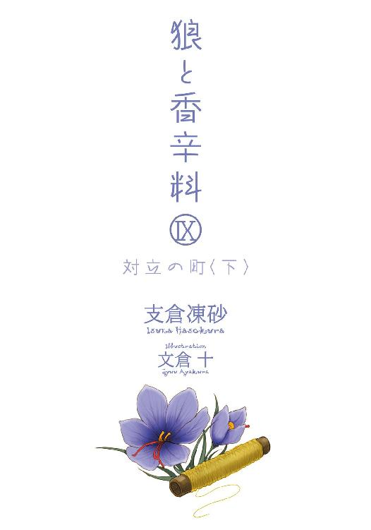
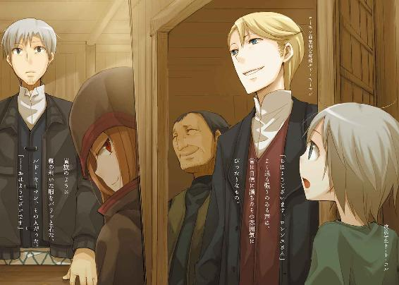
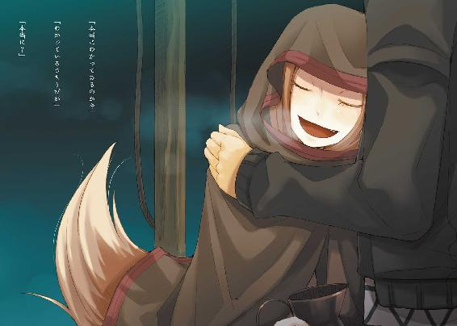
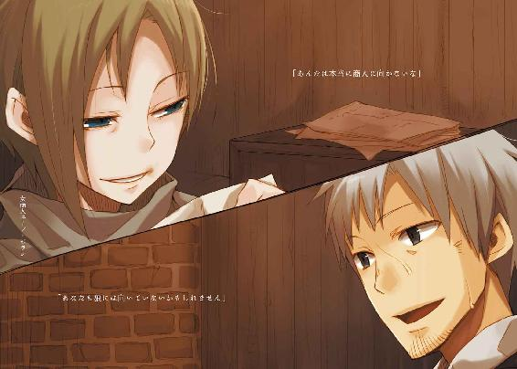
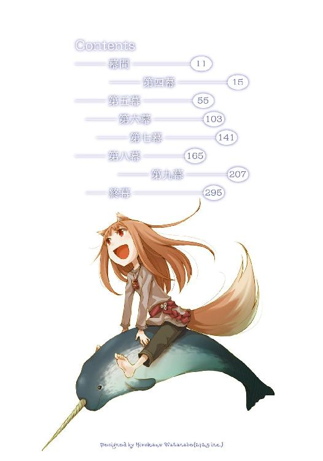
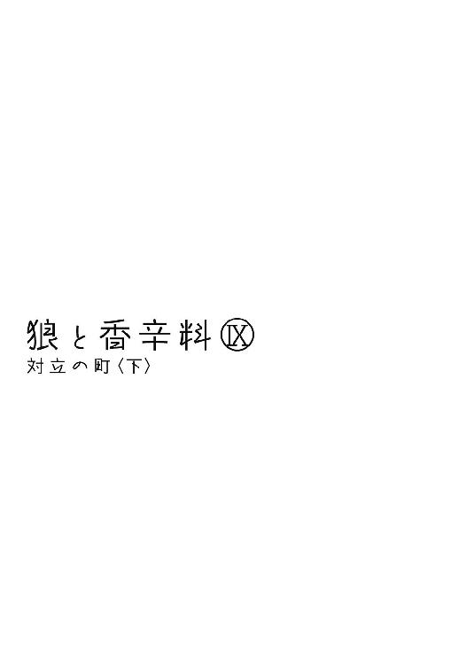
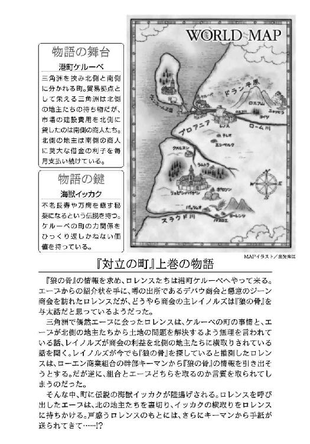
本書（電子版）に掲載されているコンテンツ（ソフトウェア／プログラム／データ／情報を含む）の著作権およびその他の権利は、すべて株式会社アスキー・メディアワークスおよび正当な権利を有する第三者に帰属しています。
法律の定めがある場合または権利者の明示的な承諾がある場合を除き、これらのコンテンツを複製・転載、改変・編集、翻案・翻訳、放送・出版、公衆送信（送信可能化を含む）・再配信、販売・頒布、貸与等に使用することはできません。
人というものはとても脆い。
牙を持たず、爪を持たず、逃げるための羽すらもない。
だから、人は身を守るために頭を使う。
技術、策略、あるいは。
ただ、人であろうが動物であろうが、身を守るために共通して取る方法がある。
それは、群れを作ることだ。
一匹ずつなら弱い羊であっても、何千匹と群れることでちょっとやそっとの狼の襲撃ではびくともしなくなる。
その集団が一匹の獣として機能することで、子孫を残し、自分たちの身の安全を保つ。
それは人も同じことであり、彼らは寄り集まって集団で暮らし、その集団はやがて村と呼ばれ町と呼ばれ、都市と呼ばれついには森の暗闇を克服する。
しかし、自分たちの身を守るために寄り集まった集団同士が、いつしか互いに争い合うことになったのもまた真理といえるのかもしれない。
自分たちの身を守るために群れるということは、自分たち以外は敵になることを示すからだ。
彼らは一匹の大きな獣であり、そして、ある無力な一匹がその爪と牙の恩恵に与るのであれば、彼はその集団の中で、自分である前にまずその獣であらねばならなくなる。
獣が右を向けば右を向き、左に走れば左に走り、鳥を食えと獣が判断したのであれば鳥を追いかけなければならない。
たとえ、それが自分の愛する歌を奏でる鳥であったとしても、だ。
人というものはとても脆いものだ。
神が雲の向こうに隠れて久しい世の中では、決して一人で生きていくことはできない。
だから森の暗闇にいる獣から身を守るために、彼らは土と石の壁に囲まれた中で一匹の獣となる。
一度その力を借りようと思えば、二度とその頚木から逃れられないとわかっていても、なお。
裏切りなど決して許されない。
嵐の吹き荒れる世を生き抜くための唯一の方法。
血と連帯の、絆なのだ。
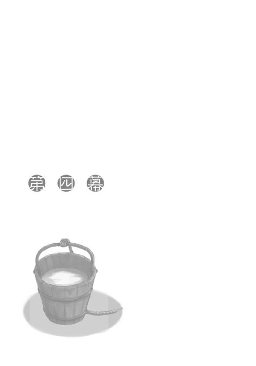
「逃げよう」
ロレンスは、短く言った。
「ここから、一刻も早く」
入り口から、大股でまっすぐに部屋の中に入っていく。
テーブルの上にはコルが解いた貨幣のパズルがそのままに残っていて、ロレンスは砂浜の砂をかき集めるように貨幣を財布の中に詰めた。
旅の暮らしとは不要な物を捨てていく生活ともいえる。
部屋の隅に置いてある麻袋に必要な物は全て入っていて、いざという時にはこの口を紐で縛って担いで走るだけでいい。
寝ているところを襲われるなど、珍しい話ではない。
「ぬしよ」
声が聞こえて、顔を上げた。
驚いた様子の旅の連れ、ホロだ。
「これはなんなのかや？」
手にしているのは羊皮紙に文字の書かれた一通の手紙。
そこには装飾の一切ない冷たい文章が綴られていて、右下には血を練って固めたような真っ赤な蠟の印が押してある。
宛先は他ならぬロレンスであり、差出人のところにはローエン商業組合とある。
行商人として不安定な商売を行うようなロレンスにとってはなによりも心強い、同郷の者たちを中心とした商人の集団だ。
その印はどこの町に行っても力強い盾となり、また強力な武器となる。
その組合が、ケルーベの北側の町の宿に宿泊するロレンスに宛てて、こんな文章を寄越してきたのだ。
「現在組合は勇気ある商人を求めています。魔女でも、錬金術師が相手でも怯まない商人を。組合の利益のため、ひいては組合の発展のために是非ご一考を......ルド・キーマン」
ホロが流暢に読み上げて、首をかしげてこちらに視線を向けてくる。
ホロの隣では、もう一人の旅の仲間である少年、コルがホロの手元の紙を覗き込んでいた。
ローエン商業組合在ケルーベ商館別館を預かる貿易商、ルド・キーマンの手紙の意味するところは明白で、エーブの語ったそのままの内容をロレンスにやらせようとしているに違いない。
イッカクをエーブに引き渡し、代わりに町の北側の土地の権利書を受け取って、町の勢力図をひっくり返す。イッカクはそうすることが可能なほどの価値を持った生物だ。
しかし、キーマンもエーブも互いに相手のことを信用することができない。契約締結の握手を交わすにはお互いがあまりにも役者すぎるのだ。そこでその二人の手を仲介する役目を担った人間が必要になる。それも、できれば自分たちの意のままに動かせる人間が。
途方もない権謀と術数は石臼となんら変わらなく、そこに挟まれれば一介の行商人など一粒の小麦程度の値打ちしかない。
ぎり、ぎり、と骨の軋む音がする。
コルとホロの緊張感のなさが、ロレンスの神経を逆撫でた。
「わかるだろう？ それは俺が属する群れからの召喚状だ」
答え、麻袋の口の紐を堅く縛る。
「群れの？」
聞き返され、ロレンスは頭を振って、立ち上がった。
「そこにある名前、ルド・キーマンはこの町にある組合の商館の別館を預かる人間の名だ。俺は直接キーマンに借りがなくとも、キーマンがこの町の三角洲で管理を任されているローエン商業組合という名前には大変な恩義がある。なにが言いたいかわかるだろう？ キーマンは、義理という縄を使って、俺をとんでもないところに引きずり出そうとしているんだよ！」
行商人のような無力な商人が、あちこちの町に行っても無事なのは組合に所属しているからだ。各々の町にある組合が、それぞれの町で自分たちの権利と特権を獲得しようとしのぎを削っているからこそ、どの町に行っても心置きなく商売を行うことができる。
だとすれば、彼らの爪と牙が得た果実の汁をすすっている身としては、彼らから協力を要請されたら断れるわけがない。
それがどんなに無茶なものであっても、自分が散々享受してきた特権の数々は、仲間の誰かが苦労して得てきたものであるはずなのだから。
だが、果たす義理にも限度がある。
キーマンは己の出世欲のために策を弄し、そこにロレンスを引きずり出そうとしている。
それが組合のためだ、という詭弁を向こうは当然のごとく用意していることだろう。体裁が整ってさえいれば正義がどちらにあるかは問うまでもなく、ロレンスが断ればたちまちのうちに組合の裏切り者ということになる。それに、なによりもロレンスが恐れる理由は他のところにあった。つい先ほどまで別の建物の中で会話をしていた相手のことだ。
キーマンがたくさんの商人を縒り合わせた巨人の頭であるのなら、その相手はその巨人と互角に渡り合う巨大な狼だった。
その狼は、あろうことかそんな組合を裏切らないかと持ちかけてきた。
当然、向こうは目もくらむような利益を用意して待っているし、おそらくはロレンスにそんな裏切りの話を持ちかけることそれ自体が、すでに戦略の一つに組み込まれているはずだ。
そこは馬鹿げた金額が飛び交う赤熱した鉄火場で、この大きな渦に巻き込まれれば一介の行商人など簡単に権力の嵐に引きちぎられてしまうだろうことが予想できる。
権力の絡む大きな歯車の中では、人の生き血ですら大した価値を持たないことが往々にしてあるのだから。
「町を出る。一刻も早く。取り返しのつかないことになる前に」
まだ間に合う。
その言葉を祈るように飲み込んで、「お前たちも早く」と言葉を紡ごうとした瞬間だった。
「ぬしよ、少しは落ち着いたらどうじゃ？」
煮えたぎった頭にするりと冷えた言葉が入ってくる。
熱した油に水を入れるようなものだ。
ロレンスは思わず怒鳴っていた。
「落ち着いている！」
ホロの隣でぶどう酒の詰まった小さな樽を抱えていたコルが、音がしそうなほどに体をすくませた。その横で、ホロは耳の白い産毛をふわふわと揺らしているだけ。
誰が一番落ち着いていないかは、火を見るよりあきらかだ。
「っ............」
ロレンスは自分の荷物から手を離し、天井を仰ぐと目を閉じて深呼吸をした。
破産寸前に追い込まれ、ホロが差し伸べてくれた手を、怒りに任せて払ってしまった時のことを思い出す。
自分はなにも成長していないではないか。
胸中で、罵った。
「ま、何事も若枝のごとく受け止める飄々とした雄もそれはそれでよいが、そんな輩は信用ならぬ。たわけのほうがわかりやすい分ましじゃな」
ホロは尻尾をぱたりと振って、隣で首をすくめて事の推移を見守っているコルの頭をくしゃりと撫でた。
「大抵の生き物は目が二つあっても一つのものしか見えぬ。この広い世の中で、なぜわざわざ雄と雌が番になるかわかるかや？」
ホロはコルから樽を受け取って、栓を口で咥えて引き抜いた。
軽く顎を上げたのは、コルに栓を持っていろという合図。
コルは慣れた様子でホロの口から栓を受け取った。
その間、ホロの目はずっとロレンスに向けられている。
「ぬしの中ではぬしの常識に従って明確な結論が出ておるのじゃろうがな」
と、そのあとに省略された言葉がわからないロレンスではない。
ホロとコルの二人が揃ってこちらを見つめてくる。
見た目はか弱い二人がそんなふうにしていたら、まるでロレンスが悪人だった。
「んふ。村では麦穂の合間からこんな光景をよく見んす」
ホロがなにを言っているのかもわかる。
コルは遅ればせながら気がついたようで、気まずそうに顔を背けたところをホロに脇を突つかれた。
言え、ということだ。
「......僕のお父さんにも、こんなところがありました」
「だ、そうじゃ」
誰が悪いのか、争う余地がない。
「......悪かった、だが──」
「謝るのはあとでもよいし、言い訳は聞きたくありんせん。わっちが聞きたいのは説明じゃ。わっちらはぬしの子分ではありんせん。こうしろと言われたからそうするという関係ではないはずじゃ。違うかや？」
怒っているのではなく諭すように語られるのがこれほどにも応えるのは、自分がホロたちにしようとしていたことの裏返しだ。
二人は見た目どおりのか弱い無垢な存在ではない。
自分の頭で考えて、行動できる一人前の存在だ。
その二人を前に独断することは、二人に対する裏切り行為ともいえる。
「ぬしよ、なにが起こっておるのかや？」
これは、若干の笑顔を持って。
ホロはロレンスが視野狭窄に陥っていたことを責めながらも、ロレンスなりに理由があってのこと、というのは認めてくれているのだ。
意地を張るのは商人ではない。
ロレンスは頭を振る。
それはホロの言葉を否定したのではなく、いったん頭を整理するためだ。
つい先刻までのやり取りを、頭の中で反芻した。
「エーブからは、密偵にならないかと誘われた」
「ほう」
ホロは短く相槌を打って、酒樽に口をつけた。
こちらの反応を気にせずあとを続けろということだろう。
「そして、この手紙を寄越したキーマンもまた、俺に密偵にならないかと言っている」
「板挟みじゃな」
ロレンスはうなずき、続けた。
そもそもこんなことになった、その大元の発端について。
「この騒ぎの発端は、町の北側の漁船が南側に捕らえられたことだ。この町じゃ貧窮する北側と富裕な南側が対立していて、それだけでも紛争の火種になる。しかも、南側がそんなことをしたのは、北側の船が海で捕まえた高価な獲物が欲しかったからだ。エーブはその荷を北に持ち帰れと厳命されている。しかし、その命を下している人物は、北側の町の発展のためにそうしているのではなく、自分の利益のためにそう言っている。そしてエーブは、その厳命に従うふりをして北側を裏切るから、その手伝いをしてくれないかと言ってきた」
リュミオーネ金貨にして数百枚ではきかない話。
おそらくは、千の桁に届く取引においてもなお、そんな発想を平気で行うのだ。
「懲りん雌じゃな」
ホロは笑いながらも忌々しそうに言い、コルは反応すれば薮蛇だとでも思っているのか、あらぬ方向を向いていた。
「だが、エーブは北側を裏切ると宣言しているのだから、他にも誰かを裏切ってもおかしくはないだろう？」
論理においては、ある命題の否定の否定は真であるし、敵の敵は味方になる。
裏切りも二回重ねればひっくり返りそうなものであるが、ひっくり返った時に自分の利益になるかどうかは、エーブのみぞ知る。
「疑いの泥沼じゃな。なるほど。それで、ぬしの群れの中の力ある奴までもが自らの利益のためにぬしを使おうとしているとなれば、まあ、か弱いぬしが顔面蒼白になってしまうのも無理はないか」
樽の中のぶどう酒を飲んで、げっぷを一つ。
こんな話をしながら酒を飲んで、それもまた実にうまそうに飲むのだから、ロレンスはそれに対して憤るか、さもなければ苦笑いするしかない。
そして、戦場で生き残る騎士はいつでも笑みを絶やさないという。
商人がいつも笑っているのはそういうことだったはずだ。
「八方丸く収まるような可能性はあるのかや？」
「エーブは北側のために動こうとしているのではないから、利益はどこから得てもいいはずだ。だから、ローエン商業組合から分け前を貰えばいいことになる。組合とエーブの利益の両立はありうる。要は、エーブが自分独りで利益を独占したがって、俺と、組合を裏切らなければいい、ということだ」
「ふうん」
「あるいは、俺が組合の利益のために動いて、エーブを出し抜き、組合が無事利益を手に入れた時」
「ふうむ......。片方は悪人の善意を期待して、片方は楽観的な展望、というわけかや？」
そうでなければロレンスがこうはならない、という論理からの結論。
ロレンスはうなずいて、テーブルの上に手をついた。
「しかし、これらも俺が現状手に入れられる情報から導かれることなんだ。こんなでかい構造の中ではわからない情報、知り得ない情報が多すぎる。もしも首を突っ込んだとしたら、俺は自分より高い位置にいる連中の駒にならざるを得ない」
誰かの企みは確かに注意深く裏を突けば自分の利益になりうる。
しかし、裏を突くには、どこが裏かを把握していなければならない。
「となれば、君子危うきに近寄らず、かや」
「ああ」
ロレンスは言って、ホロの手から組合印の押された手紙を受け取った。
一人で行商の旅をしていて、この印の押された紙に助けられたことは数知れない。
これは魔法の紋章であり、強力な武器であり盾であった。
その威力を疑ったことはない。
だからこそ、それを利用した策が自分の身に向けられた時、ロレンスは逃げるしか方法が思いつかないのだ。
「ところで、あの牝狐やぬしの群れのたわけどもは、同じ物を巡って争っておるのじゃろう？ それはなにかや」
「え？ あ、ああ。それはほら、お前が南側で見たというやつだ」
「よもや、件の骨ではあるまいな？」
ロレンスたちが、旅の目的地であるホロの故郷ヨイツからは遠ざかることになる、この海沿いの港町ケルーベに来ているのは、ある目的があったからだ。
それはロエフと呼ばれる山々で崇められていた、神と呼ばれた狼の足の骨を追いかけること。
ホロはその骨が教会によって許しがたい儀式に使われる可能性を知って、コルは自分たちの土地の神の存在の真偽を確かめたくて、その話を追いかけることになった。
ホロはいたずらっぽく聞いてくるが、あまり目が笑っていない。
そして、商品としては狼の骨とそれほどの差はない。
だからこそ、巨大な権力を持つ連中が血眼になっているのだ。
「似たようなものだ。北の海の獣。角の生えた魔法の生き物。その生肉を食らえば長寿を得て、その角を煎じて飲めば万病が癒えるという代物だ。名をイッカク。それが北の町の船の網にかかったそうだ」
酒の肴に聞いていた、といった感じのホロの耳が、ひくりと大きく動いた。
「どうした？」
「......なんでもありんせん」
あまりの噓の下手さに笑うことすらできなかった。
ホロもそれを自覚しているのか、すぐに顔を上げてこう言った。
「じゃがな、ぬしよ」
「あ、ああ」
「それを軸に話が巡っておることだけは明確なんじゃろう？」
「ああ」
「ならば、ぬしが取れる選択肢はまだあるじゃないかや。のう？」
と、ホロはどこか楽しげにコルに話を向ける。
ホロが客観的にロレンスの話を見ているのならば、コルはそんなホロとロレンスのやり取りを外から眺めている。
第三の選択を見つけやすいのは、コルのような立場だ。
「え、あ、えっと......」
「ほれ、胸を張りんす」
ホロに背中を叩かれ、コルは思いきったようにこう言った。
「あ、あの、ホロさんがそのイッカクを奪えばいい、のでは、ないでしょう......か」
「......え？」
コルの言葉に、ロレンスは言葉を失い、聞き返す。
そんな発想は、ロレンスの頭のどこにもない。
「なにかを巡る争いは、そのなにかがあるからこそ起こる、のだと思います。ホロさんなら川も一っ飛びでしょうし、簡単に奪えるのではないでしょうか」
コルはどちらかといえば山奥深くの住人だ。
そのお世辞のような本気の言葉に、ホロは気分よく耳をひくひくとさせている。
確かにイッカクを盗み出すこと自体は簡単かもしれない。
厳重な警備といっても、ホロの真の姿である狼の牙の前では紙の鎧で武装した子供の兵と大差ない。キーマンやエーブといった化け物のような連中が策を弄して奪い合いを繰り広げる中でも、あっさりと、あっけなく横取りすることができるだろう。
しかし、その後のことを考えればまったく現実的ではない。
ロレンスは頭を搔いて、こう言った。
「あのな、そんなことをしてもあとの処置に困るだけだ。奪うのは簡単でもまず間違いなくお前の目撃者は出る。そこでそのイッカクを誰かに売ろうなどと考えるのは馬鹿げたことでしかない。そのくらい──」
「もちろんわかりんす。じゃがな」
ロレンスの言葉を止めたホロが、目を細めて楽しそうに小首をかしげた。
「その程度の話じゃというのはよくわかったじゃろう？」
「......は？」
「わからぬかや。ぬしが顔を真っ青にして逃げ支度を整えようかという話はな、わっちが爪と牙を晒せばあっさりと片がつくような話じゃ。その連れであるぬしがおたおたしておるなどと、わっちゃあ困りんす。ぬしを旅の連れに選んだわっちの沽券に関わる」
「......」
ロレンスは言葉を失って、ホロを見つめ返していた。
確かに、そう言われればそうだ。
誰が誰を騙してどんな利益を得ようかという、町商人たちの気が遠くなるような権謀術数に満ち満ちた壮大な話も、ホロにすればその程度の話。
急に、自分が恐れていたものが小さく見えてきた。
ついさっきまで青かった顔に血が上ってくるのを、ロレンスは止めることができなかった。
「くっくっく。コル坊。これがコップの中の嵐に翻弄される、ということじゃ」
コルはもちろんロレンスのことを気遣って気まずそうな顔をしていたが、いっそのこと笑ってくれたほうがよかったかもしれない。
少女のような上目遣いでこちらを見てくるコルに苦笑いを返すと、素直な少年はほっとしたように笑った。
頭の血は完全に下がり、狭かった視野は広がった。
常に手持ちの武器を確認しろ、とは師匠の言葉。
自分の側にいるのは、ヨイツの森の賢狼ホロなのだ。
尻尾をぱたぱたさせながら酒を飲むその様に、危うく威厳を感じるところだった。
「それに、もしもぬしがこの話をうまく渡り終えたら、骨の話を集めるのも簡単になるんじゃないのかや」
「......それは、エーブにも持ち出された。エーブは俺に、自分の利益のために働いてくれるのであれば、狼の骨についての情報を渡してもいいと言った。つまり、狼の骨の話を知っているらしいジーン商会のテッド・レイノルズから、それを聞き出してやっても構わない、と」
ホロは片眉だけつり上げて、怒っているような笑っているような、曖昧な表情を向けてくる。
「ふん。牝狐のほうがよほど落ち着いておる。大体な、よいか？ わっちらが追いかけておる骨の話も、ぬしが今巻き込まれておる話に負けず劣らず大きな規模ではないのかや？」
その指摘にロレンスは言葉を失くす。
ホロは、もちろん容赦しない。
「わっちらが骨の話を追いかけると決めた時、ぬしはそのことをわっちに警告したじゃろうが。というのに、いざそれと同じ規模の話を前にしたらその尻込み具合。こんなことでは......」
怒った顔から、徐々に力を抜いて、つと視線をそらす。
「わっちゃあこの先、ぬしの言葉を疑ってしまいんす」
最後には悲しそうに言って、ちろりと上目遣い。
挑発されているのはわかる。
しかし、それはホロなりのはっぱのかけ方だ。
「ぬしは口だけの雄ではありんせん、とわっちに言わせてくりゃれ？」
今度はからかうような顔で首をかしげている。
ロレンスが顔を渋くすると、にっこりとして満面の笑みに変えてくる。
体面に固執することは商売のうえでもっとも邪魔なこと。
ただ、だからといって常に合理的な行動などできはしない。
ロレンスはうつむいて唸る。
唸って、顔を上げた。
「逃げる、という選択肢は取り下げよう」
「うむ。ま、肩の力を抜いてやればよい」
「いざとなればお前がいるから？」
骨の話を引き出せるとなれば、ホロは本当のところは手段など選ばずに牙と爪で解決を図りたいはずだ。
だが、それはロレンスにとっては最良の解決から程遠い。
そこのところを確認するつもりでそう聞き返したら、ホロは首を横に振って、落ち着いた笑顔でゆっくりと答えた。
「別に口に咥えた海の獣を誰かに売り渡す必要などありんせん。コル坊が言ったようにの、仔同士が肉を取り合って大喧嘩の時はその肉を食ってしまうのが最良の解決策じゃ」
「......俺がそんな判断を下せなくても仕方がないと思う」
「ぬしがいかにわっちのことを考慮しておらんかということじゃな」
ホロとロレンスの応酬に、間に挟まれたコルは視線を行ったり来たりさせていた。
「当たり前だ」
そして、ロレンスがぴしゃりと言うと、コルは少し不安げな顔をした。
確かに傍から見るとそんなふうに見えるかもしれない。
しかし、程なくしてコルも気がついたらしい。
ホロが表情とは裏腹に、尻尾をふさふさと揺らしているのだから。
「ふん。ぬしは口ではあれこれ言って、結局いったい何度わっちに頭を下げたんじゃ？ 三度も四度も大して変わらんじゃろうが」
ホロの力にはなるべく頼りたくない。
口ではそう言うものの、危機を何度も救ってもらっている。
ただ、世の中結果が全てのように見えてはいても、実際はそうではないはずだ、と最近は思っている。
だからこそ、散々その力に頼っていてもなお、ロレンスはホロの人の噓を見抜く耳を前にして、こう言うことができた。
「俺は、お前がヨイツの賢狼だからという理由で旅の連れに選んだんじゃないからな」
ホロはくすぐったそうに首をすくめて笑う。
生真面目に聞いていないふりをしているコルを前に、これ以上のことは言うのは不可能だ。
もっとも、ホロと二人きりでも言えたかどうかは怪しいが。
「ならば、賢狼も唸る頭の回転を見せてもらうかや」
「もちろん」
ロレンスは短く答えた。
「もちろん」
一人なら逃げていた。
あるいはいいように使われていた。
ただ、口元が笑ってしまったのには訳がある。
本気で？
本気でこの構造の前から逃げ出さなくともいいのだろうか？
そんな言葉を、どうしても胸中で呟いてしまったからだった。
ロレンスたちが宿泊するのは元々エーブから紹介された宿であるし、キーマンにも居場所がばれている以上、町から逃げ出さないと決めたら腹をくくって向こうからの接触を待つほかない。
こちらが勝手に情報を集めようとして、それを監視でもされていたら、エーブに対してもキーマンに対しても良い印象を与えはしないだろう。
それに、相手が情報や力のうえで圧倒的に上であるのなら、ロレンスにできるのは相手の出方を見極めたうえで出し抜くという、後の先を取る戦法以外にない。
それは頭ではわかっているし、だとすれば椅子に座って貧乏ゆすりをしているよりも、ホロのようにベッドの上でのんびり尻尾を揺らしながらうつらうつらするのが最良の選択肢なのだ、ということももちろんわかってはいる。
しかし、ロレンスは窓際に置いた椅子の上に座り、落ち着かなげに外を眺めていた。
この季節の灰色の空は、陽気な心ですら曇らせてしまう。
それが憂鬱な気分であればなおのこと。
エーブの企みと、キーマンの企みと、あるいは、彼らの欲望を前にして自分がいかに小さいものであるかを思い知らされれば、出てくるのはため息ばかりだ。
ホロにはっぱをかけられた手前、逃げずに町にとどまることを決断したものの、不安は一向に拭えなかった。
相手は一対一の商談ではなく、多対多の商戦に秀でた商人だ。
知らない商売には手を出すな、というのは師匠に教えられた鉄則で、これはそれにまったく反するような行為だった。
ロレンスはもう一度ため息をつき、ふと部屋の中に視線を戻す。
ベッドの上で睡魔と共に崖っぷちで遊んでいたホロが、ついにまっさかさまに奈落の底に落ちていた。
コルはそんなベッドの隣の床に座り、腰帯を外して何事かをやっている。
つい先ほど、宿の主人から針を借りていたので腰帯のほつれを繕っているのだろうと思ったら、どうもその逆のようだった。
コルは腰帯の端の糸のほつれを指でほぐし、一本一本の糸にばらしている。
それから、腰帯から解いた頼りない糸を二本か三本丁寧に縒り合わせ、針の頭に通している。
最後にいそいそと取り出したのがぼろぼろの外套であれば、コルがなにをしているのかはわかりすぎるほどにわかった。
ロレンスは立ち上がって、コルに歩み寄る。
「そんなことをしていたら、腰帯がなくなってしまうだろ」
間に合わせの道具で外套のほつれを縫い始めたコルは、もう何度もそうしてきたように手馴れた手つきですいすいと針を外套に通していく。
ロレンスの言葉に顔を上げて、恥ずかしそうに笑っていても手が止まらないくらいだ。
糸が短いこともあって、補修はあっという間に終わった。
ただ、商品の良し悪しを選別して利益を上げる商人からすれば、そんな補修はきっと神様に祈るのと同じくらいの効果しか持たないだろうと思えた。
「糸くらいなら買ってやるが」
「え？ いえ......大丈夫ですよ。ほら」
糸を歯で切って、少し誇らしげに外套を広げてこちらに見せる。
ホロが見たら尻尾をわさわさいわせながらコルの頭を小突いたかもしれない。
ロレンスはホロではないので、苦笑いのあとに、コルのぼさぼさの頭を一撫でして、こう言った。
「さっき、銅貨の謎を教えてもらってその講義料をまだ渡してない。教会法学の講義を受けるのにも、講義料は必要だろう？」
コルはすぐなにか言い返そうとしていたが、相手の好意と自分の謙虚さが天秤に載ったのであれば、取るべきは相手の好意と判断したようだ。
困ったように笑って、「本当に、いいんですか？」と言った。
「じゃあ、仕立て屋にでも行って糸を見繕ってくるか。これからも補修できたほうがいいだろう？」
もしかしたら糸を買う金で今のよりも多少はましな外套が買えるかもしれなかったが、その提案はしなかった。
コルは意を決して村を出てきた少年だ。
その旅立ちの門出に渡されるものが、わずかな路銀だけだろうか？
村から出てくる時の思い出の品が、補修用の糸よりも低い値段だという現実を突きつけられるのは、良い気分ではないだろう。
「お願いします！」
嬉しそうにコルは言って、いそいそとぼろの外套を身にまとったのだった。
ホロもついてくるかと思ったが、寝入りばなは鼻をつまんだって起きないのでコルと二人連れで外に出た。
それに、部屋に誰かいたほうがキーマンかエーブが連絡を取りに来た時に助かるだろう。
「で、どの糸にするか」
宿の主人に仕立て屋の場所を聞き、迷うこともなく到着した。
イッカクを巡る話でケルーベの町は大わらわ、というのは一部の人間にしか通じないことらしい。
権力は一部の人間だけが握るからこその権力なのであって、大多数の人間は大規模な土地の所有権を巡る話や町での名声の高低などは気にもしないし、そもそも気にしたところではるか頭上で輝く月のようなものでしかなかったりする。
ロレンスもホロと出会う前までは、まさしくそんな月を眺める身分だった。ホロにあれこれはっぱをかけられ腹をくくったとはいえ、住みなれた場所はやはりこんな「日常」の中なのだ。
到着した仕立て屋は、鎧戸を開いて縄でつって即席の台を作り、その上に服と一緒に糸やつぎあて用のぼろ布などが並べられている。
暇そうに店番をしているのは少年で、頰杖をつくその手は染料のせいで半分が真っ黒に染まっている。
ロレンスたちに気がつくと途端に背筋を伸ばして笑顔になり、それを見るとロレンスのほうもつい笑顔になってしまう。
住みなれた世界の匂いがした。
「色によって値段はまちまちだが、どうするかな」
「えーと......こんな色ですから......」
と、コルが羽織っている外套に目を落とした瞬間だった。
「ちょうど、くすんだ黄色だと目立ちませんよ」
店番の少年の言葉に、コルがびっくりして目を見開く。
黄色く染められた品は高級品の証であり、それがどれくらい高級かというと店番の少年が欲深そうな笑顔を浮かべているくらいだ。
年の頃は店番の少年のほうがコルより一つか二つ年下だろうが、したたかさでは比べ物にならないだろう。職人の見習い小僧といえば親方に殴られるか蹴られるかするのが仕事だ。肝の据わり方が違う。
「えっと、ですが、黄色は......」
染料の色によって値段が変わることくらいコルも知っているようで、慌ててロレンスに視線を向けてくるが、それを皆まで言わせる店番ではない。
「ややや、これはどこかの大店のご主人様でしたか」
コルの言葉をふさいで店の台に身を乗り出してくる。
きっと、売った商品によって駄賃の多寡が変わるのだろう。
「やあ、これはまいったな。今日はそれほどめかし込んできたわけじゃないんだがね」
ロレンスはその商売根性に免じて少年の口上にそんなふうに付き合ってやる。
手で襟を直して胸を張っていると、コルだけがきょとんとしていた。
「ええ、ええ、もちろんわかりますとも！ どうです、こちらの品は。ほら、ご覧になってください」
そう言って糸の見本を差し出してくる。
掌に載る程度の短いものだが、風で飛ばされてなくしでもしたら、この少年は向こう三日間に渡って飯と給金が抜きになるはずだ。
衣服を黄色く染める染色は、海を七つ渡ったところにある、地上の楽園へと続く川から流れてきたサフランと呼ばれるものによって行われる。
黄色は金を思わせる高貴な色だ。
染料のそもそもの高価さもさることながら、良い服の存在意義とは見栄を張るためのものであり、金持ち連中がこぞって買うせいでますます高くなる。
なんにせよ、コルは話がどこに流れ始めているか察したようで、慌ててロレンスの服の袖を摑んでくる。
「ロ、ロレンスさん」
「ん？」
ロレンスは笑顔でコルのほうを向き、そこに客を逃がすまいと少年の声が飛ぶ。
「旦那様、旦那様。ほら、よくご覧になってくださいませ。この鮮やかな色の具合をご覧くださいませ。側に金を置けば金のほうがくすんでしまうような鮮やかな黄色でしょう？ うちの親方の最高傑作とはこのことです。どうです、いかがでしょう！」
必死に売り込む少年の言葉にロレンスはいちいちうんうんとうなずいている。
少年の後ろ、店の奥では布地の裁断をしていた親方らしき男が手を止めてこちらを窺っている。
どちらかというと、その顔は糸が売れるか売れないかよりも、小僧の挙動を眺めているようだった。
ロレンスが親方らしき男のほうを見ると、向こうも気がついて二人の視線がかち合った。
相手は声なく笑って掌を上に向ける。
ロレンスは、小さくうなずいて少年に視線を戻す。
「確かに綺麗な黄色だ。まさしく黄金も負けてしまうような輝きだ」
「でしょう！ では、こちらを──」
「だが、こんなにも光り輝く糸で外套を縫ったらどうなるだろう？ 黄金ですらくすんでしまう糸なのだから、さぞ縫い目が目立ってしまうだろうさ」
その瞬間、少年の顔が売り込み用の必死な笑顔のまま固まった。
後ろでは、親方らしき男がやれやれとため息をついていた。
「だから、縫い目が目立たないように、最も安い灰色の糸をくれ」
黄色の糸を売った時の駄賃が頭の中を乱舞でもしていたのか、店番の少年は固まったまま返事もできず、後ろから歩み寄ってきた親方らしき男が代わりにこう言った。
「長さはどうします？」
職人の名に相応しいごつごつの手が少年の頭をごんと叩いた。
ずる賢い商人相手にも立ち回れなければ、よき職人になって良い品を作っても高値で売ることはできない。
親方らしき男は、店番の少年にそれを教えたかったのだろう。
「リュート銀貨三枚だとどのくらいに？」
「そうだね......そのほつれ具合なら同じ縫い目を五周は回れるかね。それと、ついでにどうだい。この前大青を山ほど積んだ船が入港してね、青い糸が値下がりしているんだ」
「なら、今はそれを売らずにさらに買い増しして、値が上がってから売るといいですよ」
初めから無駄だとわかっていたように、男は笑って「じゃ、リュート銀貨三枚分な」と言って灰色の糸が巻かれた小さな筒を取り出したのだった。
買い物を終えてそのまま宿に戻るのもなんなので、川沿いの市場を町の様子を眺めがてらぶらぶらと歩いていた。
コルはロレンスの後ろを二歩ほど遅れてついてくる。
糸を巻いた筒が入った小さな麻袋を抱えるようにして持っていて、どことなく疲れている感じだった。
「どうした？」
ロレンスが聞くと、意地悪された仔犬のような視線を向けてくる。
賢いコルのことだから、自分がからかわれたことに気がついているのだろう。
ただ、思いのほか効果が大きかったらしい。
「そんなに驚いたのか」
「......ええ、いえ......」
コルはきょろきょろと視線を動かしている。
ロレンスは、ホロみたいな底意地の悪い狼と一緒の旅にちょっと慣れすぎたかもしれない、と思った。
「ホロのいたずらのほうがもっとひどいだろう？」
と、ロレンスは言い訳がましく言うことになった。
コルのほうもそれでなにか思い出したのか、恥ずかしそうに小さくうなずいて、「はい」と答えた。
「それに、もっと図々しく振る舞うことだと言ったはずだ。俺は神様ではなく商人だからな、請われないで慈悲をかけることはない」
コルには軟膏の代金も支払っていないし、銅貨の箱の謎解きは実際にそれなりの報酬を支払うに値する情報だった。
ただ、商品を受け取った時に相手方が代金のことを忘れているのなら、商人であれば十人中六人が黙り、残り四人は恩を売るためにそのことを指摘するだろう。
ロレンスは、自分がどちらの側だろうかと考えて、こう付け加えることにした。
「もちろん、そう言われてすぐに図々しく振る舞うような奴なら旅には加えてやらないところだがな」
コルは困惑するでもなく、苦笑いをする。
ホロがコルを気に入る理由もよくわかるというものだ。
「もっとも、俺は神様ではないが祈られるのはそんなに嫌いではない」
「え？」
「あれが欲しいこれが欲しいと祈られるのが心底嫌ならば、俺は貪欲な牙の生えた誰かさんと旅をしていないはずだからな」
その言葉に、コルは麻袋を抱きしめながらくすぐったそうに笑った。
「ただ、お前は聖職者の卵だからな。お前が俺に祈らないのなら、俺はここで告解させてもらう」
「え......と、それは......」
「今さっきのやり取りでな、幾分かは褒められない理由もあったことを告白する」
ロレンスは視線をコルから外し、そう言った。
ぽかんとしていたのはほんの数瞬のこと。
すぐに思考が追いついたコルは、本職の聖職者顔負けの真摯な顔つきになって聞き返してきた。
「どういう意味でしょうか？」
「そのままの意味だ。半分は八つ当たりだった」
「......八つ当たり？」
コルの悪い癖は、考えることにすぐ気を取られてしまう点だ。
ロレンスを見上げながらそう聞き返した直後、つまずいてすっ転んだ。
「宿で、俺の散々な慌てぶりを見ただろう？」
そんなコルの様子を笑わないのは、真面目に心の内をさらけ出しているからだ。
コルが立ち上がるのに手を貸してやりながら、ロレンスはそう言った。
転んだあとにどこを払うかでその人の身分が決まる。
人を払うのが王族で、咳払いをするのが貴族で、膝を払うのが平民だ。
コルはどこも払わなかった。
きっとよい聖職者になることだろう。
「はい」
しかし、そんなふうに即座に返事をされたらさすがに苦笑ものだ。
コルも慌てて取り繕おうとして、ロレンスはそれを笑って封じておいた。
「いや、いいんだ。お前が俺の弟子ならば、威厳を保つために頰の一つでも張り飛ばすところだけどな」
コルは少しだけ困ったように笑い、それから自分の頰を軽く撫でる。
「で、そんな醜態を晒してしまったからな。その仕返しを誰かにしたかった」
「......職人の親方の人に目配せをしていたのは、そういうことなんですね？」
さすがによく見ている。
「そう。頭越しにやり取りをして、間に立つ者を翻弄する。お前が高級品を買われてしまうのではなかろうかとやきもきするようにしたのも、それを見て優越感に浸るためだった。まったく......大人気ないことだけどな」
首筋を搔いて視線を川に向ける。
川沿いでは荷を上げ下ろししている船に商人連中が群がっていた。
風に乗って聞こえてくる言葉の断片と身振り手振りから、どうも荷を運ぶ船に乗せて自分たちを南側の町に渡してくれと交渉しているらしい。
町の規則では町になにか問題が起こった際は渡河が規制されるという。
しかも、川を渡るという行為は川の所有権、果ては領主権に繫がっていく重要なものだ。
袖の下の小銭程度で渡し守たちが規則を破るとも思えなかったが、商人連中がそれをわかっていてもなお南側に渡る交渉をしているあたり、彼らにとってこの町に起こった問題はそれほどのものらしかった。
その点からいえば、どんな方法を使っているのかわからないが、宿に手紙を送ってきたキーマンの組織力には恐ろしいものがあると改めて理解できた。
「その告白、確かに聞かせていただきました。きっと神はお許しになるはずです」
静かに聴いてくれただけではなく、本職の真似をしてそんなお決まりの言葉もつけてくれた。
ロレンスは、感謝の意を含めて「ありがとう」と言っておいた。
「ですが、ロレンスさん」
「ん？」
ロレンスがすっきりして町の様子を眺めていると、ふとコルが言葉を向けてきた。
「あんなことをしたもう半分の理由は、別のことなのでしょう？」
コルはまっすぐにロレンスのことを見つめてくる。
その目には他意などかけらもなく、だからこそ、それはまっすぐな一本の槍のようにロレンスに突き刺さった。
「ロレンスさんは、ホロさんの期待に応えようとしているんですよね？」
その目は期待に輝いていて、まるで英雄譚を聞く子供のようだ。
その期待に満ちたコルのまなざしが痛いくらいに眩しい。
ロレンスは、気恥ずかしさもあって思わず目をそらしてから、なんとかこう答えた。
「そういう面も......なくはないが......」
自分の交渉力を確かめたのは、不安の裏返しともいえるのに。
「僕は、ロレンスさんのお力にほとんどなれませんけど、頑張ってくださいね！」
「あ、ああ」
コルは細い体を精一杯力ませて、心の底から応援してくれているようだった。
ロレンスからすれば、一回りも年上の男があれほどの醜態を見せたら少なからず評価を下げそうなものだと思う。
コルに糸を買ってやろうと思ったのも、その際に店番の少年を翻弄したのも、自分の威厳を少しくらいは回復させておこうという、簡単に言ってしまえば見栄を張るためにやった面が少なからずある。
それが、コルはロレンスを侮るどころか、こんなにも応援してくれている。
コルの性格がそうだから、といえばそれまでだが、不思議なことではあった。
そして、商人の好奇心は猫に勝るのだ。
「あんな醜態を晒した挙句、八つ当たりするような情けない商人に愛想を尽かさないなんて、お前は不思議な奴だな」
言うと、コルは案の定きょとんとした。
おべっかを使っているわけではなく、やはり本心から言っていたのだろう。
「え......？ だって......その、ロレンスさんはホロさんと旅をしているんですよね？ ホロさんからは故郷を探す旅だと聞きました」
「そうだが」
「だったら、そんなことは......。ロレンスさんがあれほど慌てるのは、今目の前にあるのがそれほどのこと、ということなのでしょう？」
コルの言葉の意味がうまく摑めない。
確かにロレンスが今目前にしているのは、行商人の手には余るようなことで、ホロの後押しがあるというのにロレンスは未だに腹がくくりきれない。
ただ、コルの言葉はなにか別のことを意味しているような気がする。
あんなホロと一緒に旅を続けられるからロレンスは大物に違いなく、そんな大物が慌てるのだからそれほど大きな問題に違いない、という意味なのか？
それとも、別のなにかだろうか。
ロレンスはそう考えて、気がついた。
コルの言葉が、あとに続く。
「だって、この旅は、ずっとホロさんが語り継ぐ昔話になるんですよね？ だとしたら、たちはだかる困難や問題はそれ相応のもののはずです。それに、僕はそんな旅に加えてもらえたことを本当に感謝しています！」
無邪気な笑顔を持って、コルはそう言った。
どこかの町や街道の宿屋で聞く、伝説や言い伝えの冒険譚。
その中のどれかに自分が参加できればいいのに、とロレンスが胸を焦がしたのはもう十年以上昔のことだ。
頭が良くて、商人が裸足で逃げるような合理的な考え方ができるコルであっても、それは同じなのかもしれない。
微笑ましいといえばこれ以上微笑ましい少年はいないかもしれなかった。
「確かに、あいつはこの旅のことを未来永劫語り継ぐ、なんて豪語していたな。ただ、それならなおのことお前には気前よく振る舞わないと」
冗談めかして言ってやると、コルはくりくりと目を動かして笑って答えた。
「僕も、お二人のお荷物として語られたくありません」
ホロを前にしたらあまりできない冗談の応酬だ。
ロレンスは軽く首を振り、一つ小さなため息をついて空を見上げた。
「ま、なんにせよ、そうなると大きな前提として確かなことが一つあるようだ。すなわち、あいつのご機嫌を損ねることだけは二人共に避けなければならない」
額面どおりに言葉を受け取るようなコルではない。
嬉しそうなのは、ロレンスの言わんとしていることを察したからだろう。
「俺は時としてあんな醜態を晒すことがある。だからな、誰かの協力を必要とすることもまた、ままあることだ」
「はい」
コルは返事をして、言葉を続ける。
「お力になれることでしたらいつでも」
ロレンスがこれから挑もうとしているのは多対多の商戦に慣れた連中だ。
味方は、一人でも多いほうがいい。
ホロはロレンスになんと言った？
人を使うことに慣れろという指摘は、そのまま他人を信用しろ、と言い換えることもできる。
そして、それは多対多を戦い抜くために必要で、またとても重要なことになる。
ロレンスは軽くコルと握手を交わすと、気持ちがとても落ち着いた。
それは、自分の交渉術を再確認するために仕立て職人の店番をしていた徒弟を翻弄するような情けないことよりも、何百倍も有効だった。
もしかしたら、今頃宿のベッドの上で、ホロはにやにや笑っているかもしれない。
「じゃあ、戻るか」
ロレンスは言って、足を宿に向ける。
「はい」
ついてくるコルは、斜め後ろを歩かなかった。
曇りがちのすぐれない天気も、それほど悪いものではないようだった。
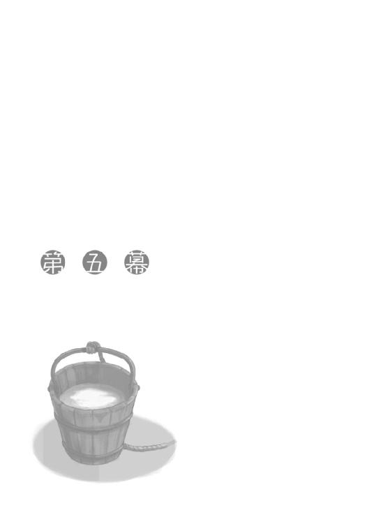
コルと二人で宿に戻れば、ホロは相変わらず眠ったままで、毛布に包まってこんもりと体を膨らませながら小さないびきをかいていた。
ロレンスがコルと顔を見合わせて無言で笑っていると、その直後にホロのいびきが止まった。
その耳が陰口には格別よく働くのか、はたまたその手の空気に敏感な髭でも生えているのかもしれない。
ゆっくりと目を開けたホロは、一度顔を毛布の中に潜り込ませてから、ぶるぶる震えて大欠伸をした。
「で、結局具体的にはどうするんじゃ？」
コルがロレンスと連れ立って外に出ていたことに気がついたホロは、真っ先にコルを呼びつけてすんすんと鼻を鳴らしていた。
なにか食べ物を買ってもらっていたら、分け前にありつこうという魂胆かもしれない。
コルは若干恥ずかしそうに、身をすくめてされるがままだった。
「行商人は組合から離れたら生きていくことはできない。少なくとも、対立するという手段は取らない」
「寄らば大樹の陰、というわけかや。まあ、小物ならば大樹の陰におっても好き勝手に小回りが利くからの。正しい選択じゃろうな」
苦笑いで聞くほかないホロの評も、エーブがロレンスに裏切りの話を持ちかけてきた論調と似通っていた。
ロレンスがこの町では重要な人物ではないからこそ、町の行く末を左右するような大きな事件の中で自由に動き回れるというその考え。
小物だから、というのが余計だが、現状は正しく認識しなければならない。
「短期的に最大の利益を狙うなら、イッカクをエーブと共に奪取する選択肢だけどな」
「そして、手に手を取っての逃避行かや。それはそれで楽しいのかもしれんしな？」
ホロがいなかったとしたら、そんな危険と冒険に満ちた選択肢もありうるだろうか？
ロレンスは一瞬だけそんなことを考えたが、そもそもホロと一緒でなければとっくにこんな危険な事態からは身を引いていた。
馬鹿馬鹿しい、と肩をすくめてやると、ホロは意地悪げな笑顔を浮かべつつも、尻尾は安堵するようにゆらゆらと揺れていた。
その可能性が怖いのならそう口に出して言えばいいのに、とはロレンスも口に出しはしない。
劇の内幕が、観客たるコルにばれては興ざめなのだから。
「で、だ。宿の場所が組合とエーブにばれている以上、いつ妙なことに巻き込まれるかわからない。その時にそれぞれちぐはぐな行動を取らないように、改めて状況の確認をしておきたい」
ロレンスが言うと、ホロはしばし無言でロレンスのことを眺め、それから小さく笑った。
「どうした？」
と聞き返しても、首を横に振って答えてくれはしない。
ただ、なぜ笑ったのかはなんとなくわかる。
ホロの笑い方が、転んでも泣かなかった子供を見るようなものだったからだ。
「んむ」
ホロはうなずき、すぐ側に侍らせているコルの頭を突ついた。
コルも対等の仲間。
「はい」
コルがそう返事をしてから、ロレンスは説明を始めたのだった。
酒場も兼ねている宿の主人が、追加の酒の注文に欠伸まじりで応じるようになった時刻。
キーマンか、あるいはエーブの手の者が部屋を訪れると思っていたのだが、なんの音沙汰もなかった。ロレンスは気が気ではなく酒で唇を湿らせる程度だったのに、取り越し苦労だったらしい。
対するホロはいつもどおりで、コルを早々につぶしていた。
そして、倒れたコルがよく眠っているのを確認してから、自分のベッドの上に放り投げていた。酔わせてつぶさないとこのたわけは床で寝ると言って聞かぬ、というのがホロの弁。
優しいのか優しくないのかよくわからない。
乱暴であることだけは間違いがないようだったが。
「さて、これで今日は打ち止めだ」
今日は続けて二回も醜態を晒してしまったので、お詫びというわけでもないが、ホロが望むままに酒を階下に取りに行ってきた。
ホロは当然それを期待していただろうが、ロレンスがあまりにも素直に言われるがまま追加の酒を取りに行くので、拍子抜けしていたのがありありとわかった。それどころか、ついさっきなどは自分で酒の追加を頼んでおきながら、頼みすぎではなかろうかと不安げにしている感すらあったくらいだ。
だから、いつもならば打ち止めに不満そうな顔をするところに、今日はちょっとほっとしていた。徹頭徹尾自分の欲望に忠実でないところが、この狼のずるいところだ。
とはいえ、ホロはホロ。
「ま、ぬしの弱音も打ち止めじゃといいがな」
ベッドの隅に腰掛け、唸るコルの顔の下に尻尾を敷いてやっていたホロは、ロレンスの手から酒を受け取りながら意地悪そうに笑って言った。
下手に返事をするよりも、無視してやるほうが喜びそうなくらい子供っぽい。
しかし、あまりホロを喜ばせると尻尾の枕で眠るコルが目を覚ましてしまうかもしれないので、ロレンスは注意深く返事をする。
「なに、強い者は必ず死ぬというのが傭兵の経験則らしいからな。弱音を吐くくらいがちょうどいい」
「たわけ」
ホロはつまらなそうに言って、後ろのコルを振り向くと、耳をつまんで少し顔を浮かせていた。その顔の下から尻尾を取り出そうとしたらしい。
もうちょっとどうにかしようがあるだろうにと思ったら、どうやら涎を垂らされそうになったようだ。「油断ならぬ」と尻尾を撫でてほっと一息ついている。
ロレンスはそんな様子を眺めながら、テーブルの上の冷めた炒り豆をつまんで口に放り込む。
それから木窓を少し開ければ、酒場帰りと思われる千鳥足の男たちがぽつりぽつりと歩いていた。祭りの時期でもないのにこんな時間に酔っ払いがふらふらしているようでは、町の統治は中の下といったところだろうか。
北側を統治するのが地主たちだとするのなら、その求心力は失われかけていると見たほうがいいだろう。
一発逆転のイッカクの存在。
その重要性は、ますます増しているように思えた。
「わっちがおるのに外を見るのかや」
ホロはいつの間にか椅子に座り、炒り豆を手で一杯に摑んで口に放り込んでいた。
ばりばりと音を立てて嚙み砕く様は、気持ちよいくらいに大胆だ。
ロレンスは肩をすくめ、木窓を閉じた。
「いつでも逃げられるようにしておかないとな」
その答えは、ホロのお気に召したらしい。
くつくつと笑ってこぼした豆を拾って食べていた。
「ま、それはそうとぬしよ。少しは酒を付き合ってくりゃれ？ わっち一人で飲んでも面白くありんせん」
ホロが縁を指で突ついている使い込まれた土器のジョッキには、階下から入れてきたばかりのぶどう酒がなみなみと入っている。
自分の分を見れば、まだ一杯目の半分も減っていなかった。
「そうだな。この時間ならもう連絡も来ないだろうし」
「それはわからぬ」
ホロの対面に座ろうとしていたロレンスは、「え？」と聞き返す。
「狐共は夜目が利くからの」
くるりと頭の中で考えが一周する。
肩をすくめてから、答えてやった。
「それならなおのこと飲まないと」
「む？」
「べろべろに酔っ払って眠り込めば、たぶらかされる心配もない」
ホロは片方の牙を見せて笑う。
「たわけ。無防備に腹を見せて眠りこけておっては一巻の終わりじゃろうが」
「獲物がそんな状況で、狐に先手を取られる狼ではないと思うが」
ロレンスが答えると、ホロは二本目の牙も見せてこう言った。
「そこのところはちょっとわからぬ。なにせわっちの目の前では獲物がいつも腹を丸出しじゃ。がっつく必要などありんせん、と油断しておるからの。危ないかもしれぬ」
そこまで言われたら、少しは言い返さないとロレンスも気がすまない。
「お前だって尻尾が丸出しじゃないか。俺をいいように出し抜いていると思っているのなら、その尻尾を摑まれないように注意しろ」
「摑む度胸などないくせに、と言って欲しいのかや？」
テーブルの上に頰杖をつき、耳をひくひくさせながら言われたらさすがに少しむっとする。
いいようにからかわれているとは思っても、酒を一口飲んだらついこう言っていた。
「イッカクの話で、俺に隠し事をしているだろうが」
そう言った直後、驚いたのはロレンスのほうだった。
にやにやと笑いながら酒を手に取って口に運ぼうとしていたホロが、びくりと体をすくませたからだ。
それがホロの演技だとしたらロレンスには勝ち目がない。
ただ、ホロは明らかに動揺していた。
目が泳いで、自分が動揺していると気がついた時には誤魔化しようがないと悟ったらしい。
下唇を嚙んで、恨めしそうに睨んできた。
「こっちのほうが驚いたんだが」
ロレンスは思わずそんな言い訳を口にしていた。
すると、ホロは眉根に皺を寄せて深呼吸を一つ。
たっぷりと間をあけて、酒臭いため息をついた。
「これだからこのたわけは......」
と、ぶつぶつと言って飲み損ねた酒をごくりごくりと飲む。
どちらかというとロレンスが優位のはずなのに、なぜかホロの次の言葉を待ってしまう。
それも、自分がこれから怒られ、小言が出てくるのを待つ子供のような心境で、だ。
「そんな顔で待っておってもわっちゃあなにも言わぬ。言いたくありんせん」
言って、ぷいとそっぽを向いてしまう。
怒っているふうなのにずいぶん仕草が子供っぽいのは、言ってしまえばわざとだろう。
ただ、そんな時、ホロは大抵一歩か二歩ロレンスの思考の先を歩いている。
それはその先で罠のための穴を掘っている時もあるし、あるいは追撃をかわすために距離を稼いでいる時もある。
今回はそのどちらだろうかと考える時、ホロの耳と尻尾は重要な判断の指標となる。
樵や狩人が狼煙の形で情報をやり取りするように、ロレンスはそのわずかな動きの違いを翻訳した。
照れ隠し。
それに近いものがあると読んだ直後、「ああ」とつい口をついていた。
「それ以上言ったら、わっちゃあ怒る」
ホロはそっぽを向いたまま、目を閉じてそう言った。
ロレンスが、笑うか笑うまいか迷った挙句、ジョッキに口をつけることで誤魔化したのは、実際それくらい判断に困ることだったからだ。
ホロはイッカクの存在について知っている。
だとすれば、その噂や伝説にだって知識があるはずだ。
イッカクの生肉を食らえば永遠の命が得られ、その角を煎じて飲めば万病が癒えるという。
あとはこれまでの旅での出来事を思い返すだけで十分だ。
ホロはその長寿ゆえになにを恐れていると言った？
しかし、ホロだって生まれた直後からなにもかもを悟っていたわけではないはずだ。
聞き分けのない子供だった頃もあったはずで、きっと安直な行動に走ったことも一度や二度ではないだろう。
今現在だって、叶うことなら、ホロはこう願うかもしれない。
圧倒的な寿命の差を、どうにかして埋めてしまいたい、と。
「......気がついていて、なお知らぬふりをしてくれておると思ったわっちが、そもそもたわけじゃったな」
ロレンスの表情から、ようやくロレンスが自分の居場所に追いついた、ということを察したらしい。
ホロは呆れるように言って、再び酒に口をつける。
泣きそうでも、悲しそうでもないのはロレンスにも救いだった。
決まり悪そうで、大昔の過ちを突きつけられているような嫌そうな顔は、容易に笑いに転じることができるからだ。
「いや......正直に告白すれば、俺はお前のことを極度の世間知らずだと思っているからな。伝説のことまで知っているとは思わなかったんだ」
それに、イッカクにまつわる不老長寿や万病に効くといった伝説は、あからさまに人間のためにあるようなものだ。
ホロやその手の類の連中には縁遠いものだとも思っていた。
「たわけ......」
ホロは少しぶどう酒を口の端からこぼして、乱暴に袖で拭うと疲れたようにテーブルに突っ伏した。
手はしっかりとジョッキを握っているので、酔いつぶれているようにも見える。
「イッカクを追いかけていた時期が？」
聞くと、ホロはうなずいた。
もう、何百年も前の話なのだろう。
「まあ、あの頃のわっちはな、確かに世間知らずじゃった。世の中の気に食わぬことには全て解決法が用意されておると信じておった。頼られ敬われるのが嫌ならば旅に出て、友がおらんのなら作ればよいし、そして、ぬるま湯の中のような楽しい時間が永遠に続くと心から信じておった」
ホロはテーブルに突っ伏したまま、皿からこぼれた炒り豆をいじくってどこか楽しそうに話す。
今でさえあちこちに直情さを残しているホロのこと。
これで長い時間の風化を受けてきたとすれば、風と雨で削られる前はよほど尖っていたに違いない。
「ま、その分めそめそすることも多かったからの。ぬしの好みではあったかもしれぬ」
にまり、と笑って目だけをこちらに向けてくる。
そして、ぴんと炒り豆を弾かれたら、こちらは嫌な顔をして酒に逃げるほかなかった。
「くっく......じゃが、そうじゃな。思い出すとひりひりする思い出ほど、顔が笑ってしまいんす」
「それは、確かに否定できないな」
ロレンスも荷馬車の上でひょんなきっかけで過去の失敗を思い出しては、一人笑ってしまうこともある。
ただ、それをあまりしたくない理由は言うまでもない。
共に笑ってくれる相手がいないからだ。
そんなことが一瞬でも脳裏をよぎったのがいけなかったのかもしれない。
鋭敏な狼は相変わらずテーブルに顔を横たえたまま、こちらを見て笑っていた。
「今のわっちにはぬしがおるからの」
恥ずかしげもなく言われたら、ロレンスも炒り豆をホロのほうに爪弾くほかなかった。
「コルもいるじゃないか」
「コル坊にはこんな話できぬ。コル坊は、わっちが賢狼であるための重石じゃからな」
その言葉の意味がどういうものか。
考えてしまって、直後に爪弾こうとしていた炒り豆の前で指が止まった。
コルは北の山の人間で、ホロのことを現在進行形の伝説の主人公と見ている節がある。
だとすれば、ホロがコルを「重石」と表現する理由は一つしかない。
ロレンスの指が止まったところを、ホロの指が爪を立てて襲ってきた。
「コル坊はわっちを賢狼として慕ってくれる。わっちの姿を見た時に真っ先に尻尾に触らせて欲しいなどといった大たわけじゃからな。そんなこと、何百年ぶりかじゃ。懐かしくて、嬉しくてな......あれは、わっちが賢狼であることを思い出すにはとてもよい存在じゃ」
ロレンスの指に爪を立てたホロの人差し指が、ロレンスのそれに絡められた。
「確かに、お前はどんどん気が緩んでるからな」
「くふ。反論もできんせん」
ホロの言葉の意味するところを追いかければ、それはコルが自分を賢狼として慕ってくれるから自分が賢狼であることを思い出せる、というものだ。
なぜそんなことをするかといえば明々白々。
ヨイツの森に相応しいのは賢狼ホロであり、行商人の側でぬくぬくと自堕落な生活をする小娘ではないからだ。
「しかし」
と、しばらく互いに意地を張り合うように、無言で互いの指を一本だけ弄んでいたところに、ロレンスは言葉を向けた。
「お前、なにかを決める時は相談しろと人に散々言ってくるくせに、そんな重要なことを隠すんだな」
互いに自分の胸の内だけであれこれ考えていたせいで、散々大騒ぎになってきた。
もちろん自分の耳にも痛い言葉なのだが、ホロは悪びれもせず答えた。
「儲け話を相手に相談したら、わっちの利益が減ってしまうじゃろう？」
いたずらっぽい笑みと共に言われなかったら、その言葉を受けて苦笑いすることすら難しかったかもしれない。
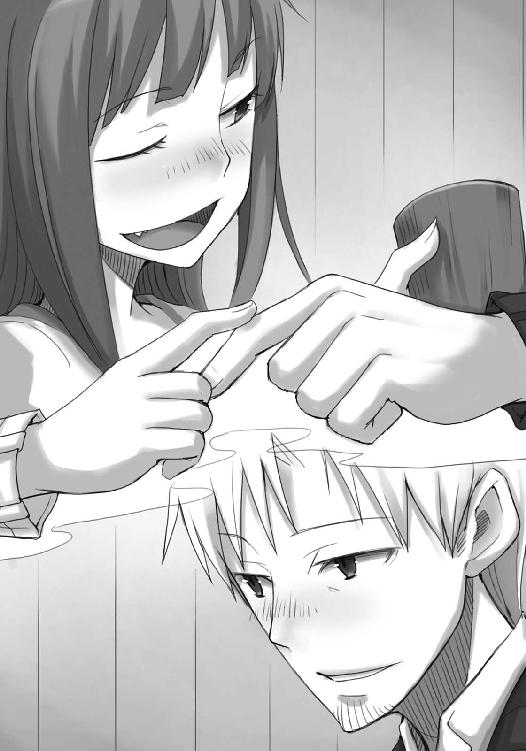
ホロは体を起こし、軽く伸びをして耳をひくひくさせる。
親しくなりすぎてはいけない、というのは互いに暗黙のうちに了解している重要事項。
しかし、そんなことを意識している時点で事態は逆に進んでいるし、ロレンスはその重要事項を蹴り飛ばしたことすらある。
ホロだって、長い長い永遠にすら近いかもしれない旅路の中で、行く手を阻むその大岩を蹴り飛ばそうとしたことは一度や二度ではなかったに違いない。
それでも、だからといって現実が変わるわけではない。
ホロがコルのことを、自分が賢狼でいるための重石だ、と言ったのは大袈裟な表現ではないはずだ。
コルを使ってロレンスをからかおうとするのも、それ自体が楽しいのはもちろんのこと、自衛の意味もあるのだろう。
つい、一線を越えてしまわないように。
わかっているのにどうしようもないことを誤魔化すように。
そんなもどかしさに、せめてもの言い訳として。
「ま、わっちらは欲深き存在じゃ。自分の利益のためにいつも奔走してしまう」
「その点については同意するしかないな。もしも......」
と、ロレンスは皮肉な感じで言ってやった。
「もしも、俺が欲深くなければ、お前にたくさんうまいものを買ってやれるのだが」
ロレンスの冗談に、ホロはくすぐったそうに笑って椅子から立ち上がった。
顔がだいぶ赤いので暑いのかもしれない。
案の定、木窓を少し開けると外の冷気に顔を晒して気持ちよさそうに目を細めている。
「んむ......じゃが、ぬしの利益はわっちの興を得ることではないのかや？」
目を閉じて、喉をくすぐられる猫のように冷たい風に頰を撫でさせているホロは、少しだけ片目を開けてこちらを見る。
自分の立ち居振る舞い全てを水鏡に映して把握しているような、芝居がかった仕草だった。
「お前が食べ物で釣られる卑しい奴なら、そうなるかもしれないな」
切り返しに、ホロは目を閉じてしまった。
つい数瞬前までとまったく同じ姿勢なのに、今度はそれがすねているように見えるからすごい。
ただ、その数瞬後のホロの様子は、まったく傲慢な貴族のようだった。
「なら、ぬしは他にどんな方法を？」
取引の関係にある小さな村から頼まれて、農作業の合間に作った樽を大きなぶどう園を所有する修道院に売り込みに行った時のことを思い出す。
つんとすました鼻持ちならない相手から、あれこれ注文をつけられてはそれに応え、それでもなんとか必死に売り込もうとするこちらを見下すような態度さえ取る。
あの時の修道士は、自分が高貴な修道院の修道士であることを鼻にかけ、自分のほうがより神に近い高貴な人間であるということを心の底から信じていたので、見下すような態度になったのだろう。
では、目の前にいる神と呼ばれる存在でありながら、神と呼ばれるのを嫌がり、敬われることすら忌避した賢狼がそんな態度を取るのはなぜだろうか。
修道士は売り込む側が損をしようがなんだろうが、自分たちの利益を優先させようとしてそうしていた。
だとすれば、前提が逆なのだから結果は逆になる。
こう言って欲しいのだ。
「食べ物で駄目なら、言葉か、あるいは態度か」
「その二つのうち、どちらもぬしの場合信用できぬが？」
牙を見せて意地悪く笑うその笑顔も、見慣れると普段の笑顔より愛嬌があるように見えてくる。言葉と態度が信用ならないと言われたら、残る選択肢は一つ、行動しかない。
そして、それが真実であることを示すためにロレンスは椅子から立ち上がらなければならない。
あるいは、ホロから逃げずに座り続けているほうだろうか。
どちらにせよ、それはそれで大変魅力的だ。
しかし、魅力的だとわかっていてなお、ロレンスはぶどう酒を一口飲んでこう答えた。
「なに、騙されたと思ってその二つを信じてみればいい。意外に本物かもしれない」
「......」
さすがローム川流域の狼と呼ばれるエーブの言葉は、素晴らしい効き目だった。
ホロは横目でこちらを睨み、尻尾をばたばたさせて悔しがっている。
これにはさすがのホロも切り返せないはず。
珍しく舌戦で優位に立てたことは、服の仕立て職人の小僧を翻弄した時よりもよほど気分がいい。
敗北は逞しい鷲をみすぼらしい鶏に変え、勝利は臆病な鼠を勇猛な狼に変える。
しかし、生まれつきの狼はどこまでも狡猾だった。
「わっちの言いたいことはそんなことではありんせん」
寂しそうな顔で、怒ったように言うのだ。
舌戦が、論理と場の雰囲気を用いた理性の戦いなら、ホロの武器はまったくの反則技だ。
つい今しがたまでやっていたことが商談に類するものであるならば、ホロが繰り出したものはそれを飛び越える力を持つ。
まともな取引を飛び越えるものはなんだったか？
ホロが、なかなか動かないロレンスを見て、木窓を少し大きめに開いた。
ロレンスはその窓の前で厄介な台詞を言ってしまっている。
逃げる準備をしておかないと。
ホロの視線が窓の外に、その耳がロレンスに向けられる。
やれやれ、という言葉すらない。
ホロに勝とうなどと、思うほうが無謀なのだ。
「たまには敗者に優しくしたらどうなんだ」
椅子から立ち上がり、歩み寄る。
そして、ホロの側に立ってそう言ってから、窓枠に腰掛けた。
ホロは声なく笑い、膝の上にちょこんと乗った。
「勝者が敗者に声などかけられぬ」
「そう言いながら尻に敷いてれば、怖いものはなにもないな」
ホロが体を預けてくるので、ひくひく動く耳が頰の辺りをくすぐってこそばゆい。
まったく、言い訳だらけの賢狼様だった。
「じゃが、まあ、これでぬしのことを多少は信用できるかもしれぬ」
「そうか？ 殊勝な顔をして、平身低頭して、だが心の内では舌を出しているのが商人というものだ」
我ながら白々しい言葉だが、ホロはそうでなくとも容赦ない。
「確かに、獣も人も、音を上げる時は舌を出すものじゃからな」
「ぐ......」
悔しくて、だが返す言葉もなくため息をついてぐったりと窓枠にもたれかかった。
ホロはくつくつと笑いながら、ゆっくりと言葉を紡ぐ。
「ま、ぬしもわっちも、音を上げた時に一人でないことだけは確かじゃ」
今日一日を振り返ると、実に重みのある言葉だ。
ロレンスは、ホロを少し抱き寄せて、答えた。
「肝に銘じておく」
「ん」
尻尾が軽く振られ、ホロは小さくうなずいた。
静かな時間、というにはホロに酔いつぶされたコルのうめき声がやや大きい。
ただ、ホロが自分は賢狼なのである、ということを思い出すのと、ロレンスが視野狭窄に陥るのを防ぐのにはとてもよく役立っていた。
それがいいのか悪いのかはわからない。
少なくとも、微妙な釣り合いを保つ重石になっていることだけは確かだった。
ホロも同じことを思っていたのか、目を閉じたままうっすらと笑みを浮かべている。
両腕を回して、その小さな体を抱きしめようとした。
その瞬間。
「むう」
急に顔を上げて、不機嫌そうにうめくのだ。
「ど......どうした？」
慌てて平静を装おうとしたが、若干どもってしまい冷や汗が出た。
ただ、それを見逃すホロではなく、呆れるように笑って尻尾をふさふさ揺らしていた。
それから、ゆっくりと体を起こして耳を右に左にと忙しなく動かす。
表情が曇った理由は、すぐにわかった。
「やれやれじゃ。予感、というものも案外馬鹿にできぬ」
「なに？」
その言葉が指し示すことがすぐにわからないロレンスではない。
ホロが木窓の外に視線を向けるのと、ロレンスが同じ方向を見るのは同時だった。
「ほれ、なんと言ったか、あの貧相な店の主」
「レイノルズか」
千鳥足の連中がちらほらと歩く中、外套をすっぽり被ったやや太めの男が通りを急いでこちらに向かってきていた。
見れば確かに辺りを窺いながら、道の端を不自然に歩いてくる。
「ぬしの決意が真実かどうか、確かめるよい機会じゃ」
この宿にレイノルズがやってくる、という事態に首を捻ることもなく、ロレンスはホロが立ち上がる前にその耳の側で返事をした。
「きちんと寝たふりをしておけよ」
ホロは、むずがる子供のようにしながら、心底楽しそうに意地悪な顔をしてこう答えた。
「舌を出しながらかや？」
一つの言葉に複数の意味を持たせるのはホロの得意技。
ロレンスは迂闊に返事をすれば泥沼だと判断して、仕返しにその尻尾を強めに撫でて、追い払ってやったのだった。
秘密は共有する者が少なければ少ないほどいいとはいっても、夜の密会に主人自らが乗り込んでくるのはまた話が別だ。
キーマンとエーブが、揃って人をやってロレンスに連絡をつけてきたのとは対照的だった。
「夜分に悪いね」
寒い中でも、重い腹を運んできたせいで息を切らして額には汗が浮いている。
もっとも、幾分かは緊張しているという面があるのかもしれない。
声を潜めているのは、ホロとコルが揃ってベッドの上で丸まっているから、というわけでもなさそうだ。
「外で？」
ロレンスが訊ねると、レイノルズは一瞬後ろを振り返って、すぐに前に向きなおり首を横に振った。内緒話は外でするほうが危険、という認識なのがいかにも町商人らしい。
誰一人いないことが一目でわかる草原や街道を行く行商人にとっては、その向こうに誰がいるのかわからない壁の中で内緒話をするほうがよほど怖い。
「お酒は？」
ひとまず椅子を勧めてロレンスが訊ねると、レイノルズは一度首を横に振ってから、「少しもらえるかな」と言いなおした。
「ロレンスさんが酔っ払っていないところを見ると、私がここに来たのは無駄足ではなかった......と思いたいのだが」
急の来客に丁重なもてなしができるほど、旅人の泊まる部屋は豪勢ではない。
コルが使ったままにしていたジョッキにぶどう酒を注いで差し出すや、レイノルズは差し迫った顔に卑屈な笑みを浮かべながらそう言った。
「イッカクの......話ですね？」
わざわざこんな時間に来たのであるから、ロレンスがその話を知っているとあたりをつけていたはずだ。
ロレンスは、エーブから親書を貰って狼の骨の話についての手がかりを持つレイノルズの商会に行った。ケルーベの町でエーブから親書を貰えるような立場の人間が、町で起こった騒ぎに気がついていないわけがない、ということだろう。
同時に、自分たちがなぜこの宿に泊まっていると知っているのか、と問うこともおそらくはあまり意味がない。川を隔てた向こうにいるキーマンにすらばれているのだ。
町商人にとって、自分の住む町は糸を張り巡らせた蜘蛛の巣に近いはずだ。
そんなことを考えながらロレンスも椅子に座り、レイノルズはうなずく。
しかし、レイノルズはあくまでも下手だった。
「なにが起こっているのかまったくわからないんだ。ロレンスさんならなにか知っているのではないか、と思ってね」
日の光の下で見るのと、夜の蠟燭の灯りに照らして見るのとでは、同じ人物とはとても思えないのが女である、などというもっともらしい話を酔った商人から聞いたことがあるが、それは商人にもいえるだろう。
いかにも困り果てた小さな店の主といった風情だが、いくらなんでも困り果てた挙句に単なる旅の行商人であるロレンスの泊まる宿に、しかもこんな夜遅くに人目をしのんでやってくるというわけがない。
レイノルズの言葉には、省略された単語がたくさんあるはずだ。
「残念ながら、私も詳しい話は......」
「リドンの宿屋に行っただろう？」
単刀直入なのは、時間が惜しいからか。
あるいは、これがレイノルズの商談の進め方なのか。
ロレンスはゆっくりと視線を外す。
それから、さらにゆっくりとレイノルズに視線を戻した。
「リドンの宿屋？」
人をたばかることにかけては超一流のホロと過ごしてきたお陰かもしれない。
レイノルズの表情が強張ったのは、ロレンスの面の皮の予想外の厚さに驚いたからだろう。
「隠し事はお互いのためにならない。ロレンスさんがあの場所に行ったことはわかっているんだ」
ジョッキから手を離し、両掌をこちらに見せる。その仕草は、腹を割って話そうという類のものだろうが、商人同士にとってはなんの意味もなさない。
ロレンスは考える。
リドンの宿屋に呼ばれて行った、というのがばれているのはほぼ確実視していいが、どんな場合であってもエーブとのやり取りは隠すのが得策だ。
「......例えば、私がそこに呼ばれて世間話をしていた、と言っても、レイノルズさんは信じてくれないでしょう？」
軽くため息をつきながら、諦めるようにロレンスは言った。
その言葉は、人の噓を見抜くホロであっても噓か真実か見抜けないに違いない。
世の中には、真であり、かつ偽である不思議な言葉遣いがいくらでもあるものだ。
ロレンスは、言葉を続けた。
「エーブさんから、町に起こっていることを聞きましたよ。もちろん、私はこう言いました。町にそんな騒ぎが起こっている時に、よくも勘違いされかねない場所に、勘違いされかねない呼び方をしてくれましたね、と」
ベッドの上でもそりと衣擦れの音がしたかと思うと、ホロが寝返りを打ったらしい。
おそらくは、笑いを堪えかねていたのだろうが。
ロレンスは言葉を続けた。
「エーブさんは町の中で特殊な立場でしょうから、落ち着いた表情の下では色々と思惑が渦巻いているようでした。ただ、そのあたりのことは私には話してくれませんでしたよ」
「本当に？」
間髪入れず、ぎょろりと目を剝いてレイノルズは言った。
卑屈な笑みを浮かべて、下手に出ているよりよほど生き生きとしている表情だ。
「本当に」
多少白々しいほうがかえって説得力が増すというもの。
しばらくレイノルズはこちらを睨みつけるように見つめていたが、やがて脱力して、大きなため息をついた。
「......失礼した」
「いいえ。それほど慌てられているということは、なにか直接利害関係に？」
攻守の入れ替わりがそもそもの罠、ということはままあるもの。
肩の力が抜けたようなレイノルズでも、油断はできなかった。
「逆だよ。まったく蚊帳の外だからこそ、慌ててるんだ」
ため息をつき、重そうに椅子の上で身じろぎした。
地主たち権力者に利益を吸い上げられているせいで、閑散とした店構えのジーン商会のことを思い出す。
商売とは、うまくいっているところにはさらにうまい話がやってくるが、うまくいかない時はその逆だ。
それに、日頃の付き合いというものは、いざ危機が起きてみれば一変するのが世の習い。
命に関わる困難が珍しくない行商の旅では、そんなことがままあった。
しかも、景気の悪い町の北側で利益の大きい商売を営んでいる時点で反感を買うだろうに、レイノルズには人心を買うための資金すらない。
いざ事が起こった時に、孤立するのは必然といえた。
「それに、耳にしているんだろう？ うちは町のお偉いさん方と大変に懇意だ」
その言葉が権威を笠に着るものであれば、まだましだったかもしれない。
ただ、レイノルズのその発言はとても重要だ。
レイノルズは、ロレンスがこの町の事情についてエーブから色々と耳にしていると判断している。
その上でイッカクの話をしにわざわざこんな夜遅くに人目をしのんでやってきたのだとしたら、レイノルズの頭の中身をもう少しだけ想像することができる。
すなわち、エーブがイッカクを巡る騒ぎの中で重要な位置にいるか、少なくとも情報が集まる位置にいる、と思っているということだ。
それは、エーブが昼間ロレンスを呼びつけて一方的に語った、世迷言に近い諸々のことに真実の色を添えることになる。
「銅の輸出入を営んでいらっしゃるようなので、その点については」
「ふっ」
ロレンスの遠まわしな言い方に、レイノルズは思わず笑ってしまったようで、鼻を搔いた。
視線が遠いのは、なにか企んでいるのか、はたまた自分の状況に呆れているのか。
ロレンスはかける言葉もなく軽くぶどう酒をなめていたのだが、やがてレイノルズは顔を上げてこう続けた。
「お前さん方が聞きに来た神の骨同様、この話で逆転できると思ったんだがな」
言って、つるりと自分の顔を撫でた。
商人が浮かべる人のよさそうな笑顔ほど当てにならないものはないが、レイノルズの浮かべたそれは見ていて胸の奥がちりちりとするものだった。
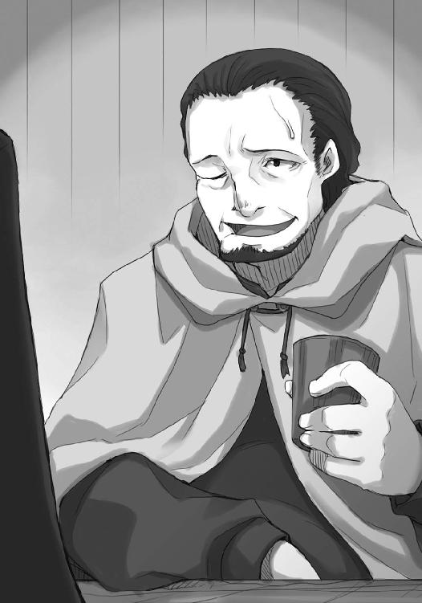
ジーン商会が苦しい立場にあるのは変わりなく、また、どうにかして北の頚木から抜けたがっているのも間違いないのだから。
「ローム川の狼とつながりを持てたら、と一縷の望みを持ってやってきたんだがね。いやあ、はは。まったく、お騒がせした」
億劫そうに笑い、頰をたるませながらレイノルズは言った。
ロレンスはかける言葉がなく、ただただ愛想笑いをするだけだ。
それからしばし沈黙が降りて、それが破られたのはホロの小さな寝言によってだった。
「ああ......そういえば時間が時間だったか。申し訳ない」
レイノルズは謝り、立ち上がる。
こんな時間にロレンスたちの泊まる宿にやってきたのも、万策尽きてついに残った最後の選択肢だったから、と考えられなくもない。
人目をしのんでやってきたのは、誰かに密会を見られては困るというよりも、単に町の人間にではなく町の外の人間に頼らざるを得ない状況を人に見られるのが嫌だったのかもしれない。
そう考えれば、レイノルズのたるんだ頰が途端に哀れみを誘う。
「いいえ、お力になれずすみません」
「こちらこそ、ロレンスさんらの話には大した返事もできずに悪かったね」
互いに相手を気遣うような笑みを浮かべ、テーブルを挟んで言葉を交わし合う。
そして、そんな隙間に落ち込んだ沈黙に、揃って苦笑いをして、握手を交わした。
「今度あの狼に会うようだったら、レイノルズが恨み言を言っていたと伝えて欲しい」
「ええ......いえ、わかりました」
笑い、それを打ち消して、ロレンスは答えた。
「じゃあ、本当に遅い時間に悪かったね」
部屋の戸口まで送ると、レイノルズはもう一度そう言って、来た時とは対照的に重い足取りで歩き出した。
「おやすみなさい」
暗い廊下で外套を羽織ったレイノルズにロレンスが言うと、「ああ、おやすみ」と返ってきた。
レイノルズはそのまま階段を下りて、闇の中に消えていった。
町の中で店を持ち、一見すれば一生安泰ともいえる銅の取引を一手に任されていながらも、その背中には負け犬の風情が漂い、あまりにも寂しかった。
部屋の中に戻り、小さくため息をついて椅子に座る。
肘をつき、軽く酒を飲みながらレイノルズとのやり取りを反芻すると、自分が巻き込まれかけている事件の重大さを改めてひしひしと感じてしまう。
なぜならば、商人としてそれ相応の力を持っていそうなレイノルズが、あれほど必死になってイッカクの話を追いかけにきたのだから。
いや、こう言うべきか。
これほど必死になって追いかけているのだから。
「さて......そろそろ寝るか」
ロレンスは呟き、蠟燭を消すとベッドのほうに歩いていった。
手前の、ホロとコルが眠るベッドの脇を通り、自分のベッドに手をかける。
身を横たえ、毛布の中に潜り込んで、やれやれとため息を一つ。
まだ目が慣れていないのでぼんやりとしか見えなかったが、隣のベッドではようやくホロが狸寝入りから目を覚ましていた。
「もう行ったようじゃな」
一瞬ホロが闇の中に消えた、と思ったのは暗闇の中で浮かび上がるホロの目が反対方向に向けられたからだろう。
ロレンスは一度目を閉じ、「ご苦労なことだ」と言った。
「それにしても、すぐさまわっちに声をかけるようなことをしなかったのでほっと一安心じゃ」
ベッドに腰掛け、ホロが楽しそうに言う。
予想どおり、レイノルズは階段から忍び足で引き返し、ロレンスがホロたちと本音を口に出さないか扉に耳を押し当てていたのだろう。
「まあ、さすがにな。というか」
ロレンスは笑い、言った。
「俺もよくやったからな」
「んふふ。じゃが、わっちも危うく騙されそうなほど哀愁を漂わせておったな。とても腹に一物含んでおるようには見えんかった」
「冷たい物と熱い物を同時に財布の中に入れられるのが商人だ。背中に滲んでいたものが噓とは思わないが、それでもなおへこたれないんだろうさ」
「商人とはしぶとい生き物じゃな」
「まったくだ」
ロレンスは笑って答えて、「しかし」と続けた。
「レイノルズの目的はなんだと思う？」
敢えてホロにそう聞いたのは、自分の答えがすでに出ているから。
ホロも即答する。
「あの狐と連絡を取りたい。それに尽きるじゃろ」
「やはりそうか......」
「なにを考えておる？」
ベッドに手をつき、身を乗り出してきたホロは意地悪げに笑っている。
そう聞きながらも、すでに答えはわかっている顔だ。
「なに。ずいぶん面白そうな話だと思ってな」
ホロが耳をひくひくさせながらなお意地悪げに笑っているのは、半分の噓ともう半分の真実を聞き分けられたからだろう。
商人は熱い物と冷たい物を一緒の財布に入れられる。
やれやれとばかりに、頭の後ろで両手を組んだ。
これなら、心の内に恐れを抱いていても、怖いもの見たさで事件に顔を突っ込んでいく、という体裁を取れる。
いくらホロには本心が筒抜けであったとしても、一応自分も男なのだから多少は見栄を張っておきたい、と思うことそれ自体がすでにホロには楽しくて仕方がないのかもしれない。
ホロは隣のベッドに腰掛けて、にこにこと満面の笑み。
ここでホロの相手をすれば、賢狼様はさぞ喜ぶに違いない。
しかし、それはあくまでロレンスが怖いもの見たさの体を装えている間だけだ。
ホロがじゃれて少しでも爪が引っかかれば、あからさまに糊塗した上辺の体裁など簡単に剝げ落ちてしまう。その時の惨めさは、想像に余りある。
それに、なによりそんなことになれば、この危うい釣り合いの上の楽しい雰囲気を壊してしまう。
「俺はもう寝るぞ」
だから、ロレンスはそう言ってホロに背を向けて横になった。
つまらなそうな雰囲気ならば、ロレンスにも背中でわかる。
ただ、ホロは一度だけ尻尾を大きく揺らしてから、小さく「おやすみ」と言った。
もそもそと毛布に入る音が妙に大きく響く。
ホロはおもちゃを壊すようなことはしない。
だとしたら、ロレンスがすることは決まっている。
ホロの興を得るのが好きなのだから、せいぜい頑丈なおもちゃになるほかなかった。
翌朝。
ホロではないが、なんとなく予感があったといえばあった。
それは、川を下ってくる時に用意した食べ物の残りを始末する、という言い訳を得たホロが、一際大きくチーズを切り分けてライ麦パンと一緒に頰張っていた時だった。
コルすらが苦笑いしてしまうくらい嬉しそうにパンを頰張るホロが、突然笑みを消して真顔になったのだ。
ロレンスはてっきり舌でも嚙んだのかと思ったが、幸いなことにそれを口から出す前に原因がわかった。
出立する旅人の相手や、朝食を取る旅人相手に忙しいはずの宿の主人が、部屋を訪れてきた。
ただ、それだけならばホロが外套をすっぽり被るだけで事はすむ。
ロレンスがホロから目配せを受けたのは、コルが開けた扉の向こう側に、宿の主人と、もう一人の姿があったからだった。
「おはようございます、ロレンスさん」
よく通る張りのある声は、常に自信に満ちたその雰囲気にぴったりなもの。
貴族のように糊の利いた服をパリッと着た、ルド・キーマン、その人だった。
「......おはようございます」
ロレンスがそう挨拶を返す頃には、宿の主人がキーマンから銀貨を受け取ってそそくさと退散していた。
この忙しい時間に引っ張り出されてさぞ迷惑だったろうに、キーマンはどこ吹く風だ。
その振る舞いは、ロレンスにわざわざ見せつけているようにも、自然体にも見える。
「朝食の最中でしたか。これは失礼」
ただ、その言葉に「行商人風情が貴族の真似をして朝食を？」と言いたげな雰囲気を感じてしまったのは、きっと被害妄想だろう。
朝食を食べる習慣のない町の人間たちからすれば、起き抜けになにかを食べるというのはそもそも違和感のあることと聞く。
「いいえ、なんなら早くすませますが......ご用件は？」
キーマンがあんな手紙を寄越してわざわざ部屋にやってくる、となれば用件など限られている。
ロレンスが逃げ出さなかった時点で協力するものと見なされてよいし、ここはキーマンからすれば裏切りの誘惑に満ちた敵地に他ならない。十中八九、ロレンスたちを南に連れ出しに来たのだろう。
じろりと遠慮なく部屋を見回していたキーマンは、子供が賢い返答をした時のように嬉しそうに笑い、「外でお願いできますでしょうか」と答えた。
「ここは今にも鼠が出そうですから」
苦笑いで言ったのはどういう意味なのか、とは思わない。
旅の暮らしであれば寂しい食事の相手になる鼠でも、港町で荷を保管する義務を負う者たちにとっては悪魔のような存在だ。
キーマンは、聞き耳を立てている連中がいるかもしれない、という意味で使ったのだろうが、もう半分は本当に鼠が嫌いなのだろう。
「できれば宿を引き払っていただきたいのですが、お荷物は......と、大丈夫のようですね」
できれば、と言いつつその言葉がまったく当てにならないことはわかる。
それは予想ずみだったので構わないのだが、部屋の隅にまとめてある荷物が綺麗にまとまりすぎていないだろうかと若干気になった。
見る者が見れば、夜逃げ未遂の匂いを嗅げるかもしれない。
「では、下でお待ちしております」
キーマンはそれに気がついているのかいないのか、さっさと踵を返して歩き出した。
貴族の登場は仰々しく、退出はあっさりと。
まったくその見本のような演出だった。
「ふん。ぬしが嫌いそうな感じじゃな」
「だろう？」
ホロもなにか癇に障ったのか、最後にパンを口に押し込んでからこっそりと耳打ちしてくる。
ただ、それを聞いてコルだけがちょっと驚いていた。
「えっ......ちょっと、格好いいなと思ってしまったんですけど......」
ロレンスとホロは顔を見合わせて、二人一緒に詰め寄るとこう言った。
「あんなふうになっては駄目だ」
コルは目をぱちくりとさせ、曖昧にうなずいたのだった。
一階に下りると、店主と何事かを話していたキーマンが嫌味ったらしく言ってくる。
「さて、我々は気兼ねなく表口から馬車に乗りましょう」
ロレンスがエーブから手紙を貰い、裏口から入ったことをきっと知っているのだろう。
しかし、エーブと知己であると告げた時点でエーブの密偵かもしれない、という可能性は織り込みずみのはず。
それでもなお、利用価値があると踏んでいるのだ。
「残念ながら幌ありのものは用意できませんでした。あ、お手をどうぞ」
宿の前に用意されていたのは、それでも立派な六人乗りの馬車だ。
御者は片目のつぶれた髭をたっぷり蓄えた老人で、ロレンスらを軽く一瞥しただけで黙って前を向いた。
海賊まがいの商売をしていた船乗りが、怪我や年で引退してからもなお海を忘れられずに港町で働く、というのはよくある話。
手綱を握るその左手は小指と薬指がなく、手の甲は傷だらけ。
口の堅さは、相当なものだろう。
前後に向かって椅子の備え付けられた馬車で、ロレンスたちが進行方向を向いて、キーマンがその反対側の席に座った。
「では、港まで」
キーマンが言うと、御者は静かにうなずいて馬車を進めた。
「さて、それで、私がこんな朝からここにいる理由ですが」
「有利な交渉は敵地で、ということでしょう？」
ロレンスが切り返すと、キーマンは笑顔のまましばし動きを止めて、それから感心したようにうなずいた。
丸っきり馬鹿にした態度だが、驚いたのは間違いないだろう。
ロレンスの肝はきっちりとつぶしておいたのに、と思っているはずだ。
当然のことながら、ホロがいなければロレンスは萎縮していたに違いない。
「ええ、そのとおりです。町に騒ぎが起こると、我々のような人間は騒ぎの拡大を防ぐためにしばらく渡河が禁止されます。その後のやり取りは矢文で行うのが常なのですが、今回はなにせ互いに急を要するのでね。三角洲の上で揉め事の解決に向けた話し合いをすることになりました。まあ、私ら若者はその露払いですね。今頃は、他の連中が地主側と話し合いの日程と形式を交渉中でしょう」
自己顕示欲と出世欲にまみれたキーマンのような立場の者たちがこぞって北側に来ているのだろう。
そして、それぞれがこの騒ぎで自分の名と所属する組合なり商会なりの名を高めようと画策しているに違いない。
キーマンがその場にいないのは、一人だけ周りを出し抜いてエーブとつながる伝を持っている、という自負があるせいか。
「騒ぎの元になっているのはイッカク、でよろしいですか？」
ロレンスが聞くと、これにはキーマンは驚かなかった。
むしろ、話が早くなるのを喜ぶようにうなずいた。
「ええそうです。イッカクの角は、鳥の心臓の血よりも痛風に効能があるといわれています。それだけでどれだけの貴族が欲しがるか想像できますよね」
「教会の定める七つの罪のうちの一つ、大食の罪に対する罰が、痛風ですから」
言葉の一部分はホロに向けて、という余裕すらある。
キーマンの言葉が油断ならないという意味で怖いのは今も同じだが、不必要な怯えは今はなかった。
「町に常駐する貴族の家の御用商人らは、各自の主人に早馬を走らせていることでしょう。もっとも、我々はどこの誰が欲しがりそうかは全て列挙できています」
「戦う準備は万端、と？」
キーマンは、目を細めてにっこりと笑った。
「ええ」
馬車は細い道を抜け、川沿いの大きな通りに出た。
そう大した時間でなくとも、渡河が禁止されたとなれば困る人は大勢出てくることになる。
渡河の規制が解除されたのか、見晴らしのいい川沿いの道からは、人を満載した渡し船が何艘も川を渡っているのがよく見えた。
「ところで」
と、キーマンが潮の匂いのする風に、柔らかそうな金髪を軽くなびかせながら、聞いてきた。
「エーブさんとは、どこまでお話を？」
ここが、分水嶺だった気がする。
ロレンスはそこで、満面の笑みでとぼけることができた。
「えっと、エーブさん？」
その瞬間、キーマンのこめかみが小さくひくついたのを見逃すロレンスではない。
「いえ、失礼しました」
キーマンは言って、黙るとすまし顔のまま川のほうを向いた。
ロレンスの連れていかれた地区の様子から、誰と出会っていたのかは丸わかりだろう。
キーマンはここでロレンスから真相を引き出し、きっちりと型に嵌めてその首に縄をかける手はずだったはず。
急に黙ったのは、その当てが外れたから。
あるいは、ロレンスがでくの坊でないのならば、それなりの扱いに変えるべきかと考えているからか。
ただ、ロレンスがその直後に自分から口を開いたのは、ここでキーマンを圧倒しよう、という考えからではない。
「エーブさんといえば、金の泉で少しお話ししましたね」
「......どのような？」
キーマンはこちらに軽く視線を向けてくる。
自らの利益のために商人たちを束ねる人間ならではの、人を人と見ない冷たい目だった。
「金で買えないものを押し売りされるほど困ることはない、と」
その時に初めて、キーマンは驚きの表情をあらわにした。
そして、「でしょうね」と笑顔で言った。
ロレンスはキーマンと敵対するつもりは毛頭ない。
エーブから地主の息子に求愛されている話を聞いた、ということを匂わせたのは、エーブとの話の核心は隠すが、会った事実そのものは隠さないという意思表示。
つまりは、キーマンの出方次第だ、というのが通じたに違いない。
キーマンはそれ以降も黙っていたが、それで十分だと思った。
ロレンスという駒の大きさを見誤っていたのなら、配置図を変える必要があるからだ。
それからロレンスたちは渡し船に乗り込み、南側に渡った。
キーマンがまとめて料金を払うのを待っている間、ホロが楽しそうに「調子に乗るでない」と足を踏んできた。
やればできるじゃないかということだろうが、もちろん、乗りはしない。
考えられる限り最高の振る舞いができたと思ってはいたが、その掌には汗をかいているのだから。
北側とはまるで違う、整然と建物が並び、道は綺麗な石畳が整備された見なれた町の光景で初めて、敵地に来た、と思った。
「では、行きましょう」
キーマンの案内で、ロレンスたちは敵地の奥深くに入っていったのだった。
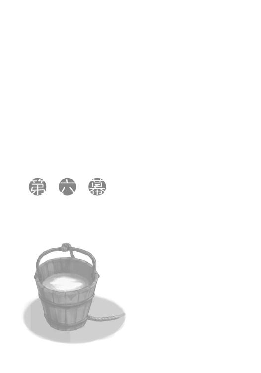
「ご不便はおかけしない、とお約束いたします」
案内されたのは、ロレンスが所属するローエン商業組合の本館から少し離れた場所にある、五階建ての宿だった。
入り口は見なれた様式の造りで、内部もそうだったので組合に所属する旅人がよく利用する宿なのかもしれない。ロレンスたちは、そのうちの一室、中庭に面した三階の部屋に通された。
部屋に文句はないし、どちらかというとエーブに紹介された北側の宿よりも、無料で泊まらせてもらえるらしいこちらのほうが環境としては抜群に良かった。
しかし、キーマンが口にしたその言葉は、いくらなんでも額面どおりに解釈できはしない。
おそらく、そちらが不便を感じるような監視の仕方はしない、という意味なのだろう。
「なにかありましたら、宿の主人にお申しつけください。それと、できれば外出の際には行き先を告げておいてくださると、不幸なすれ違いが起きずにすみます」
外出は制限されるかと思っていたので、その言葉は少し意外だった。
もっとも、その寛容さを裏返せば、外出して外で秘密裏に誰かに会おうとしても対策は完璧だ、という自信の表れになる。
そして、実際にそうなのだろう。
ロレンスはそんな考えを商人の仮面の裏に隠して、「わかりました」と答えておいた。
「それでは、しばらくごゆるりとおすごしください」
キーマンは笑顔で言って、こちらが返事をするよりも早くに身を引いて、部屋の扉を閉じてしまった。
ロレンスは呆気に取られ、閉じられた扉をしばし見つめていた。
てっきりこれから、エーブとキーマンの思惑の中で、キーマンがロレンスに期待する役回りのことを説明される、と思ったのに肩透かしを食らった感じだった。
「......なんだそれは」
ロレンスは頭を搔いてため息をついていたのだが、気がつけばホロはベッドに寝転がって楽しげにしており、コルはそのベッドに手をかけて驚いていた。
「なにをしてるんだ？」
ロレンスが聞くと、振り返ったコルは目を輝かせてこう言った。
「綿が......綿が詰まってるんです！」
「綿？」
「ぬしも寝転がってみよ。ふわふわで、まるで雲の上におるみたいじゃ」
ベッドに綿となれば、金を払って泊まろうとすれば相当の料金を取られるに違いない。
キーマンの意気込みと、また、対価は労働に支払われるという原則に鑑みれば、こんな部屋に無料で泊めても利益が出るほどの仕事に使われるということを意味することになる。
取引の観念的な大きさに、段々と具体的な色づけがなされてくる。
そう言われれば、部屋の造りそのものもかなり立派なようだ。
木窓に歩み寄れば、しっかりと組まれた木窓からは隙間風も入ってこなさそうだし、なにより窓を開けて外を見れば、そこにはこの季節でもいくつか花が咲いている綺麗な中庭が存分に見下ろせた。
「......」
この分だと、宿で食事をすればかなり上等のものが出てきかねない。
ロレンスも手法として聞いたことがある。
身の程に釣り合った利益を渡したところで、利益に釣り合った働きしかしてくれはしない。
圧倒するような、相手が萎縮するほどの利益を渡して初めて、意のままに相手を操ることができ、能力以上の働きを期待できる。
蓋をして、視界の外に追いやったはずの恐怖心がもそりと頭をもたげてくる。
少なくとも詳しい説明を聞いておくべきではないのか。
ロレンスがそう思い、中庭から視線を部屋の中に戻した直後だった。
「たわけ」
ホロが真後ろに立っていて、驚いたロレンスは危うく窓から庭に落ちそうになった。
「な、なにを──」
「なにをというのはこっちの台詞じゃ。またぬしはなにを深刻そうな顔をしておるんじゃ？ ぬしの財布ではとても賄えぬような部屋に泊まれたというのに、それを素直に喜ばんでなにを喜ぶのかや？」
ホロはやや呆れるように言ってくる。
その後ろのほうではコルがおっかなびっくりといった感じで、綿の詰まったベッドの上に腰を下ろしていた。
「いや......」
と、ロレンスが言葉に詰まると、ホロはロレンスの胸を人差し指で突ついて、こう言った。
「本当にぬしはこの手のことに弱いの。大体、あのいけすかぬ若造がなぜぬしになにも説明せんで部屋をあとにしたと思う？ 今度は昨晩のように扉の外で聞き耳を立てておるといったこともしておらぬ。その点、若造のほうがずいぶんと面白そうじゃ」
ホロは扉のほうを肩越しに振り向きながら、牙を見せて続けた。
「ぬしから聞いた説明が正しければ、ぬしは未だあの若造に疑われておる身じゃ。例の狐とつながりがあるのは事実じゃからな。では、あの若造がぬしを自分の駒にしようと自分の陣地に連れてきた時にすることはなんじゃ？ ぬしの体に紐がついておらぬか確かめることじゃろう？」
至極もっともな意見だが、それとなんの説明もしないことがつながらない。
「信用できていないから、説明しなかったというだけのことなのか？」
ロレンスが聞くと、ホロの顔が笑っていない笑顔になった。
不正解だった。
その報いは、髭を引っ張られたことで受ける羽目になった。
「少なくとも敵か味方か未だ判然とせん場所に連れてこられて、ろくな説明もなしに放っておかれたとしたら普通はどうする？ ぬしだってこれまで町に着いたらまず情報を集めに行っておったじゃろう？」
ホロの講義を後ろのほうでコルも興味深げに聞いている。
わざわざホロがここでこんなことをするのは、コルの前で恥をかくのが嫌ならば、必死に頭を働かせろ、というホロの策に違いない。
言われなくても頭を巡らせる。
だが、そんな発想はロレンスの頭にはない。
口ごもっていると、賢狼は髭から手を離し、腕組みをして言葉を続けた。
「そのへんは人も狼も変わらぬはずじゃ。見知っておる者、あるいは信頼を寄せる者に話を聞きに行く。それは言うなれば、心の内の地図に従って知らぬ土地を歩こうとするということじゃ。人や獣の心は目に見えぬ。じゃが、なにかしら動けば、その動き方からどんな地図を手にしておるかはわかりんす。わっちの耳や尻尾、あるいはぬしの髭のように」
髭は冗談だろうが、思わず自分の髭を撫でてしまう。
「要するにじゃ」
ここまで言われて答えられなかったら、ホロはきっとコルと手に手を取ってヨイツに向かってしまうはずだ。
ロレンスはホロの言葉の隙間に、間一髪で滑べり込んだ。
「俺が不安に駆られてどこに向かうか、それを見ようとしているのか」
「......」
ホロがしばらく沈黙していたのは、あまりの回答の遅さに対する叱責を飲み込んだからだろう。
「まったく......。わざわざこんなしつらえの良い部屋にわっちらを押し込んだのも」
「萎縮させるため」
ホロは肩をすくめ、耳をひくひく動かすと後ろを振り向いた。
熱心な生徒のコルは、大きな目でゆっくりとうなずいた。
「では、わっちらはどうするべきかや？」
コルは突然質問を受けて、一瞬言葉に詰まっている。
ただ、どうにか質問に答えようと必死に頭を巡らせているし、ホロの尻尾は尻尾でロレンスに答えて欲しそうなふりをしている。
それは犬が目の前に骨を出されるのと同じこと。
わかっていても、乗ってしまう。
この場は賢狼様の独壇場。
愚かな雄二匹は、きっちり掌の上で競わされることになっていた。
「ふてぶてしく、いつもどおりにすごす」
そして、ロレンスの言葉が一瞬早かった。
危なかったのは、コルも口を開きかけていたこと。
ホロはしばらくコルのほうを向いていたが、ゆっくりとこちらを振り向いて、まあまあじゃな、という笑みを口の端に浮かべていた。
「もしも俺たちが心の底からキーマンに協力すると決めているのだとすれば、ここは敵地ではなく自分の巣であり家であり、なんら恐れる必要はないからだ」
言葉を続けると、ホロは望みの宝物が手に入ったかのように満足げにうなずいて、耳をひくひくとさせている。
ロレンスがホロ越しにコルに向かって「同じだったか？」と聞くと、同門の少年は笑って、でも少し悔しそうにしながらうなずいたのだった。
「それに、大きな仕事を任せられた者が、今にもその重さにつぶされそうになっておったらどうじゃろう？ 安心して任せられるかや？」
これまで一人で商売し、一人で悩み苦しんできたせいで、あまり気にしてこなかった。
誰かを使うという発想そのものが希薄で、思考はすぐに停止してしまう。
自分の手の届く範囲であれば、ロレンスは自分がそれなりに戦えると思っていた。
しかし、世の中には腕よりも長い槍や、弓で戦う者だってあふれるほどいるのだ。
そして、戦の勝敗を決するのは剣すら手に取らない指揮官の指示だったりする。
ホロは長い年月に渡って、集団の長だった。
その小さくて華奢なはずの体つきが、二倍にも三倍にも見えていた。
「ま、わっちが同じことをやっておった時には、こんなまだるっこしいことはしなかったがの」
にんまりと笑うと、唇の下からは真っ白い牙が覗いていた。
「わっちゃあホロ。ヨイツの賢狼ホロじゃ」
腰に両手を当て、胸を張ってそう言った。
久々に聞いた気がするが、やはり自慢してしまうところがホロらしいといえばらしい。
もっとも、コルは羨望のまなざしでそんなホロを見つめているので、ちょうどいいのかもしれない。
あまりにも賢狼すぎては、おちおち子供のように無邪気に自慢すらできないのだから。
「ではぬしよ、わっちらが行動に移すべきはなんじゃろうな？」
ホロの真の目的はここにある。
ロレンスは、お望みの言葉を引きずり出されていた。
「外に出て、のんびりする」
「ふむ。できることならふてぶてしくの」
ホロがちろりと横目でこちらを見つめてくる。
言葉の裏を探ってくれるかと気にしている仕草だ。
気がつかないふりをしてみたい誘惑に駆られるのは、ちょっとした病気かもしれない。
「なら、そうだな。教会に保管されているイッカクでも見物に行くか」
冗談めかして言ってやったのは、あくまでもそれがロレンスの案であるということを示すため。
コルはちょっと驚いて、ホロもわざとらしく驚いた。
まったく、状況をどこまでも自分の思いどおりに使いこなせる天才だった。
「それに、ここに来る途中、人だかりができてただろう？ 多分、言えば見せてもらえるだろうからな」
エーブとつながりがあるかもしれないのに、件のイッカクを見物に行くなど、裏切りの可能性をほのめかすようなもの、とは考えない。
もしもロレンスがキーマンらに対する裏切りを考えているのなら、キーマンらの注目を集めるようなことを敢えてする理由がない。
もちろん、仮定の話であるのだから、その裏の裏の裏、と考えていくことはできるのだが。
「どうする？ 単に食べて飲んでもつまらないだろう？」
ホロは賢狼ホロだと胸を張った。
それは確かに賢狼ホロだと言うに相応しい過程を経たうえでの宣言だったし、その宣言の仕方は子供っぽさを残した無邪気なものだった。
それは相反する二つの事柄を含んでいる。
ホロは賢狼としてイッカクの前に立つ自信がある。だが、子供のようにまだその存在に興味がある。
大方そんなところ。
いや、その喜びようから、大当たりだったはず。
「ま、ぬしにしてはなかなかの案かもしれんな」
極めつけに憎まれ口が出てくれば、満点だったということだ。
コルもベッドから立ち上がり、いそいそと準備を始めていた。
不思議な三人組。
しかし、少なくともこの場所だけは、どこよりも安心していられるようだった。
案の定、宿の主人にイッカクを見たいことを伝えると、教会に行ったらキーマンの名を出せばいいと伝えられた。
キーマンはこのことを予想していたに違いない。
ホロに確かめる気にもならなかったが、宿を出た直後から何人かが尾行しているはずだった。
教会はケルーベの港町の南側の目抜き通りに面している、一番立派な建物だ。
北側とは違い、建物が高さを制限され、装飾も過度になりすぎないように統制されている中で、そこだけは荘厳さと美しさが遺憾なく発揮されていた。
天に向かって聳え立つ塔は他のどの建物よりも高く、その先につるされた鐘は下から見てもわかるほどにぴかぴかに磨き上げられている。通りに面した立派な門は、いかにも開け閉めが難儀そうな重厚な木の扉で、数えきれないほどの鉄の鋲と板で補強されていた。どれほどの悪魔の大群が押し寄せても撥ね返せそうな代物だ。
建物は一つ一つが大きい石で作られており、正面入り口の扉の上には聖典の一節を表した彫刻が施され、慈悲深そうな天使がその門をくぐる者たちに優しげな視線を注いでいた。
見る者を圧倒する、というのはまさにこのことだ。
森や山の奥深くに入れば、時折天を支えるかのごとくに育った巨木を目にすることがある。
大抵はその土地の神や精霊を宿した聖なる樹で、その前に立つと自ずと背筋が伸びてしまう。
ただ、今この目の前にあるのは、自分たちのなにか与り知らぬところで、与り知らぬ力によって大きくなった樹ではなく、自分たちの土地で自分たちの力で築いた教会なのだ。
しかも、そこにいるのは自分たちを襲い、食いちぎる牙と爪を持った神ではなく、自分たちと同じ姿形をした、慈愛に満ちた神である。
滝や泉に祈りを捧げ、ヒキガエルを敬い、獣の遠吠えを精霊のお告げと恐れおののく異教徒たちのそれは、確かにこれに比べたら野蛮であり眉をひそめるような類のものかもしれない。
すぐ側に、ホロという存在がいてすら、そう思うのだ。
不機嫌そうなホロに乱暴に耳を引っ張られでもしなかったら、ずっとこの荘厳さの虜になっていたに違いない。
「ほれ、早く中に入りんす」
教会の前には人だかりができていて、彼らの話に耳を澄ますとイッカクの話が持ち上がっていた。人の口に戸は立てられないということで、どこからか漏れ出ているのだろう。
ただ、彼らが一目イッカクを拝もうとするには、教会の入り口の前に立ちはだかる槍を持った兵士が邪魔だった。
ロレンスとコルはその間をホロに引っ張られながら進んでいき、石段を上って入り口に差しかかったところで、兵士の長い槍で止められた。
「現在教会は聖務中で入れません」
権力とは目に見えぬ不思議な力だ。
「ローエン商業組合の者です。キーマンさんから許可は」
その言葉に兵士二人は互いに視線を交わし合い、下手に追い返すと問題になりそうだぞといったふうに、渋々槍を戻して手で中へ入るようにと促してきた。
「失礼します」
ロレンスは笑顔で言って、未だに不機嫌そうなホロの手を引き、中に入っていく。
コルもコルで緊張しきりのようで、見ればホロのローブの裾を摑んで歩いていた。
「静かだな」
教会といえど、この規模になるとちょっとした城になる。
地方の山の上の城といえば狭くて暗くて豚や山羊が城内を歩き回っているようなところがほとんどだが、こちらは洗練された都市の城だ。
入り口をくぐると極彩色の絵の具で聖典の一節の場面が描かれた丸型の天井と、ここが俗世界とは違う場所だと知らしめるための、見たこともない奇怪な生物たちが刻まれた柱や梁があった。
窓が少ないため蠟燭がちろちろと燃えているが、煤で壁や絵を駄目にしないように、煙の少ない高価な蜜蠟だ。
振り向けば、二人の兵士に阻まれながら、どうにか教会の中を見ようと頑張っている民衆たちの姿が見える。
確かに、普段からこんな特権に与っていれば、教会の高位聖職者や権力者たちの鼻も高くなる理由がわかろうというものだった。
「奥にありそうじゃな」
ホロは鼻をひくつかせながらそう言った。
教会の構造は大きくなっても基本的なところは変わらない。
まっすぐ行けば聖堂になっているはずで、聖遺物など、特別なものはその祭壇の下か裏に安置される。
ホロはロレンスがなにかを言う前に歩き出し、目はまっすぐに教会の奥に向けられている。
なにかに呼ばれるような、引きつけられるような足取りだ。
そして、これもまた荘厳な彫刻が施された扉に手をかけようとした、その瞬間だった。
「何者です！」
甲高い声が響き、さすがのホロもびくりと体をすくませた。
いや、ホロに限って不意をつかれるというのはあり得ない。
それくらい夢中になっていたのだ。
その生肉を食らえば永遠の命を得られるという、大昔に追いかけたことのある伝説の存在を前に。
「何者です！ 警備はなにを！」
乳色のローブを身にまとった瘦せぎすの、背と鼻の高い男だった。
一見して聖職者だとわかる神経質そうな顔立ち、といえば百人が百人とも思い浮かべるようなそれで、声は絞められる直前の鶏のようなものだ。
「これは失礼いたしました。ローエン商業組合のルド・キーマン氏からの紹介なのですが」
ロレンスは自分の名を名乗るよりも先にその名前を出し、早口に言葉を続けた。
「なにか手違いがありましたようで」
教会ほど手続きと規律にうるさいところはない。
ただし、それは紙に書かれたことよりも、人間関係が優先する。
「なに......ローエンの？ ああ、これは失礼」
取り乱したのと同じ早さで落ち着きを取り戻して、廊下の奥から何事かと走ってきた兵士に対応していた。
入り口に立つ兵士二人はそ知らぬ顔。
ままあることなのかもしれない。
「こほん。私はこの教会の助司祭を務めるセイン・ナトレと申します」
「私はローエン商業組合所属のクラフト・ロレンス。こちらは共に旅をしている......」
「ホロという」
「トート・コルです」
ホロは扉の奥に気を取られながら、コルは恭しく名乗った。
商人に修道女風の少女に、ぼろぼろの格好をした少年。
奇妙な取り合わせだが、一日のほとんどを教会の中ですごす人間にとっては、俗世界の全てが奇妙に映るのかもしれない。
大して不思議そうな顔もされなかった。
「左様ですか。こちらに参られたということは、なにかお祈りを？」
白々しいことを聞くことにかけては教会の聖職者の右に出る者はいない。
ロレンスは小さく咳払いして、こう答えた。
「いえ、こちらの教会に運び込まれたというイッカクを見せていただければと」
「ほう......」
と、ナトレと名乗った助司祭はこちらを品定めするような目で見つめてくる。
実際に品定めをしているのは、寄付金をいくらふんだくろうかと計算しているからに違いない。
「その目的をお聞きしても？ というのはですね」
ナトレはロレンスが返事をしようとしたのを遮って、続けた。
「当教会に運び込まれたそれは、聖なるものか邪悪なるものか未だ判別がつかない状況であります。世に神が創造されたもの以外は存在しない、というのは確かなることでありますが、いかんせん、その異形のゆえに現在司祭様が神のお力を借りて安置している状況であります。いかなローエン商業組合様のキーマン卿のご紹介とありましても......」
長ったらしい口上には慣れたものだが、ホロの我慢が限界に近そうだった。
ロレンスは仕方なく、笑顔でナトレに歩み寄り、上着の内側に手を差し込みながらこう言った。
「実は、キーマンさんより聖なる神の僕であられるナトレ様によろしくお伝えくださいと言伝を授かっておりまして」
そして、書状を手渡す仕草のまま、ナトレの手を握った。
「......確かにその言伝、お預かりいたしました」
ナトレは素っ気なく言って、再度咳払いをした。
「では、現在件のものは聖堂で聖別中なのですが、特別にご覧にいれましょう」
「ありがとうございます」
ロレンスが大仰に感謝すると、まんざらでもなさそうにナトレはうなずき、ホロがいる扉の前まで歩いていき、閂を外して扉を開けた。
「私は未だ修行中の身。直接眺めるのは禁止されております」
翻訳すれば、異形のものを怖くて直視できないというところだろうか。
あるいは、賄賂を受け取ったその足で聖堂に入るのはさすがに気が引けるというところだろうか。
なんにせよ、ロレンスはホロに続いて聖堂の中に入ろうとして、少し苦笑いした。
ただし、それはいけすかない聖職者のことに関してではない。
扉が閉じている時は入りたくて仕方がなさそうにしていたホロが、いざ扉が開くと尻込みしていたのだ。
「ほら」
小さく言って、その背中を押した。
大昔にその生肉を追いかけていたということは、ホロはその生肉を誰かに食べさせたかったということだ。
それは何百年といることになったパスロエの村で出会った村人だろうか？ それとも旅の途中で出会った別の誰かだろうか。
結局その肉は見つからず、食べさせたかった誰かは死んでしまったに違いない。
死に目には会えたのだろうか。それともまた、旅の途中に死なれてしまったのだろうか。
どちらかはわからないが、笑顔で別れられたとはとても思えない。
だが、相手のほうは、もしかしたら笑っていたかもしれない。
ホロが、今になってもなお、それを前にしてこんな顔をしているのだから。
「......これが......」
呟いたのはコル。
何百席かわからない、たくさんの木の長椅子の間に続く、まっすぐに伸びた石畳の道。
そこには色あせた絨毯が敷かれ、天の国へと続くかのように神々しい。
その道の先、見上げるばかりに高い壁には色つきの硝子を組み合わせた壮大なる神の絵が描かれており、両脇には神の栄光を讃える天使の絵が描かれている。
そして、その下、神の足元にはその代理人が民衆を導くための祭壇が置かれ、さらにその下には大きな棺が置かれていた。
遠目にすら、その異形の片鱗が垣間見えた。
大きな棺には水が入れられているようで、こちらの気配に気がついた生きた伝説が身じろぎして水がはねた。
同時にする木を打つような音は、まっすぐに伸びた白い角が棺の縁を叩いているのだ。
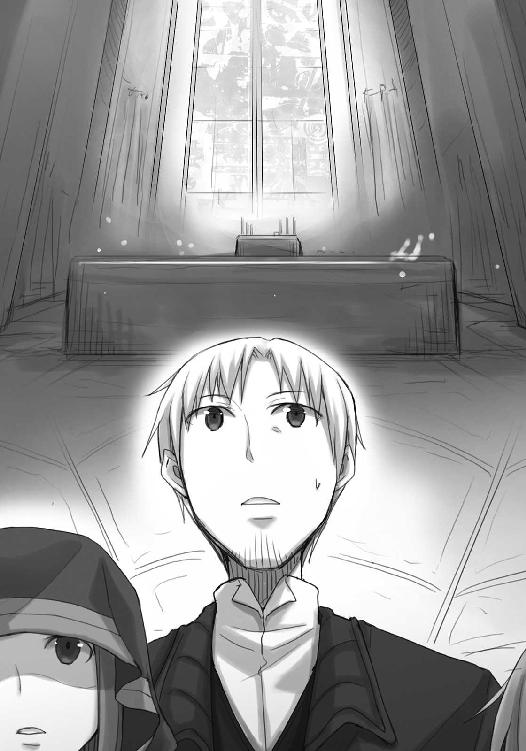
「本当にいるんだな」
三人共に、足を前に出すことができない。
好奇心は猫を殺し、商人はその好奇心で神すらを殺す。
しかし、近寄りがたかった。
生肉を食らえば永遠の命が得られるという、その伝説の生まれた理由がわかったような気がした。
「近寄ってみるか？」
ロレンスがホロの肩に手を載せると、ホロはびっくりしてこちらを振り向いた。
「......」
それから、無言で首を横に振って、また前に向きなおった。
無表情に、じっとイッカクのほうを見つめているその様は、過去の自分に別れを告げているような、そんな雰囲気があった。
「あ、あれも、神様、なんでしょうか」
小さくそう言ったのはコルだ。
ずっとホロの裾を摑んでいると思ったら、いつの間にかロレンスも服を摑まれていた。
「どうだろうな。どうなんだ？」
隣のホロに聞くと、ホロはものすごく嫌そうな顔をした。
そんな話を振るな、ということだろうが、他に答えられる者はいないので仕方がない。
「少なくとも、まともな生命の営みの輪におるじゃろうな。そこから外れた者には独特の匂いがありんす。じゃが、あれにはない」
わざとらしく鼻を鳴らしてロレンスとコルのほうを向き、寂しそうな顔をする。
コルはそれの指し示す意味に気がついて、慌ててなにかを言おうとして口ごもってしまう。
その頭に手を載せて、「たちの悪い冗談だよ」と言ってやりながらホロを見ると、反省の色もなくぷいとそっぽを向いた。
「ま、あの大きさと、この程度の警備ならば......」
と、ホロは辺りを見回しながら殊更小さな声でそう言った。
ロレンスにはっぱをかける時、いざとなればイッカクを奪えばよい、と言ったのはまったくの仮定の話ではないらしい。
「仮定の話じゃなかったのか」
ロレンスが聞くと、ホロは意地悪そうに笑って小首をかしげてきた。
「ぬしの怯えが仮定の話だけで止まるならばわっちゃあ楽なんじゃが」
「......」
確かに、いつでも奪取できるとわかればそれに越したことはない。
「問題はどこから入るか、じゃが」
「入り口を突破、というのは？」
「あの扉がかっちりと閉まっておったら怪しいかもしれぬ」
鉄の板と鋲で補強された表の扉を思い出す。
実際のところ、教会には高価な品が多く、いざ戦乱が起こると真っ先に狙われるのは教会だし、人々が立てこもる最後の砦にするのも教会だ。
正面の入り口は攻城器を想定して作られているはず。
いくらホロでも、厳しいかもしれない。
「あそこからはどうでしょうか？」
と、コルが指差したのは、イッカクの置かれているはるか頭上にある、色つきの硝子の壁。
明かり取りの窓などもあるが、ホロの巨体を考えるとあれくらいしかないかもしれない。
「罰当たりだな」
ロレンスが言うと、ホロは面白そうに喉を鳴らした。
「くっくっ。あれをぶち破ってここに飛び込んだら、ちょっと気持ちよさそうじゃな」
それが冗談に聞こえないので恐ろしい。
ただ、実際問題として、危険がないわけでもない。
「入るとすればあそこしかないんだろうが......あの硝子は、元々壁が崩れないためにああしてるからな。下手に壊すと大変なことになるかもしれない」
「むう？」
いたずらを楽しむ子供のように笑っていた二人が、揃ってこちらを向いた。
「これだけ大きな建物になるとな、全部石で作るわけにはいかなくなる。重量がかさみすぎて建物が自分の重さで倒壊してしまうんだ。それを防ぐために一部を硝子にして軽くしてるんだが、ほら、よく見ると鉄の柱が何本も上の梁を支えているだろう？ 下手にぶち破るとあそこから上が倒壊しかねない」
大聖堂には色つき硝子の絵がつきものだ、というその理由がひどく実用的な点から来ていると知った時にはがっかりした。
神のおわす聖堂であっても世の仕組みからは逃れられないんだなと、少し寂しい気すらした。
「ま、その時はその時じゃ。それに」
ホロは言葉を切って、若干呆れながら言葉を続けた。
「ぬしが頑張ればわっちは危険を冒さずともすむんじゃからな」
そうだった。
ロレンスは苦虫を嚙みつぶしたように目を泳がせる。コルは小さく笑って「ロレンスさんなら大丈夫ですよ」と言ったところをホロに茶化されていた。
「じゃ、そろそろ戻ろう。ナトレ助司祭に怪しまれる」
「んむ」
「はい」
二人はやはり揃って返事をしたが、ロレンスは気になってこう言った。
「本当に近くで見なくていいのか？」
コルは若干恐怖の色をまぜながら、「結構です」と。
ホロは困ったような色をまぜて、「構わぬ」と答えた。
どちらにとっても、色々な意味で「怖い」のかもしれない。
それに、ロレンスですら、あの角の生えた巨体にはなにか得体の知れぬ近寄りがたい雰囲気を感じてしまう。
ナトレが言い訳を講じて聖堂に入らないのもわからないことではなかった。
伝説としてしか聞いたことのなかったイッカク。
その生肉を食らえば永遠の命が得られ、その角を煎じて飲めば万病に効くという。
物は確かに存在した。
そして、その伝説に見合う代物であることだけは確かだった。
こうなったら、いよいよ腹をくくるしかない。
なにせホロが実際にここに侵入できるかの話までしたのだから、今更尻尾を巻くことは本当に許されない。
ナトレに礼を言い、扉を閉めるその背中に、思わずこう言っていた。
「伝説に相応しいたたずまいでした。さぞたくさんの人間を虜にするのでしょうね」
がたん、と閂を嵌めたナトレは、振り向きざまに今にも悲鳴を上げそうな畏れに満ちた顔をして、「恐ろしいことです」と答えた。
教会はきっとイッカクを持ち込まれて困っているに違いない。
教会の人間は神を味方につけているせいでたくさんの人間に恐れられている。
しかし、神をも畏れない人間がこの世には確かに存在するのだから。
生きた伝説を金に変えるというのは、あんなイッカクすらも数多ある貿易の商品と一緒に扱うことなのだ。
その神経の図太さは、もはや別の世界の生き物としか思えない。
再び人通りの多い目抜き通りに出てから、ロレンスはようやく呼吸ができたような気がした。
「だが」
ロレンスは胸を張って隣のホロを見る。
フードの奥から向けられる瞳は、無邪気なきょとんとしたものだった。
「俺はお前を質に入れたくらいだしな」
心の中を本当に読めるわけではないので、ホロには言葉のつながりなどわからないはず。
ただ、賢狼はそれだけでどんな葛藤があったのか瞬時に把握したらしい。
賢狼を質に入れたというその告白にびっくりして目を剝いているコルをよそに、にやりと笑ってこう言った。
「もうなにも怖いものなどないじゃろ？」
人ごみの中、喋りながらちょっとした拍子にホロの体が寄ってきた。
その時にするりとロレンスの手の中に自分の手を忍び込ませるのだから、確かにそれより怖いものなどない。
ロレンスは笑い、コルに向かってため息まじりに言った。
「まったく、賢狼の言うとおりだ」
コルがこくこくとうなずき、ホロとロレンスを見比べ、もう一度うなずいたのが面白かった。
キーマンが部屋の扉を再びノックしたのは、その日の夕暮れ、食事中のことだった。
宿が用意してくれた食事は予想どおり豪勢なもので、ホロは素直に大喜びで、コルなどは時折喉につっかえさせていた。
ただ、夕食時を狙うのは、こちらを単なるでくの坊だと思っていないということの証になるかもしれない。
厄介な相手を少しでも油断させようと思えば、寝起きを攻めるか、あるいは食事時を狙うべきだからだ。
「ご一緒にどうですか？」
ロレンスが落ち着いて手についたパンくずを払いながら聞くと、キーマンは笑顔で両手を肩の高さに上げ、「ご遠慮しておきます」と答えた。
「できれば、ロレンスさんだけこちらに」
それに逆らうつもりも毛頭ない。
ホロとコルには目配せだけをして席を立ち、キーマンと共に廊下に出る。
コルのお陰で食事時にホロを一人にさせなくてすむ、という事実だけでも大きな支えになる。
ホロにそんなことを言ったら、きっと真顔で呆れられるだろうが。
「さて、それで例の話ですが」
と、キーマンは宿の一室に入るなりそう口火を切った。
入った直後は倉庫かとも思ったが、キーマンが一人で思索にふけるような場所なのかもしれない。蠟燭の灯りで照らされる、積み上げられた木箱や丸めて置かれている海図らしきものは、どれもロレンスが見たこともない文字で書かれていた。
「我々はロレンスさんに情報の伝達役をお願いしたい」
一人称が複数形なのは脅しなのか、それとも単なる事実なのか。
ロレンスは行商人であることを忘れないために、立ったまま交渉に臨むことにした。
「その理由をお聞きしてもよろしいですか」
「当然ですね。はっきりと言えば、本当はこの役目はロレンスさんではなかった」
それこそ当然の話だろう。
「当初はジーン商会、ご存じですね？ ジーン商会の主、テッド・レイノルズが我々の意思を伝えてくれる候補に挙がっていました。理由は」
「彼が北からの搾取構造から逃げ出したがっているから」
キーマンはうなずき、続けた。
「彼はこちらと接触を持ちたがり、我々も彼を取り込めば銅の貿易について利益がある。だから筆頭に挙がったのが彼です。しかも、ボラン家とそれほど仲が悪くない。ローム川で輸出入を取り扱っていますからね。大方あの狼と組んだことがあるのでしょう」
ロレンスの頭には真っ先に岩塩のことが思い浮かんだ。
ジーン商会がウィンフィール王国に貨幣を届けるならば、帰り荷で岩塩の像を運んできてもおかしくはない。
そうなると、昨晩、レイノルズが額に汗を浮かべながら部屋にやってきたこともまた別の解釈が可能になる。レイノルズはレイノルズで、自分の最大の利益になるところはどこかと頭を悩ませていたのだろう。
おそらく、念頭にあったのは、南側のキーマンたちから声がかかるはずだというところだろうが、その当てが外れてしまった。そして、それはなぜかと問えば、もっと都合のよさそうな人物がいるとすぐに思い当たったことだろう。レイノルズは北と南の陰謀の結節点に、どうにかして自分の財布の紐をくくりつけようとした。もしかしたら、あの時間、あんなに慌てて無様を晒してまでやってきたのも、全て作戦だったとしてもおかしくはない。
背中に滲んでいた哀れな色は、そんな自分を情けなく思う心の表れだったのかもしれない。
「我々の目的はこうです。イッカクを用いて北側の土地の権利を全て買い取りたい」
「ただし、彼らがその利益を使ってこの町で覇権を握らないように」
キーマンはうなずく。
エーブが語った構造そのままのことを思い描いているのだろう。
しかし、それはエーブがすごいとか、キーマンの発想が貧困だとかいうわけではない。
相手がまったく信用できない状況で、それでもなお各々が同じテーブルについて商談をしようと思ったら、その構図にするのが一番合理的ということなのだ。
だとすれば、それでようやくエーブが自分に声をかけてきた本当の理由がわかった気がする。
この賭け事の中では北と南をつなぐ接点がなにも知らない人間であっては困るのだ。
真ん中にいる人間がどちらを裏切ってもおかしくはないという、どちらにとっても対等な状況であるからこそ、相手も同じ賭場に座る。
あとは、仲介者の気をどちらがより多く惹けるかの勝負。
そういうことなのだ。
「北側の地主一族の男がボラン家の当主にご執心でして。それを使わない手はない。ボラン家の当主さえ我々を裏切らなければ、彼女にとっても、我々にとっても良い結果になるのですが......それはどうなるかわからない」
エーブの複雑な利害関係はロレンスも承知している。
なにがどう作用するのかまったくわからない。
錬金術師の釜のような存在だ。
「情報の伝達役は我々の側の味方にもなれるし、場合によってはあちら側に立つことも可能。そういう人材がよいのです。そうでなければローム川の狼は警戒して寄ってきませんからね。もちろん、本当ならばそれでもなお我々が確実に勝つように事を運ばなければなりませんから、念には念を入れた計画にしたかったのですが......いかんせん今回我々が取り扱う品物は腐りやすい」
生きたイッカクだからこそ、というのがある。
「具体的に、私はなにをすれば？」
キーマンは、一つ咳払い。
目を閉じたのは、計画を反芻しているからか。
「文字どおり、情報の伝達役です。我々は狼を信用せず、狼は我々を信用しない。しかし、我々はロレンスさんを信じ、狼はロレンスさんを信じるはずです。ロレンスさんは我々からの商談をあちら側に伝えるだけです。イッカクの状態。値段。引渡し方法。その日時。あるいは逃亡の手助けの算段などを伝えてもらうでしょうし、その返事をこちらに伝えてもらいます」
「利益は？」
キーマンがにんまりと笑うと、薄い唇の下で犬歯が異様に目立った。
「私は今回のことでローエン商業組合をこの南側の筆頭の組合にしたい。そして、現状の日和見的な対応を取り続けるジーダ館長を廃し、私が館長になる。その際の利益は」
役者のように言葉に間を持たせる。
「ご想像のままに」
自らの足で商品を運び、自らの口で売るのではなく、誰かが運んできた商品を誰かの口で売り捌き、儲けだけを帳簿の上に記していく。
それはまさしく別世界。
商人であって商人ではないなにかに生まれ変わるのだ。
そのおこぼれに与れる時、空から降ってくる利益は途方もない。
「もっとも、これは口約束に過ぎません。だからこそ、あの狼はロレンスさんを取り込む余地が出てくる」
「ですね。それに、向こうは即物的な利益を提供できるでしょう」
全員を欺き見事イッカクを手に入れたならば、元貴族のエーブであればそれを最大限の値段で即座に売却することができるだろう。
下手をすれば、エーブからの報酬で金貨の海を泳ぐことだってできるかもしれない。
「できればあの狼を介したくなどありませんが、そうしないとそもそも交渉が成り立たない。人はそこまで強くありませんから」
キーマンの発言は意味深だ。
エーブに言い寄っている地主の息子が、自分のためだけに、という理由では身内を裏切れない性格であることまで調査ずみなのだ。
しかし、そこにエーブのため、という理由がつけば話は別。
人は言い訳を手に入れた時、とても強い。
それが色恋の話になれば、小人が竜を倒した話は枚挙に暇がない。
「なるほど、わかりました。私はどうにか自分の役目を理解できたようです」
ロレンスが笑うと、キーマンもにっこりと微笑んだ。
秘密裏の取引では笑顔が契約締結の証になる。
秘密と緊張に満ちた伝説の商人の話では、いつだって小声の取引のあとに、髭面の商人同士が蠟燭の灯りの前でほくそ笑むのだから。
「それはよかった。ただ......」
「ただ？」
ロレンスが聞き返すと、キーマンは子供のように無邪気に笑った。
「ただ、私は完全の確信を持ってロレンスさんを取り込めたと思っていたのですが。どうして......ええ、どうして、立ち直れたのですか？」
ロレンスはその言葉に、顔をうつむきがちに笑ってしまった。
確かにそのとおりだ。
洲の上の商館の別館では、ロレンスは完全にキーマンに型に嵌められていた。
銀細工師もびっくりなほど綺麗に型に嵌められていたに違いない。
それがほんのわずかな時間を経ただけで、操り人形に魂が戻ってきたのは驚くに値することかもしれない。
もっとも、キーマンがわからないわけがないと思った。
だからロレンスが笑顔のまま黙っていると、「つまらないことをお聞きしました」と返ってきた。
「商人でも、騎士でも、王でも、誰であっても、一人では大したところまではいけませんからね。それは聖職者であっても同じです」
商人や騎士や王はわかったが、聖職者はわからない。
偉大な商人や騎士や王にはいつも彼らを支える偉大な妻なり恋人なりがいた。
だが、聖職者は？
「彼らには、神がいる」
ロレンスは、笑顔の下で呟かざるを得ない。
ならば、ホロを支えにしている自分はどこまでいけるのだろうか、と。
「まあ、我々は噓で塗り固めた薄氷の上を歩く身分ですが、せいぜい頑張りましょう」
キーマンは座ったまま手を差し出してくる。
ロレンスはそれを取って、白々しいほどに固く握り合った。
「では、私は内職ばかりもしていられませんのでね。なお私と連絡が取りたい時は、宿の主人に言っていただければいい。それと、聞き耳を立てるような野暮なことはいたしませんし、それはそちらにも期待したい」
「ええ。いつだって不幸が起きるのは疑念と勘違いからですから」
キーマンはうなずいて立ち上がる。
今度は執務室の時とは違い、きちんとロレンスと連れ立って部屋を出た。
「遅くとも明後日の夜までには片がつくでしょう」
必死に、というところはいたずらっぽい笑みと共に。
「ならば、緊張して夜眠れなくても最後までもちそうですね」
ロレンスのそんな切り返しにキーマンは笑って、歩き出した。
そのあまりにもあっさりとした歩き方は、今この瞬間に誰かがここを通りがかっても、誰もロレンスとキーマンが知り合いだとは思わないようなものだった。
廊下に一人残されたロレンスは、苦笑いしてこう呟いた。
「失敗した時のことをなにひとつ話さないな」
自分も教会都市リュビンハイゲンで似たようなことをした。
羊飼いの娘に利益ばかりを強調した詐欺同然の取引を持ちかけた時のこと。
しかし、あの時自分は罪悪感に押しつぶされそうだった。
それがどうだ。
キーマンはごく当たり前のこと、といった様子だった。
あんなふうになれるのか、あんなふうにやれるのか、ロレンスには自信がない。
ホロのお陰で、本当に取り返しのつかないことになりかけたら全てをご破算にしてもらえるという最後の拠り所はできた。
だが、それはあくまでも安心するための最後の砦であるし、なによりもロレンスに求められているのはこの話の中からきっちり自分の取り分を手に入れることであり、無難に仕事をこなすことではない。
あんな連中の裏を本当にかけるのか？
かかなければならないし、ここまで来たならかいてみたい。
ロレンスは前髪をくしゃりと摑んで、歩き出した。
暗闇の中で歯を剝いて苦笑する。
英雄譚が、読みたい気分だった。
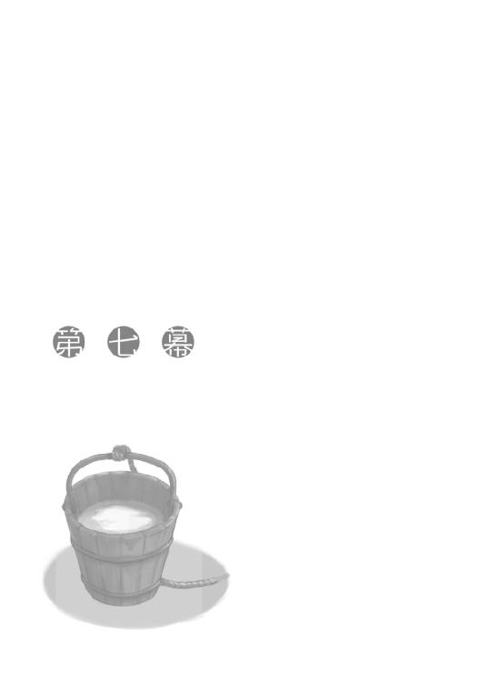
その日の夜は、宣言どおりというわけではないが、眠れなかった。
おそらく計画の中心にいるキーマンも夜通し根回しや計画立案に忙殺されているだろうが、こちらは受け身の辛さというものがある。
ロレンスは自分がそれほど優秀ではないことを知っている。
大半の商人はそうだからこそ、新しい情報をいつも探し求めていて、機先を制しようとしているのだ。
今回は完全に後手に回らざるを得ない。
その中で相手を出し抜くというのは相当な力量がいる。
策を考えられる時間はほんのわずかであり、見えているものもほんのわずかだ。
自分の身を守りきれるかどうかすら怪しい。
ホロがいなければ間違いなく保身に走り、キーマンの言いなりになっていたかもしれない。
そして、いいように使われ、最後は切り捨てられていたかもしれない。
自嘲気味に笑って、寝返りを打つ。
ロレンスのベッドは寒い窓際なので、軽く顔を上げると木窓の隙間から青白い月明かりが目に入った。
エーブには脱帽の念を抱くほど、商人としての力量に差があると思っている。そのエーブに対してキーマンのような人物が全力で挑む。そんな策略の中に、飛び込んでいく。
ロレンスはもう一度寝返りを打って、ため息をつく。
引き返すつもりはなくても、どうしたって緊張する。眠ろうと思えば思うほど、目は冴えていった。
どうやら、こういったことにはそもそも向いていないらしい。
一人で苦笑いをしてから、喉も渇いていたので起き上がり、少し夜風に当たることにした。
銅製の水差しは夜の空気ですっかり冷たくなり、氷のようになっている。そんな水差しをぷらぷらとさせながら、ロレンスは静まり返った宿の中を歩いていった。
宿はぐるりと中庭を囲むように作られていて、そこには庭園と井戸があった。南の地方を旅すれば、どこの町でも建物は同じような造りになっている。もちろん、あれはどこそこの商会、これはどこの地方の商館、と見てすぐわかりはするものの、基本的にはほとんど変わらない。それは別に皆が示し合わせているというわけではなく、建物を建てる大工や石工などの職人の多くが、あっちこっちを遍歴しながら仕事をしているせいでそうなるのだ。
遠方に行商に来る前は、世界中には自分の知っている様式の建物しかないのだと思い込んでいた。
そして、そうではないと気がついた時の衝撃は今でも忘れられはしない。旅は視野を広くするが、それまで慣れ親しんでいた常識の数々がとてもちっぽけなものだということにも気づかされる。そんなことを何年も繰り返していれば、世界がどれほど広く複雑であり、それに対していかに自分が小さいかを知ることになる。上には上が無限にいるし、下には下が無限にいる。
自分にできることは他の誰かが必ずできるし、自分が思いつくことは他の誰かが必ず思いついている。ロレンスは、青白い月明かりの下でぽつんと空に向かって開いている、井戸の中に釣瓶を落とした。
自分の思いどおりになることはごくわずかで、大半のことは周りの流れによって決められる。
狼の骨の話を集めるためにエーブに関わったのが原因で今この状況にあるのも、元はといえばレノスの町でエーブに声をかけられたからで、そのレノスの町に行くことになったのは他ならぬホロが原因だ。
自分は確かに目的地に向かって泳いでいるが、そこは池ではなく大きな流れの川の上だ。
ロレンスは釣瓶を持ち上げて、その中に映った綺麗な月を覗き込む。
こんな、多感だった駆け出しの頃のようなことを久しぶりに思ってしまうのは、きっと目の当たりにしている大きな構造の中で、自分が主役ではないことが気に入らないからなのだろう。
ロレンスが歴史家なら、自分を主役に据えはしない。
やはり、キーマンか、あるいは、エーブか。
そんなことを思って苦笑いをすると、釣瓶の中の水に浮かんだ月も同じように歪んだ。
そんな馬鹿な、と顔を上げれば、そこにはどことなく予想ができていた、ホロがいた。
「いい夜じゃな？」
後ろ手に組んで、町娘が天気の良い日の町中で出会ったように微笑んでくる。
ロレンスは同じように微笑んで、「そうだな」と答えた。
「月が満ち欠けするように、月のせいでわっちらの気分も満ち欠けする」
釣瓶の中の月を指で突つきながらホロは言って、白い息を細長く吐いた。
「ぬしが思わせぶりに部屋から出ていくからの。つい釣られてしまいんす」
「俺が声をかけてもらいたそうにしていたと？」
返事の代わりに、ホロはにんまりと笑う。
「......かもしれないな」
素直に降参できるようになったのは、きっと進歩なのだ。
「じゃがな」
と、ホロは井戸端に置いてあった水差しを手に取って、両手で弄びながら続けた。
「わっちもちょっとぬしと話がしたかった」
「俺と？」
「うん」
「それは、人心掌握のための秘訣を教えてくれる、とかか」
ロレンスが尋ねると、ホロは小さく吹き出した。
そして、冷たい水差しを抱きかかえるように持ちながら井戸縁に軽く腰掛けた。
「それなら敢えて教える必要はあるまい。わっちゃあぬしの心を掌握しっぱなしなのじゃから、方法はわかっておるじゃろう？」
「確かにそうかもしれない、と答えておこう」
「よい心がけじゃ」
ホロは牙を見せて笑い、そのままゆっくりと潮が引くように笑みが消えていった。
ホロはとても感情豊かでしたたかな狼だ。
いつも波がうねるような海のごとくで、遠くから眺めているだけではそのどこにごつごつと尖った岩礁があるかわからない。
時折潮が引いて本音が見えると、とんでもないところにあったりする。
それで何度船が沈没しかけたことかと、ロレンスは冷えたホロの頭を意地悪く撫でてやった。
「ぬしにな」
「ん？」
「ぬしにな、はっぱをかけたことを後悔しておる」
ロレンスもホロの隣に腰掛ける。
ホロは氷よりも冷たくなっているだろう銅製の水差しを、懐炉のように抱きかかえている。
「俺は感謝しているけどな。そのお陰でキーマンに対抗することができた」
それは噓ではない。
しかし、ホロはそこに噓を探したがっているかのように耳を忙しなく動かして、うつむくようにうなずいた。
「わっちゃあそれを後悔していんす」
「それを？ いや......言われずにやれればそれに越したことはないだろうが......」
「そういうことではありんせん」
ホロは首を横に振って、大きく息を吸う。
そして、はっきりとこちらを向いて口を開いた。
「ぬしほど賢ければ、あとはきちんと周りが見えておれば大抵のことはできる。じゃがな、誰にも向き不向きがありんす。わっちゃあぬしをけしかけたが、その先にあるものはぬしには向いておらぬ気がした。ぬしが望んでおるものではない気がした」
ロレンスが赴こうとしているのは権謀術数に長けた町商人たちの争いの渦中だ。
ただ、それは町で店を開こうと思えば必ず目の当たりにする世界であって、ホロが気にするようなことではないと思った。
だから、それを言おうとして、ホロに先に回り込まれた。
「大体、ぬしにもしもあんな連中と渡り合うことを望むほどの気概があるのなら、とっくにわっちを最大限利用しておるじゃろう？」
もしもエーブなら、キーマンなら、きっとそうする。
最初からホロを使ってどうにかしようとするはずだ。
なぜなら、合理的に判断すれば、それがもっとも強力な武器だからだ。
「ぬしはもっとな、こう、堅実に、底堅く、ゆっくりとした流れを望んでおるように見えるし、それが似合っておるように見える。わっちがけしかけた先には、その真逆がある。違うかや？」
違っていない。
元々ホロと出会う前にやっていた商売の儲けの額を数えてみればいい。
常に上ばかりを見ていた割に、その堅実な商売に満足している部分があった。
そもそも、店を持ちたがっていた理由を思い出してみればどうか。
それは世界をこの手に握りたくてそう望んでいたのではない。
そんな大それた理由ではなく、自分が、町という一つの小さな世界に入りたくて、店を持ちたかったのだ。
「だがな」
ロレンスは答えて、言った。
「だがな、お前が俺はこういうことに向いてないと思ってたことには、ちょっと傷つくな」
ぴくりとホロの耳がフードの下で動く。
それから、ゆっくりと顔を上げた。
「向いてないじゃろう？」
「はっきり言われると怒ることもできない」
ロレンスは苦笑い。
しかし、空を仰いで月に向かって息を吐くと、苦笑いの苦い部分は白い煙になって飛んでいった。
「だが、俺はこの話から降りない」
宣言して顔を戻すと、ホロはロレンスの吐き出した苦い部分を吸い込んでしまったかのような顔をしていた。
「お前がそういう顔をしてくれるからな」
「う......」
額を小突いてやると、不安そうな顔を隠さなかった。
その様子を見ると、ホロはロレンスをけしかけたことを相当後悔しているようだった。
いつもはなにかあるたびに、ロレンスのことをへたれの行商人では困る、などと言っておきながら、きちんとこういうことも心配してくれているのだ。
ただ、それは単にロレンスがこの手のことに向いていなさそうだから、という理由だけではないような気がした。
「お前がそんなに後悔するということは、なにかよほどのことを俺に期待していたな？」
ロレンスが一人で悩んで一人で結論を出すと怒るくせに、ホロはホロで同じことをする。
賢いホロには、そこを声に出して指摘するよりも、黙っているほうが効果的だった。
やがて、諦めたように口を開いた。
「ぬしは、わっちとの旅を本にまとめるつもりらしいからの」
「え？」
確かにそんなことを言った気もするが、つながりがよくわからない。
ホロが少し怒ったように睨んでくるのは、ここで察してもらいたかったからだろう。
しかし、ロレンスの頭の限界を悟ったのか、ふてくされるように続けた。
「だとしたら主人公はぬしじゃろう？ 主人公は主人公らしくして欲しかったんじゃ。わっちゃあ......わっちゃあ脇役じゃったからな。せめてもと思いんす」
ホロは自分の故郷を滅ぼしたという、月を狩る熊を巡る大昔の言い伝えの中で、脇役どころか蚊帳の外だった。
井戸縁に腰掛けて、足をぶらぶらさせるその姿はひどく子供じみていた。
確かに、自分が世の主役でいたいと願うだなんて、まるっきり子供のようだ。
「じゃが、それは本当にわっちのわがままじゃ。そのせいでぬしが危ない目に遭ったり、こんないかにも声をかけてもらいたそうに夜の中庭に出るようになったら、わっちゃあ心苦しい」
ホロは言って、自分の胸に手を当てると、さも苦しそうに顔を歪めてくる。
ロレンスはその右頰を軽くつねり、放した。
「まあお前の言いたいことはわかったが......」
頰をさすりながら少しムスッとした顔を向けてくるホロに、ロレンスは強気に答えるしかない。
「そんなふうに言われたら、ますます降りられないな」
それは期待されているということだから。
ホロにそんなことを期待されていたとしたら、応えないでいられるわけがない。
「じゃからわっちゃあ言いたくなかったんじゃ......」
「意地になるからか？」
笑って聞き返してやると、脇腹を殴られた。
そして、ホロは冗談とも思えない真剣なまなざしを向けてくる。
「わっちの気配りを無下にすることがどれほど高くつくか知らないわけではあるまいな？」
「......」
それは身にしみてわかっていることだし、ホロがそんなことを言うのは、裏返せば「期待するぞ」ということだ。
ロレンスは十分に間をとったうえで、しっかりとうなずいた。
当然、遊びでやるわけではない。
しかし、ホロは訝しげな視線を向けてくる。
「本当にわかっておるのかや」
「わかっているつもりだが」
「本当に？」
と、あまりにもしつこいのでロレンスはようやく気がついた。
相手が物語の主人公になるようにと願うその人物は、物語の中では一体どんな役回りだろうかと。
願って心配するだけで結果を総取りできるのだから結構な御身分だといえなくもない。
しかし、問題は古今東西の男連中は、そんな相手にこそ弱いということだ。
「もちろん」
月明かりの下でホロの温かい体を抱きしめながら、ロレンスはもう一度答えていた。
ホロの尻尾がローブの下でぱったぱったと揺れる。
この世は皆が皆主役になりたがっている舞台のようなもの。
自分たちの都合だけでは動いてくれはしない。
その中で主人公になるのは並大抵のことではないことくらいわかっている。
しかし、誰かから期待されていれば話は別だ。
腕の中で身じろぎしてひょいと立ち上がるホロのその様子は、胸のわだかまりがなくなったように軽々としていた。
それを見るだけでも、後悔はしない。
「ほれ、さっさと水を汲んで戻ろう。寒い」
どこか照れ隠しのように聞こえたのは気のせいではないはず。
ロレンスはホロから水差しを受け取り、汲み上げた水を入れて右手に持つ。
左手はホロが握り、くすぐったそうに笑っている。
いいように乗せられたのかもしれないが、この話が狼の骨の話につながっているのも間違いのないことだ。
そして、ホロがそれを切望していることも。
翌日の昼過ぎ、ロレンスはキーマンに呼び出された。
部屋を出る時、心配そうな顔をしているのはむしろコルのほうだったのが、印象的だった。
ローエン商業組合在ケルーベ商館。
異教と正教の地をつなぐ重要な貿易港の町ケルーベで、ローエン商業組合の利益を代表する機関だ。
そこには海千山千の商人が何人も集い、そんな連中を束ねる人間がいる。
彼らを出し抜くことすら至難の業だろうに、ロレンスはこれからキーマンの命を受け、他の組合を出し抜き、北側の地主たちを出し抜こうとしている。
エーブがこちらを裏切らなければ万事が丸く収まりうまくいく。
キーマンらの夜を徹しての議論の結果でもやはりそうなったという。
その後の根回しはすでに終えているはず。
ロレンスに求められているのは難しいことではない。
あの一匹狼のエーブの信頼を得て事を円滑に進める。
それだけのことだ。
「お連れの方は本当に連れていかなくても？」
「ええ、構いません」
商館は朝から慌しく、キーマンと話ができたのも出発前のほんのわずかな時間だけだった。
キーマンは商館の館長について交渉の場に立つ人間であるから、糊の利いた襟付きの服に身を包んでいる。
北側の地主と南側の顔役たちの交渉は川を渡った三角洲で行われるから、ホロやコルを南側の宿に置いたままにしておくのはいかにもロレンスが人質を取られている、といった格好になってしまう。
それを考慮してわざわざ連れていくかと聞いてきたのだろう。
「では、ボラン卿にお伝えしてもらうべき事柄は先ほど説明したとおりです。こちらの根回しも複雑になってしまいましたからね。独断でなにかをされると小さな穴からとんでもないものが出てくることになります」
じっとロレンスの目を見て言ってくるキーマンの言葉に、ロレンスは落ち着いてうなずいた。
仮に全貌を話されたとしてもロレンスにはきっと理解できないだろう。
ホロとコル相手にすら政治的な立ち回りができないのだ。
キーマンがロレンスのようにからからに乾いたライ麦パンと雨水だけで二週間に及んで山道を走破できないように、ロレンスはキーマンのように立ち回れない。
その言に従っておいたほうが危険は少ないはず。
独断をするのだとしたら、最後の最後、事の成否の判断が自分の手の届く範囲に降りてきたその瞬間だけだ。
キーマンは他にもなにか言いたそうだったが、部屋の扉をノックする音で中断された。
出発は代表団でまとまって行くことになっている。
時間になったのだろう。
「では、お願いします」
キーマンの命をしっかりと受け止め、ロレンスは入ってくる人間と入れ違いに外に出た。
商館の中はまるで合戦前のような雰囲気で、一階の食堂はまさしくそんな感じだった。
もっとも、こちらの陣営には勝利の女神ならぬイッカクがあるので、勝利を確信しているうえでの妙な高揚感に満ち満ちていた。
言うなれば、どこが一番の戦果を挙げられるかといった感じだろうか。
前評判では、そもそもこの騒ぎの元になったイッカクを捕らえた北側の漁船を拿捕した組合が一番だ。
ローエン商業組合が交渉の主導権を握るのは難しいと組合員たちですら囁き合っている。
もちろんだからといって諦めているわけがなく、きっと食堂の隅で船を漕いでいたり、突っ伏して眠りこけている無精髭だらけの商人の何人かは、南側の陣営内での争いで一足先に戦ってきた者たちだろう。
騎士や傭兵らは即物的なので未だ手元に物がないのに分け前の相談はしない。
それに対して商人は皮算用が大好きなので、まだ手に入っていない利益の分け前を巡って、昨晩は喧々諤々の舌戦が繰り広げられたに違いないし、今でも続いているかもしれない。
商館の表玄関にはジーダ館長やキーマンといった幹部を乗せるための馬車が何台も待機していて、その隙間を縫って物乞いの格好をした者たちがひっきりなしにやってきては雇い主の商人に耳打ちして去っていく。
ロレンスは材木と毛皮の町レノスで、エーブから教えられた単語を思い出していた。
商戦。
こんな雰囲気に血が沸いてしまうのは、大きな商談を前にしているからではない。
男に生まれたから、きっとこんなにもこの空気が愛しいのだ。
「諸君！」
そして、そんな一声が商館のざわめきをぴたりと静めた。
視線を集めるのは瘦せぎすで頭の禿げ上がった長身の老人、ジーダ館長だ。
キーマンは彼を日和見と呼んだが、いつだって混乱を回避しようとする立場にある者はそんな呼ばれ方をする。
キーマンらのように貴族然とした格好ではなく、ゆったりとしたローブのような服に身を包んでいるその姿は、老境に差しかかった者ならではの存在感を醸し出している。
じろりとねめ回すその目つきも、百年先まで見通しそうな奥深い青色だった。
「守護聖人ランバルドスの名において、我が商会に栄光あれ」
「栄光あれ！」
商人らの喝采を受けてジーダ館長らは商館から出ていった。
キーマンはロレンスのほうなど一切見ず、商館を出て馬車に乗る寸前まで複数の人間と言葉を交わしていた。
ロレンスはこの光景に思わず自分の胸元に手を当ててしまう。
こんな光景を前にして、本当に自分がこの騒ぎを転覆させかねない計画の一端を担っているのかと不思議になってしまったのだ。
ホロが側にいたら、行商人根性が染みついておるの、と笑われたかもしれない。
いや、自分で笑ってしまったのだからきっと笑われるだろう。
渡河はもう制限されていないので、幹部連中に続いて、高みの見物かあるいはロレンスと同じような水面下の指示を受けている商人たちも商館を出ていった。
ロレンスはその後ろのほうに紛れ込み、一路ローム川を目指した。
目抜き通りにずらりと並ぶ商館や商会からも人が出てきていて、通りは一種異様な雰囲気だった。
もちろん通常通りの取引も行われてはいるし、町の人間の全てが商人なわけではない。
それでも数多の商人たちがこぞって北を目指すその様は、北への大遠征を思わせた。
折しも教会の鐘が高らかに鳴り、まるで鼓舞しているかのように重厚な音色が響き渡る。
いつもは客を客と思わないような渡し船の船頭も、今日ばかりは無口で腰が低い。
川岸にはずらりと見物人が並んでいて、騒ぎが起きないようにと槍や斧を持った兵が何人も立っている。
わずかに船に揺られ桟橋に上がると、雰囲気に飲まれたのか気の弱そうな商人は自分の膝を叩いていた。
それを笑う者は誰もいない。
全員が押し黙り、ぞろぞろと三角洲に上がっていく。
商売とは無縁の見物人たちが、揃って異様なものを見るような目をしているのは気のせいではないはず。
古来、土地の取った取られたの争いは剣で行われ、実にわかりやすい話だった。
それが今や羊皮紙の上のインクで決着がつこうとしているのだから、奇妙な呪術が執り行われていると思われても仕方がない。
ロレンスもその印象には同感だ。
交渉の舌戦から金貨が生まれたりすることは、魔方陣から悪魔を呼び出す召喚術となにが違うのだろう？ 教会が金儲けに邁進する商人に手厳しくても当然だ。それはまったく悪魔の力を借りた摩訶不思議な所業なのだから。
誰が道案内をするわけでもなく、一行は流れに沿って歩いていく。到着したのは、三角洲の中でもっとも高額な品がやり取りされる、金の泉のほとりだった。そこに並べられたテーブルの上を滑るのは、金銭で換算が不可能なほどに高価な品物が書かれた羊皮紙だ。あるいは、権威や名誉、さもなければ意地かもしれない。
そして、ロレンスたちのような下っ端の商人たちは途中で行く手を遮られ、先に進むのは身なりの良い幹部の商人たちばかりになる。北側からも同様にぞろぞろと人がやってきて、並べられた席に着く。どちらの陣営に並ぶ人物も、人を顎で使うことに慣れた風情であり、大昔に行われたという賢人会議を思わせる。
ただ、今現在、明らかに相手を圧倒しているのは南側の連中だ。着ている服も、従者も、立ち居振る舞いも、全てから金と権力の匂いがする。
対する北側の面々にあるのは威厳だけだ。しかも、それは怒鳴り声によって支えられているような危うさがあった。
南側の面々はおそらく席順で序列が決まっており、ローエン商業組合の代表たるジーダ館長は、真ん中に座る最も身なりの良い老人から右に三席ずれている。
きっと、この序列の順位に従って、利益の分配が取り決められているはずだ。北側の連中はそれを知らないわけはないだろうが、一体どんな気分なのだろうかと思う。自分たちの財産を勝手に分配しようという面々の前に座る、その気分は。
ただ、このまま話を進めればローエン商業組合にとってどれほどの利益になるのかわからない。少なくともわかっていることは、このままではその手柄はジーダ館長のものであり、下々の者たちに分配されるのはほんのわずかなものだけだろうということだ。
もしもそれを組合を通さずに数人の手で山分けできたとしたら、と考えると口が勝手に笑ってしまう。
それくらいのもののはずだった。
やがて、北側の面々もテーブルにつき終わると、その後ろに立つ従者と思しき商人がそれぞれの主に耳打ちをしている。
最後の作戦会議というところだろうが、一様に表情は厳しい。
そんななか、意外だったのは北側でテーブルの真ん中についた最も身なりの良い者の後ろに立つのが、見知った顔だったことだ。
そこにいるのはジーン商会のテッド・レイノルズだった。
この辺りの正装なのか、他の者たち同様先の細まった高い帽子を被っている。
場合によっては、キーマンが北側の息の根を止める策略の橋渡しにしようとしたのがレイノルズなのだから、真実というものは恐ろしい。
それとも、キーマンがレイノルズに話を持ちかけていたら、レイノルズはこちらを裏切ったのだろうか。
真実はわからないが、ロレンスがレイノルズを遠目に眺めていると、ふとレイノルズがこちらを見たような気がした。数多の商人の視線に晒されているのだから、ロレンスにだけ気がつくということはないはずだ。
それでも目が合ったような気がしたのは、緊張して自意識過剰になっているのかもしれない。
いや、実際に緊張しているのだ。
エーブの姿はここにはない。
キーマンの説明ではエーブは表舞台には立たないということであり、そのとおりだった。
机の下のやり取りを任されているというエーブ。
きっと今頃は、どうにかして周りを出し抜いて利益にありつこうとしている連中の熱い恋文の返信に忙殺されていることだろう。
ロレンスも花束を持って駆けつけるべく、踵を返して人垣から離れ出た。
それから少しして、背後からは交渉の開始を告げる宣誓が高らかに謳われた。
その宣言をしたのが南側の人間なのだから、そこでこれから行われることがまったくの儀式であるということに疑問の余地はない。
ただ、儀式とは神になにかを祈る行為に他ならない。
あのテーブルにつく者たちが、一体神になにを祈っているのだろうかと考えると、ロレンスは空恐ろしくなって、上着の襟をかき寄せたのだった。
山の頂にたどり着く道が何本もあるように、エーブに連絡を取る方法もたくさんあるのだろう。ロレンスが指定されたのは、奇しくもホロがコルを連れ込んでくだを巻いていた、簡易の宿屋だった。
一階には客が一人もおらず、さりとて宿の主人がそれほど困った面持ちでないのは、北側の人間がこの宿を借り切っているからか。今日は、三角洲の上の宿屋や酒場は全てがこんな感じなのかもしれない。
ロレンスが片面を削ってある大昔に滅びた王族の発行した銅貨を渡すと、主人は空のジョッキをカウンターに置き、宿の階段を指差した。
「はい、毎度」
それを持って階上に行けということだろう。
ロレンスが指示に従って階段を上っていくと、二階の廊下の奥のほうで立ち話をしている商人の姿があった。
危うく見逃しそうだったが、一度見た人の顔は忘れない行商人の特技が役立った。
付け髭と、おそらく服の内側に綿かなにかを詰め込んで体型を変えてはいるが、間違いなくエーブの見張りをしていた男だ。
ロレンスが改めてそちらを向けば、同時に鋭い視線で射抜かれた。
「景気はどうだい」
ロレンスが一瞬足を止めながらも、怯まずにそちらに向かって歩いていくと、知らない顔のほうの男が声をかけてくる。なにかの符丁が必要なのだろうが、ロレンスは慌てずに手にしていたジョッキを逆さにして、「酒も飲めないくらいに儲からない」と答えた。
相手はにかりと笑って、すぐ側の部屋の扉を指差した。
男のずんぐりとした指の爪が全て反り返っているのは、およそ商売では必要がないほどの力仕事に明け暮れている証だ。
ロレンスは愛想笑いを浮かべながら扉をノックして、返事を待ってゆっくりと入る。
部屋に入ると、まずむせ返るインクの匂いに圧倒され、それにまじって軽く鼻を突く刺激臭に顔をしかめた。
それは、寡黙そうな老人が部屋の隅で判を押すための蠟を溶かしている臭いだった。
「あんたがこの部屋に来たことが、どれだけオレを失望させたかわかるか」
運動して疲れることと頭を使って疲れることは同じものではない。
エーブは文字を読んで疲れた時独特の顔つきのまま、わずかに笑って手紙や書類であふれ返るテーブルに頰杖をついた。
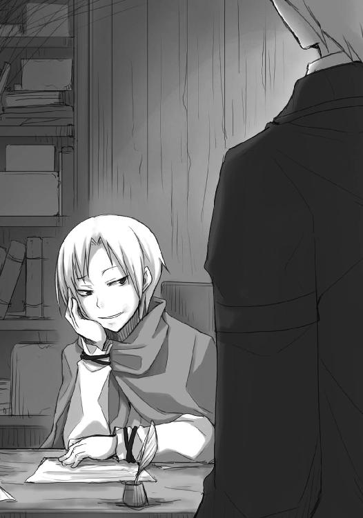
「昼寝の時間でしたか？」
「ああそのとおりだ。辺りはこんなにも寝言であふれている」
入り口に立っているロレンスの足元にも手紙の類が散らばっている。
軽く目を落とせば、すぐ目に入るだけでも脅迫じみたものが二通、北側の誰が南側の誰とつながっているという真偽の不明な告発が三通、我々と手を組まないかといった誘いが三通、僕と遠い国に逃げないかというのが一通あった。
ロレンスはその最後の洒落の効いた一通を拾って、エーブの下に届けた。
「昔、オレはすぐそこの海峡を渡ろうとする巡礼者の一行と同じ船に乗ったことがあるんだがな、運悪く海賊連中に追いかけられることになってしまった」
突然なんの話をするのかと思ったら、エーブはその紙を指でつまみ上げ、綺麗に折りたたみ始めた。
「命の危険に怯える巡礼者の一行は、当初こそ神に祈っていたがな、船員が何人も殺されて、いよいよ駄目だという雰囲気になってきた時、連中はなにをし出したと思う？」
「さあ」
ロレンスが答えると、エーブは楽しげに続けた。
「やがて巡礼者同士、あっちこっちで腰を振り始めたんだ。オレはそれを見て、人はなんと不思議で、強い生き物かと思ったものだ」
命の危機は最高の惚れ薬と言った詩人がいた。
しかし、当然疑問がある。
「その時エーブさんは一体なにを？」
エーブは折りたたんだその紙を、ひょいと暖炉の中に放り投げた。
「自分の身代金を確保するために、連中の荷物を漁っていたよ」
かさかさに乾いた唇はつり上げず、目元だけでエーブは笑う。
ロレンスは肩をすくめて、懐から羊皮紙を取り出した。
「これをお渡ししろと」
「見る必要はない」
エーブが答えると、ゆるゆると蠟をかきまぜていた老人がちらりとこちらを見てくる。
エーブは老人に向かって小さく指を動かし、老人はまた視線を溶けた蠟に落とした。
老人は耳が聞こえていない。
あるいは、そう思わせてロレンスにあれこれ喋らせるつもりか。
「オレの興味は、あんたがオレの味方かどうか、という一点に尽きる」
「正確には、最後に言うことを聞いてくれるかくれないか、では？」
やはり、エーブは口元でなく目元で笑う。
ロレンスの言葉には返事をせず、代わりに手を差し出してきた。
羊皮紙を渡すと、なんでもない手紙のようにあっさりと開く。
「ふん......予想どおりすぎると不気味だな。まるであんたがオレとの密会を洗いざらい喋ったかのようだ」
「ご冗談を」
ロレンスが商談用の笑顔で慇懃に答えると、エーブはつまらなそうに羊皮紙をテーブルの上に置いた。
「あの男はテーブルについたのか......」
そして、一人呟き、目を閉じる。
少なくともロレンスが運んできた羊皮紙は、他のものより多少は長くエーブに検討してもらえそうだった。
「あんたはどう思う？」
エーブは目を閉じたまま訊ねてくる。
駆け引きは、まだ早い。
「エーブさんがすんなりと受け入れてくれれば、つつがなく私の役目は終わります」
「地主一族の手による土地の権利移譲書とイッカクを引き換えにする。オレは北の裏切り者とイッカクの利益を山分けし、あんたらは周りを出し抜いた利益を分配する」
「万事めでたしですね」
ロレンスが言うと、エーブは大きくため息をついて目頭を揉んだ。
「人の心の中身を自分の目で確認できないというのは辛いな」
取引がそんなふうにうまく行くと相手を信じきることができるのは、今まで一度も裏切りなど見たことがない連中だけだろう。
一体どうして、自分たちは他の誰かを欺いているのに、自分たちの取引だけは大丈夫だと胸を張って言えるのだろうか。
「キーマンが誰とつながっているかわかるか？」
ロレンスを試しているわけではなく、純粋な質問の形式。
「いいえ」
「イッカクを秘密裏に運び出す手段に現実味はあるのか？」
「見張りの兵を脅迫と買収で動かせるとか」
「土地の権利移譲書は実権を握っていない息子に書かせるわけだからな。実質的な効力を持つか怪しい。キーマンはそこをどうするつもりだ」
「三代目の御当主は近隣の領主に挨拶に行って成人されていますし、町の裁判権は町の参事会、教会、周辺領主と、入り組んでいます。自分たちの権利を主張する拠り所さえあれば、どうにでもなると」
「なるほど。そして、あんたはそのキーマンの言葉を信じるのか」
無知な民衆を哀れむ貴族のように、エーブは低い位置からロレンスを見下している。
まるでエーブは、キーマンが罠を張って待っていることを確信しているかのような口ぶりだった。
「言葉は信じませんが、従うことはします」
エーブはロレンスから視線をそらす。
「模範的な回答だ。だが、オレたちの距離は縮まらない」
キーマンの提案は受け入れられないということか。
ロレンスはキーマンの話を頭から信じているわけではないが、エーブにとって悪い話だとも思えない。
「エーブさんにとって最善の選択は？」
ロレンスは逆に聞いてみた。
「言っただろう？ 誰も彼もを裏切って、オレが利益を独占する」
「そんな──」
思わず口をついて出そうになった言葉に、ロレンスは慌てて口を閉じた。
エーブが楽しそうに笑っている。
続きを言ってみろ、ということだろう。
「なぜ、そんな子供のようなわがままを？」
この話はむしろエーブがキーマンに持ちかければ、おそらくあっさりと、そして即座に決まるような話だ。
キーマンは狂喜するに違いない。
それをなぜエーブは頑なに疑い続けるのだろうか。
なにか理由があるにしてもおかしな気がしてくる。
もしもこの話を頭から信用できないのであれば断ればよい。
それとも、その言葉どおり、本当に自分に利益が集中しなければ嫌だと考えているのだろうか。
そんな、子供じみた、あまりにも聞き分けのない呆れるようなことを。
「子供？ そうさ。子供みたいなものだ」
エーブは笑って、小さく深呼吸をする。
吐いた息は、思いのほかテーブルの上のたくさんの紙を動かした。
「暖炉で火傷した赤ん坊は、火が消えていても暖炉を恐れるだろう？」
「......そうだとしたら、商人はなにもない部屋の真ん中で震えている以外にすることがなくなってしまいますよ」
騙され、火傷をし、それでもなお利益に手を伸ばそうとするのが商人のはず。
そして、その権化のような存在がエーブではなかったのか。
ケルーベという貿易の要になるような港町の、支配権に関わるような騒ぎでその中枢にいるのはその証左ではないのか。
ロレンスが半ばの怒りを持ってエーブに詰め寄ると、胡乱な瞳を向けられた。
「わたしも、初めから商人だったわけではないんだ」
「っ」
その弱々しい声音に、ロレンスは息を飲み、たじろいだ。
エーブはそんなロレンスを軽く一瞥しただけで、疲れきったようにテーブルに突っ伏した。
紙が大きく舞う。
耳の聞こえないらしい老人が慌てて立ち上がったが、エーブはテーブルにうつぶせになったままそちらを向いて、軽く微笑んだ。
「馬鹿馬鹿しいと思わないか。こんな紙切れのやり取りと、口から出てくる形のない言葉で、人の命すら買えるような金貨が転がり込んでくる」
エーブは一枚の紙を手に取り、落とす。
そして、ゆっくりとロレンスのほうに視線を向けた。
「心から信用していた者に裏切られたことはあるか？ それでもあんたは誰かを信用することができるか？ オレが信じられるのは、誰かを裏切っている自分だけだ」
獣の牙は、誰かを攻撃するための武器と同時に、自分の身を守る盾だ。
ならばエーブが牙を研ぐのは、それだけ身を守る必要があるということなのか。
「あんたは自分の命がかかっているような場面でオレに聞いたな？ 金儲けの果てになにが待っているのかと。オレは答えただろう？ 期待しているんだ......」
エーブはゆっくりと目を閉じて、同じくらいゆっくりと、開いた。
「いつか満ち足りて、不安と苦しみのない世界にたどり着けるんじゃないかと」
足を一歩引いてしまったのは、怖かったからだ。
不安と苦しみのない世界を目指して裏切りを繰り返すなど、人間の罪の根源を見せつけられたような気がした。
これが演技だとは思えない。
罠だとも思えない。
エーブはゆっくりと体を起こし、億劫そうに椅子の背もたれに寄りかかった。
そして、こんな台詞を平然と言うのだ。
「いいぜ。キーマンの提案を受け入れよう。あんたはオレのこの言葉を」
一拍間をあけたあとには、蛇のように笑っていた。
「伝えてくれ」
エーブは天才だった。
こんな言葉を一体どうやって信用しろと言うのだろうか。
キーマンになんと報告すればいいのだろうか。
可能性と疑念の目くらましにこみ上げる吐き気を飲み込んで、ロレンスは背筋をゆっくりと伸ばした。
伝えてくれと頼まれたら、ロレンスにはこう答えるしかない。
「......畏まりました」
恭しく頭を下げて、踵を返す。
ロレンスは一瞬、エーブが何本もの触手を持ち、時として船を食べ人に悪夢をもたらす海の赤い悪魔のような存在に見えていた。
エーブはきっと本当に誰も信用していない。
全ての人間を裏切って自分の利益のために奔走してもおかしくはない。
しかし、どこかで誰かを信用して取引を成立させなければ、利益を手に入れられないのもまた事実だ。
エーブは一体最後に誰を信用するつもりなのか。
そして、その取引ののち、最後に騙されるのは誰なのか。
ロレンスは扉に手をかける。
エーブの言葉が、追いすがるように投げかけられた。
「なあ、オレと組まないか」
エーブは無表情にこちらを見つめている。
騙りにも、本音にも見えた。
「騙されたと思って組んでみればいい、と？」
「ああ、そのとおりだ」
「騙された、と思いたくありませんので」
ロレンスが答えると、エーブは「確かにそうだ」と笑った。
ただ、そのあとに続く言葉に、ロレンスは返事をしなかった。
「なあ、あんたには帰りを待ってくれている連れがいるだろう？ だが、オレには──」
返事はしなかった。
返事をすれば捕らわれる。
人を幻惑する歌を口ずさむ人魚は実在した。
足早に廊下に出て、一階に下りる。
ずっと、背中にエーブの視線がまとわりついているようだった。
キーマンへの連絡は人伝ということになっていた。
指定された場所は、金の泉からは道を二つ挟んだ裏通りの猥雑に露店が並ぶ場所だった。木を隠すには森の中ということだろう。
ただ、人伝で手紙をやり取りするのは、単純にキーマンと直接会うのが難しいということもあるだろうが、もう一つ別の理由もあるはずだった。
ロレンスがキーマンから厳命されているのは、エーブから、伝えてくれと言われたことだけを伝えて欲しい、ということだった。これはおそらく、ロレンスがエーブの話術に騙されて、なにかおかしな情報を付け加えてキーマンに報告することを防ぐための処置だろう。
それは正しく、同時に自分の助けにもなる処置だとロレンスは思った。
今さっきのエーブとのやり取りを正確に表現するなど不可能だ。
なにが真実でなにが噓なのか。
人間不信に陥りそうだった。
「お頭は、了解した、と」
ロレンスから伝言を受け取り、その返事を持ってきてくれたのはいかにも小間使いが似合うといった、小柄で猫背の男だ。
「私はどうすれば？」
「もう少しで会議は休憩に入ります。そのあとに指示を出されるかと」
「わかりました」
「では、こちらからの返事は例の場所で」
男は言うや否や、他の場所でも情報の受け取りがあるのか、そそくさとその場を立ち去っていった。
用心深いことではあるが、それがどこまで功を奏しているかはわからない。
三角洲は日常的に旅の商人たちがやってくる場所であるから、町では見なれない顔がうろうろしていても目立つことはない、とはいっても限度がありそうだ。
今この瞬間にも、手持ち無沙汰にぶらぶらしている商人や、人待ちをしているように露店の軒先に立って通りをきょろきょろしている商人などが、この上なく怪しく見えてくる。
疑心暗鬼、とはよくいったもの。
ホロが側にいれば安心できるのかもしれないが、それに慣れてしまうといなくなってからのことが恐ろしい。ロレンスは苦笑いをして、返事の受け取りに指定されている酒場に向かった。
「お客さん！ 椅子ないけどいいかね！」
三角洲にはただでさえ酒場が少ないのに、そのほとんどが貸しきられ、挙句に今日は特別人が多い。
そのせいで酒場に入る前にそう声をかけられた。
もちろん、店に入る前から客があふれ返っているのは見ればわかる。こんなに盛況では樽に水を足さないとあっという間に酒が底をついてしまうだろうというのを見越して、ロレンスは強めのぶどう酒を注文した。
店の隅で壁にもたれかかって飲むことになったものの、店の中を見回すにはかえってちょうどよかった。会議に参加していなくとも、会議でなにがあったのかを知るには困らないし、元々大したことをやっているわけではない。
ロレンスがぶどう酒を受け取って、ちょうどよい濃さのそれを三口飲む間に、そのあらましはほとんどわかっていた。
北側は南側の商会が漁船を拿捕したことを責め、南側の商会は漁船に乗る漁師たちが望んだことだと応酬する。
当然議論は平行線で、決着などつくわけがない。
酒場で声高に噂をしている商人たちの言では、夜にかけて北側が折れて、イッカクの引渡しを諦める代わりにそれ相応の売却益を分配してもらうのではないかということだった。
ロレンスもその案に賛成だ。
もしも南側の長老たちが北側を叩きつぶしたいと思っていれば、イッカクをどこかの領主に売り、武力と権威の背景を得たうえで北側の地主たちを脅しにかければいいだけのこと。それをしないのは平和的な解決を望んでいるからだ。北側の手綱を今後も握り続けられるのであれば幾ばくかの餌を与えるのはやぶさかではなく、北側もまたそれでよしと思っているに違いない。北側が抵抗をしているのは、自分たちの権威のためと、単純に三角洲拡張の際の利潤の交渉のためだと思われた。
そして、それすらも会議のその場で決められるのではなく、水面下での折衝ののちに決められるのだろう。
ただ、その交渉はロレンスの与り知らないところで行われるはずで、その全容を把握しているのは皮肉にもあの茶番劇の主役たちなのだ。
エーブやキーマンといったこの町で並々ならぬ力を持つ二人の間に立っているせいで、イッカクを巡る話がこの一連の流れの中心であり、さらにその中心に自分がいるかのような錯覚に陥ってしまうが、実際はそれすらも傍流の一つに過ぎない。
そこでただ情報の仲介をしているだけの自分がどれほどのものかと考えると、笑いしか出てこない。しかも、エーブには初っ端から翻弄されっぱなしだ。
酒の力を借りて、心を落ち着けてすら、あの最後のやり取りは冷静に思い返せない。
商品と代金を巡ってのあれこれがいかに単純な勝負であるかを実感する。
常日頃からこんなやり取りに明け暮れていたら、それは当然とんでもない化け物を生み出すことになるだろう。
悔しさと憧れを抱くには、ちょっと住む世界が違いすぎる。
ホロが側にいなくてよかった、とやはり笑みしか出てこなかった。
「旦那様」
物思いにふけりながら酒に口をつけていたら、そう声をかけられた。
一度聞いた声と見た顔を忘れるようでは行商人失格といえる。
もっとも、そうでなくとも覚えやすい顔の、キーマンの小間使いだ。
「お早いですね」
「ええ、そりゃあ、もう。お頭の仕事は決断が早くなくてはいけませんから」
小間使いの男は、皺の刻まれた顔をくしゃりと歪めて誇らしげに笑った。
情報を集めれば集めるほど確度が高くなる事柄は、手の届く範囲に存在しなければならない。
行商人が取り扱うのはその手のことで、対してキーマンは船で何ヶ月と離れた場所の商品を扱っている。遠方の地となれば、情報を集めたからといってそれらが正しい保証もなく、また、そもそも集めるのが不可能な場合も多々あるはずだ。そんな中で信じられない金額に達する商品の売買に対する決断を下さなくてはならないのだから、それには相当の決断力が必要になる。
しかも、その判断を下してから、実際に商品が届くまでじっと我慢していられる胆力までもが求められる。
イッカクを土地の権利書と引き換えにして、町の勢力図をひっくり返してしまおうなどという壮大な計画を思いつき、しかもそれを実行に移せてしまう大胆さは、そういったところからきているのかもしれない。
小間使いの男が誇らしげに笑うのは当然だった。
「では、これを」
言葉が終わるか終わらないかのうちに、ロレンスのあいている手にするりと紙片が滑り込んでいた。
まるで、最初からロレンスがそれを持っていたかのように。
手渡された本人ですらそう思うのだから、傍から見ていたらきっとよほど注意深く見ていないと気がつかないだろう。
「......確かに」
ロレンスの返事にこっくりとうなずき、小間使いの男は来た時と同じように去っていった。
手渡された手紙には封すらされていない。
ロレンスがそれを覗き見るとは思っていないのか、はたまた見ても構わないと思っているのか。
どちらにせよ、ロレンスはそれを見なかった。
見ればその情報に捕らわれ、エーブはそれを取っ掛かりにロレンスを丸め込もうとするはずだ。猫の鋭い爪でも、つるつるの丸い石は引っ掛けることができない。知らなければなにかを判断するということもなく、なにかを判断しなければそこにつけ込まれることもない。
圧倒的に情報量で差がある現状では、こうして身を守るのが適切なはず。事の成否が自分の手の届く範囲にやってくるまで我慢をし、決して心の内を表に出してはならない。
自然体で振る舞おうと意識する、というのはそもそもの矛盾。
それでも、清濁併せ吞み、緩急自在に、喜怒哀楽を使いこなせてこその商人だ。
ロレンスは自分にそう言い聞かせる。悪魔などいない、と自分に言い聞かせながら深夜の森の中で小便をした子供の頃のように。
先ほどと同じ手順をたどってエーブの下に手紙を届け、返事を貰う。今度はエーブは言葉をかけてこず、ただ哀れみを請うような視線を向けてくるだけだった。
もしも自分が自然体を装えているのなら、それはエーブにだって可能だということだから、その表情がどこまで演技なのかはわからない。
ただ、疲れたように前髪が額にかかり、顔の要所要所には細かい皺が浮かんでいるのは確かであり、机の上に散らばっている手紙の量も増えているようだった。
エーブのいる部屋を去る時、どうしたって脳裏には一人で机の上の無数の書類の処理に戻るエーブの姿が残る。
ロレンスにはホロがいる。
それは単純に支えになるという意味でもそうだし、なによりこの計画がご破算になりかけたら全てを白紙に戻してくれるという切り札でもある。
しかし、エーブはただ一人で、味方と呼べる者もおらずこの戦いに臨んでいる。危ない取引に手を染めているのは間違いがなく、もしもキーマンと連絡を取り合っていることがばれたとしたらどれほどの報復を北側の地主たちから受けるのだろうか、と考えると他人事ながら暗澹たる気持ちになる。
ロレンスは、堅く戒めた自分の心が今にもほつれてしまいそうだった。
「どうしました？」
キーマンの返事を小間使いから受け取り際、そう言われてしまった。
「いえ」
頭を振ると、小間使いもそれ以上は聞いてこなかった。
ロレンスは人ごみをかき分けてエーブの下に向かう途中、知らず足が小走りになっていることに気がついた。
どこか気が急いてしまっている。
自分が受け渡しをしているのは単なる紙なのに、しかも、ただ受け渡す以上のことを期待されているわけでもないというのに、と自分に言い聞かせても緊張は高まっていく。
言い訳はできない。
自分が運んでいるものは、人の命と運命を簡単に左右するほどのものなのだから。
「ここでしばしお待ちを」
都合四度目だろうか。
ロレンスが手紙を届けに来ると、これまでは符丁を確認するだけだった見張りの男が、ロレンスから手紙を受け取るだけで部屋に通してくれなかった。
どんな拷問も同じことを同じ間隔で続けていれば苦しみは薄れていくというが、突然のことにロレンスの緊張はさらに高まってしまう。
見張りの男はもちろんロレンスになにかを説明してくれるわけでもなく、部屋の中のエーブに手紙を届けると、あとはじっとしているだけだ。
二人の見張り同士で言葉を交わすことも、視線を交わすこともない。
じりじりと時間だけが過ぎていき、外から聞こえてくる町の騒がしさが、かえってこの場の沈黙を強調する。
徐々にエーブの返事を書く速度が遅くなっていたのには気がついたが、もしかしたら、手紙の内容がついに核心に触れるようなことになったのかもしれない。
エーブは考え考え、ペンを走らせているのだろう。
正解を記した書物などどこにもなく、それを知る者すらどこにもいない中で、自分の運命がかかった難問を解くというのは、生半可なことではない。ロレンスは、薄暗い森の中で山賊に襲われながら二股の道に出会った時のことを思い出した。
どちらかは山の奥深くに続いていて、行き止まりになっている。選ぶ時間も、助言を求める相手もおらず、自分が取れる選択肢は前に進むというただひとつだけ。
エーブの手には、きっとペンが鉛でできているかのように感じられることだろう。
そして、ようやく扉が開けられると、聾者と思しき老人が手紙を手に部屋を出てきた。
ロレンスを認め、ゆっくりと手紙を差し出してくる。
受け取ったそれはわずかに歪み、汗をいくらか吸い込んでいた。
エーブの苦心が見て取れる。
その手紙を小間使いに渡し、キーマンの返事を貰った時だった。
「お頭が、焦れてます」
小間使いの男がそんなことを言ったのだ。
「川の流れが速くなっていると。こちらもそれに合わせて船を漕がなければならないと」
キーマンがその手に担っているのは、なにもエーブとの取引だけではない。
他の何十という暗躍する商人たちが進める大きな流れの中で、その流れに沿って舵を取っているはずだ。
情報の伝達は早ければ早いほどいいのは商売の基本。
この期に及んでもなお手渡された手紙に封がしてないのは、蠟が固まる時間も惜しいからかもしれない。
ロレンスはうなずいて、エーブの下に走った。
しかし、やはりまたしても見張りの男は手紙だけを部屋の中に通して、ロレンスはエーブの姿を見ることができなかった。
これでは急かすこともできない。
いや、急かしたところで早く返事を貰えるとは限らない。
エーブだって馬鹿ではないのだから、この流れの変化は感じ取っているはずで、それに乗り遅れれば策もなにも関係なく不利益をこうむることだって予測がつくはずだ。
それに、キーマンが焦れるほど事態の流れが速くなっているのなら、エーブの下に舞い込む他の手紙の量も比例して増えるはず。
いくらこの策が全てをひっくり返しかねないものであったとしても、それ一つにだけかかずらっていられるほどエーブは軽い立場にいるわけではない。むしろ、秘密の取引は普段の取引の中に慎重に隠す必要がある。
エーブも、必死なはずだった。
ロレンスは、平静を装って廊下で待つ間、自分に何度も言い聞かせる。
自分の利益のためならば、天秤が釣り合うまで二日でも三日でも待つのが商人だ。
しかし、待っていれば勝機を逃すということがあるのもまた事実。
ようやく出てきた老人から手紙を受け取ると、ロレンスは礼もそこそこに宿をあとにした。
心情的には、誰の味方なのかもはやわからなくなっていた。
自分が急ぐのは、キーマンがその計画をうまく進められるようにしているのか、それとも、エーブが考えられる時間を少しでも取れるようにと走っているのか、あるいは自分がこの雰囲気に飲み込まれてしまっているだけなのか、自分でもわからなかった。
小間使いの男の表情も徐々に険しく、額に汗が目立つようになった。
小間使いの男から返事を待つほんのわずかな時間、道行く商人や、酒場の商人からも、会議に動きがあることが漏れ聞こえてくる。
予想以上に素早く結論が出そうだという。
そして、もしも結論が出てしまえば、キーマンが企んでいる逆転劇は水泡に帰す。
この先、これ以上の機会があるとはとても思えない。
小間使いの男から語気強く急かされて、ロレンスは何度か見張りに催促した。
それでもエーブからの返事は遅くなる一方で、垣間見えた文字は気の毒なほど乱れていた。
この、胃の腑を少しずつ絞られていくようなやり取りの中、エーブのいる宿に赴き、もう何度目かわからないやり取りを繰り返す。
それから、手紙を見張りに手渡した瞬間、違和感を得て、その手が止まってしまった。
「？」
見張りの男が怪訝そうにこちらを見つめてくる。
ロレンスは弾かれたように男の顔を見てしまい、慌てて愛想笑いを浮かべた。
しかし、心臓は痛いほど高鳴っていた。
まさか。
そんな単語が狂ったように駆け巡っている。
見張りの男は手紙を受け取り、エーブのいる部屋へと手紙を持っていく。
「......まさか」
ロレンスは喉の奥だけで呟いた。
エーブはなぜこんなにも返事が遅いのだろうか？
会議に参加し、おそらくはエーブよりも多くのことをこなしているキーマンは、即座に決断し即座に返事を出してくる。
キーマンとエーブの性格の違いだ、ということはできない。
エーブは事の成就のためならばためらわずに刃物を取り出すような商人だ。
逡巡し、優柔不断に頭を抱えるような種類の人間ではない。
だとすれば、キーマンよりもさらにエーブは忙殺されているからかもしれない、と考えた時に、ロレンスは違和感を感じたのだ。
エーブのいる部屋に通された時、そこには大量の手紙が散らばっていた。
それは訪れるたびに目に見えて増え、それに目を通すだけで一苦労だと思った。
しかし、重大なことを見落としていた。
根本的なことを見落としていた。
ロレンスは何度もここに手紙を届けに来て、ここしばらくはその都度長いこと待たされている。
その時に、見ただろうか？
この部屋に、他の誰かが、別の手紙を運びに来るところを。
今回もしばらく待たされた挙句、ようやく返事の手紙を渡された。
ロレンスは嵐の過ぎ去ったあとのような、静けさに満ちた目で辺りを見ることができた。老人が扉を開けるその瞬間、垣間見える部屋の中、いくつもの手紙が無造作に散らばっていた。
ただ、普通に考えてみればいい。
手紙を読んだあとにどうしてあんなにも散らばらせる必要がある？
それはなんらかの目的があってそうしたのでは？
懐にエーブからの手紙を入れ、ロレンスは足早に宿をあとにした。
そもそも、このやり取りには前提からして不可解なことがあった。
その最大のことといえば、エーブが子供のわがままを言うように、自分で利益を独占できなければ嫌だ、と言うことだった。
それでも、エーブと交わした会話とその場の雰囲気は、エーブがそんな子供じみたことを言うのも納得させてしまうようなものだった。
元は商人ではなく、裏切られるのが当たり前、と覚悟してこの世界に飛び込んだわけではなく、辛酸をなめて今の地位を築いたと容易に想像がつくエーブ。
だとすれば、苦しみのない世界を追いかけるために、誰かを裏切り続けるという悪魔の道を歩んだとしてもおかしくはない。
しかし、それはおかしくはないだけで、その必然性はどこにもない。辛いからこそ他人を傷つける道を選んだというのは言い訳に過ぎない。
もしも、それらが全てエーブ自身の演技だとしたらどうなるか。
ロレンスは頭を巡らせて、血の気が一斉に引いてしまったのだ。
待つことが儲けにつながる商売もあれば、素早い行動こそが儲けにつながることもある。
今回のこの取引は、おそらく後者に分類されるものだ。
会議での結論が出てしまえば、一発逆転の策は取れなくなってしまう。
エーブが自分自身の利益のためではなく、他の誰かの利益のために動いていたとすれば、そんな取引の最中にあって、まごまごと返事をしたためる理由というものは存在する。
すなわち、時間稼ぎ。
キーマンのような連中はどこの町にも程度の差こそあれ存在する者で、彼らは機会さえあれば周りを出し抜こうと虎視眈々と狙っているものだ。
だとすれば、長老と呼ばれる齢を重ねた海千山千の頂点に立つような連中が、自分たちの若い頃を思い出さずにいられるだろうか。
エーブはキーマンたちの暴走を食い止める役目を任されていたのではないか？
のらりくらりと相手をして、時間切れを狙って、長老たちが直接食い止めたとあれば世代間の闘争につながりかねないこの案件を、うまく矛先をずらして解決するために。
そう考えれば納得がいく。
不自然に散らばった手紙の数。
しかも、あんなにも手紙があるのに一度も運ばれるところを見かけなかったこと。
そして、エーブはどんな難問にも怯まないはずだというこの印象。
小間使いの男にロレンスは手紙を届ける。
急いでそれを主人の下に届けようとするその男の肩を、ロレンスは摑んでこう言った。
「キーマンさんに伝言を」
小間使いの男は顔をしかめる。
それでも構わずロレンスは言葉を続けた。
「狼は囮の可能性があります」
これだけを伝えてもらえれば、キーマンならばすぐに理解するはずだ。
下手をすれば、ジーダ館長は出る杭を打つ考えで罠を仕掛けてキーマンを失脚に追い込む腹積もり、という可能性すら考えることができる。なにせ、キーマン自身がロレンスを駒の一つとして使い捨てることになんらの良心の呵責も覚えていないような場所なのだから、その頂点に立つ人間が優秀で目障りな部下を合法的に失脚させようと企んでもまったくおかしくはない。
また、そうなればその時に巻き添えを食うのは他ならぬロレンスであり、ホロの力を借りようが借りまいがロレンスの居場所はなくなってしまう。
しかし、小間使いの男はロレンスの必死な物言いに苦しそうな顔をするだけで、返事をせずに走り出した。
彼はロレンスから手紙以外のものを受け取るなと厳命されているはずで、それはロレンスが勝手な判断を下す危険を回避するためだ。
それでも、事態は一刻を争う。
もしもエーブがこちらを嵌めようとしているのならば、手を引くのは早いほうがいいし、罠の入り口ならばまだ引き返すことができる。その口が閉じてからでは遅いのだ。
ロレンスは酒場でじりじりと返事を待つ。
エーブに比べて格段の早さだったせいで、キーマンの返事を待つという印象を抱いたのはこれが初めてだった。
実際にはそれほど待っていたとは思えない。
しかし、小間使いの男が現れた時はようやくという感じだった。
ロレンスははやる気持ちで小間使いの男の返事を待った。
そして、小間使いの男がもたらしたのは、これまでどおりの手紙だけだった。
「あの人はなんと？」
思わず聞き、小間使いの男は即座に首を横に振った。
「これを届けてください」
「っ」
言葉に詰まったのは、なにを言うべきか一瞬わからなくなったからだ。
「言わなかったのですか？」
男の両肩を摑んで問いただすと、男は目をそらして口をつぐむ。
言わなかったのだ。
怒りよりも先に、焦りが前に出る。
「根拠のないことではないんです。もちろん、あなたが厳命されていることの理由はわかります。ですが、全知全能の神でもなければ、行ったことのない町の様子を正確に描ける人間はいません。百聞は一見にしかずというのは真実です。まだ間に合うはずです、早く、知らせに──」
「いい加減にしろ」
小間使いが似合う小柄な男が、低く重い声でそう言った。
思わず両肩から手を離してしまったのは、およそそれがまともな道を歩んできた者の声には思えなかったからだ。
「行商人風情がわかった気になるな。頭はなんでもお見通しだ」
単語の発音の端々から、血と泥の匂いが窺えた。
キーマンのような人間なら、元ごろつきを手なずけていたとしてもおかしくはない。
「言われたことだけをすればいいんだ。俺も、お前も」
行商人がついぞ経験したことのない、忠誠というものがこれだ。
馬鹿げたそれのせいで無駄に命を落とす騎士や傭兵の話はごまんとある。
商人は理性でそれらを回避できる数少ない種類の人間のはず。
ロレンスは恐れず、言い返した。
「誰しも間違えることはあります。その場にいなければわからないことだってあるはずです。それを正すのも下で働く者の務め。そうではないのですか」
ロレンスの言葉に男は顔をしかめ、そして、うつむいた。
この、キーマンに忠誠を誓っているのであろう男だって、自分の忠誠心が主人の首を絞めたとなれば悔やむはずだ。
説得するしかないし、できないはずがない。
ロレンスが勢い込んで言葉を続けようとした瞬間、顔を上げた男は唾を吐く真似事をした。
「忘れるな、行商人。俺たちゃ手先だ。考えることは必要とされてねえ。手足に頭はついちゃいねえからだ。わかったかっ......！」
声を潜めながらの荒い語気は、暗がりで人を恫喝することに慣れた者特有の迫力と、陰鬱さがあった。
しかし、ロレンスが息を飲んでしまったのは、そんなことにではない。
男の言葉、そのものに言葉を失ってしまったのだ。
「わかったなら、運んでください。私はお頭から命ぜられているのです。そして、あなたもそのはずですから」
男は言って、呆然とするロレンスの肩を叩き、無駄な時間を取らされたとばかりに走り出した。
周りの人間は誰一人としてこのやり取りに関心を示さない、ほんのわずかの時間のちょっとした出来事だったし、それは実際にちょっとした出来事なのだ。
ロレンスはキーマンの手先。
それは間違いのないことで、だとすれば頭を働かせ、何事かを考えるのは手先の役目ではない。
自分でもそれはわかっていたことで、好機が訪れるまでは我慢しなければならないということも頭ではわかっていた。
ただ、独立独歩で商いをしてきたと自負のあるこの身には、それは恐ろしい事実だった。
自分がちっぽけな存在であることは理解していても、ただの歯車であると認識したことはない。
小さいながらも、自分の名を持ち、考えを持ち、自ら行動できる商人だったはずだ。
頭で考えていたほど、自分を否定されるということの辛さは柔なものではなかった。
複雑な機構の中で、自分がただの一つの部品であると思い知らされる。
ロレンスは、確かにその衝撃に頭を殴られるような思いだった。
しかし、その事実に胸の奥から燃え盛るような怒りが湧き起こり、大声を出したい衝動に駆られた直後だった。
その瞬間に、ふと理解してしまったのだ。
エーブが子供じみたわがままを繰り返し、こんな事態を目の前にしてもなお、自分が最大の利益を上げられなければ嫌だ、などと言うその理由が。
エーブは、時間稼ぎをしているわけでも、なにかを企んでいるわけでもなかった。
それを心の底から確信できた。
これが罠だったならもはや両手を上げて降参しよう。
そう思えるほどの確信は、論理ではなく感情論だった。
ロレンスがエーブのいる部屋の前にやってくると、どういうわけか今回になってエーブのいる部屋に通されて、エーブのその顔を見ることになった。
人の心は目で見えない。
しかし、行動によってどんな絵図を抱いているかはわかるもので、またそれは表情によっても示される。
エーブは机の上に頰杖をつき、どこか爽やかさすら感じさせる無邪気な笑顔を浮かべていた。
「いい顔してるじゃないか」
ローム川流域に住む狼は、笑顔で笑うのではない。
ロレンスは、手紙を懐から取り出しながら、こう言った。
「本気で、イッカクの利益を独占するつもりなんですね？」
エーブの顔から笑みが消えていき、ほんのわずかだけ目元が歪んだ。
それは顔をしかめているようにも見える。
ただ、全てを嘲笑う狼には、それが最も相応しい笑顔なのだ。
家を金で買われ、運命を翻弄され続け、そんな中でも酸と硫黄の海を泳ぐためにさまざまな力を利用するたびに、それ以上利用されてきたのだろうと思われるエーブ。
エーブが誰かから認識される時、それはボラン家の当主としてか、はたまた見目麗しい女としてか。
少なくとも、その名を親しげに呼んでくれる者はほとんどいなかったのだろう。
フルール・ボランという本名を使わないのは、本当はそういう理由があるのかもしれない。
初めから周りが自分をなんらかの道具としてしか見ないのなら、それ専用の仮面を作ることで身を守る。
それが感傷的に過ぎる考えだとしても、大きく外れていないのではないかと思った。
エーブはロレンスから受け取った手紙に目を通し、ゆっくりと瞼を閉じる。
そして、小さく笑ってこう言った。
「あんたは本当に商人に向かないな」
「あなたも狼には向いていないかもしれません」
言葉と、前提を省略したやり取りはどこか神と聖職者の対話に似ている。
エーブは視線を暖炉に向け、目を細めて口を開いた。
「オレは誰かを利用することで今まで生きてきたつもりだったが、現実から目をそらすのもそろそろ限界だ」
言ってから、ちょいちょいと自分の左の口元を指差したのがちょっと冗談めいていたのは、笑い話にしなければとても話せたことではないからなのかもしれない。
「この騒ぎが起こってすぐにな、財産のほとんどをかけた例の毛皮を取り上げられた。危険な仕事を引き受けて、オレと共にレノスの町をあとにしてくれたアロルドの身柄も捕らえられた。こんな状態で、なお狼を気取る気概はオレにもない」
北側が交渉で苦戦を強いられているのは明白だ。
追い詰められた者たちは、さらに立場の弱い者たちを締め上げてどうにかしようとする。
ありそうなことだ、とロレンスは胸中で呟いた。
これまでもそんな方法でエーブを利用してきたのかもしれない。
ただ、今回の彼らの誤算は、エーブの我慢もついに限界だったことだろうか。
「オレの名はいつだって便利な道具だった。オレの名をきちんと呼んでくれたのは爺やと数少ない変わり者だけだった。まだ生きているのは、アロルドくらいだがな」
手先となり、あるいは道具となり、利用価値でしか判断されてこなかった人生というのはどういうものか、ロレンスにはとても想像がつかない。
それでも、人というのは複雑なようでいて思いのほか単純だったりする。
いくつかの印さえあれば、予想もつかない人生を歩んだ人間が、結局どの丘にたどり着いたのかを知ることができる。
ロレンスは、ゆっくりと口を開いた。
「あなたは、名前を呼ばれたがっている、ということですよね」
周りを敵に囲まれた、孤立無援の丘の上で。
「......そうはっきり言われるとやはり恥ずかしいな。いや、怒らないでくれ。オレは嬉しいんだ。鉈とナイフで斬り合って、今更遠慮する仲でもない。オレ自身も驚いている。あんたを釣り上げて利用するのはさほど難しいことではないと思った。なにせあんたは単純でお人好しだからな。だが」
饒舌なエーブの台詞の中には聞き捨てならないものがいくつも含まれていたが、商人にとって口は金と災いの元。
聞き捨てならない台詞を無造作に投げつけてくるということは、その口は商人のものではないということだ。
「だが、あんたに知られないままでいるのは耐えられなかった。もちろん、信じてくれなくても構わないが......」
なんと答えるべきかわからない。
どんなふうに答えを返しても、エーブを傷つけそうだった。
「オレはな、この話を最後に、もうこの腐りきった地域をあとにする。だから、最後の最後くらいは......な」
凄みのある笑顔。
それをどれほど美しいと思ったかは、未来永劫心の奥底にしまっておかなければならない。
「最後の最後くらいは、自分の名前をきちんと呼ばせてやる、ということですよね？」
エーブがにゅっと唇の両端をつり上げた。
頰のない狼のように。
その牙を剝き出しにして、エーブは悲しそうに笑ったのだ。
「そうだ。最高の頃合で、最高の裏切り方をして、あいつらにオレの名を呼ばせてやる」
ロレンスは、死地に赴く騎士を見送るような心持ちで、言葉を紡ぐほかなかった。
「エーブ・ボラン、と憎しみの怒号であっても」
「そのとおり」
その瞬間、エーブの顔は見なれた顔に戻っていた。
「では、オレの名を呼んでくれた行商人クラフト・ロレンス氏に聞きたい」
王が王宮の内部で少数の人間とだけ会話をし、ほんの一握りの人間の決定だけで国を動かすのは彼らが神から選ばれし人間だからではない。
彼らもまた同じ人であり、親しい人間しか信用ができないからに他ならない。
エーブは初めて出会ったコルに向かって、人に好かれるのはある種の運命だと言った。
それは、きっと、こういう意味なのだ。
「共に、裏切らないか？」
左の口元に痛々しい痣を作ったエーブの顔は、まさしく狼に相応しいものだった。
ロレンスがエーブから預かった手紙を小間使いの男に渡し酒場で待っていると、今回は返事が特に遅かった。
酒場にいる商人たちの数も減ってきていて、活気もそれほど感じられなかった。
酒場にいるのはロレンスがここに来るたびに目についた、おそらくは同じような仕事を任されている商人たちばかりで、互いに目が合ってしまい、気まずく目をそらすこともままあった。
夕暮れまでもう少し、というこの時間に、すでに顔を真っ赤にして出来上がった商人たちの会話によれば、会議の結論がほぼ固まりつつあり、今日の分の交渉は終わりらしいということだった。
北側はイッカクの奪回を諦め、南側が相応の金を北側に分配するという、最もつまらない結論で一致を見ようとしているらしい。
確かに、南側が目もくらむような資金でもって北側の漁師を買収してしまえば、イッカクという商品が南側の手元にある以上、北側はその線で妥協する以外に選択肢はないだろう。
もしもイッカクを奪い返そうと思えば、武力に訴え出るか、あるいは買い戻さなければならないが、そのどちらも非常に金がかかる。
それに、町が戦争に突入となれば商売どころではなく、利するのはケルーベ以外で市を開く町の人間たちばかりで、ケルーベの人間は誰一人として得をしない。イッカクを購入するにしても、そんな資金繰りの当てはどこにもないだろう。
理不尽な理由で起こされた戦いに、徒手空拳で臨むほかない北側には同情の余地がある。
しかし、理不尽というものは路傍の石ころのごとくあちこちに転がっている。
つまずいて転んでも、手を差し伸べてくれる者など滅多にいやしないのだ。
「お待たせしました」
酒場に立ち込める、酒と肉の焦げる匂いが体に染みつき始めた頃、ようやく小間使いの男がロレンスに返事を持ってきた。
ロレンスはエーブがどんな返事をしたためていたのか盗み見ることはなかったが、今回のものはそれなりの内容だったことが窺い知れた。
今回手渡された返事には、赤い蠟で封印が施されていたのだ。
「今日はこれで最後になります。ですが、必ずや返事を貰ってきてください」
一見すれば気の小さい小柄な小間使いであるが、その実、懐に毒を塗った刃を隠していかねない男だ。
必ずや、という言葉が単なる強調の言葉ではないことくらいよくわかった。
封印を施してあるのは、万が一にもエーブに疑いを抱かせないための処置だろう。
つまり、そこにはキーマン側の結論が書かれているのだ。
「わかりました。必ず」
手先は手先。考える必要などない。
ロレンスのその返事に、小間使いの男は満足そうにうなずいた。
ロレンスが歩き出すと、男はずっとロレンスのことを見つめていた。
会議が終わるということで、男の仕事も一段落なのかもしれない。
あるいは、とロレンスは相変わらずの人出の道に出て、そこだけは澄んだ空を見上げて胸中で呟いた。
自分を疑っているのかもしれない。
それがなぜ笑えてしまうのかは、自分自身にもよくわからなかった。
「明日の早朝、正規の手続きに見せかけてイッカクを運び出す。川の上でイッカクを乗せた船ごと、土地の権利委譲書と共に交換する。あとはどこへなりとも消えうせろ。ルド・キーマン」
最後のところは冗談だろうが、手紙の内容を読み上げたエーブは、その紙をためらうこともなくロレンスに見せた。
確かにそのような内容が示されており、キーマンの署名もある。
もしもエーブがこれを持って商館に行けば、キーマンの立場は一気に悪くなる。
そんな書類を渡したのは、これをエーブに渡しても大丈夫だという確信があるのだろう。
それが、どういう意味の確信なのかはわからない。
まさか無条件にエーブを信頼しているわけではないから、きっとそれが表沙汰になっても揉み消せる根回しをしている、という意味での確信だろう。
「単純で幼稚な引渡し案だ。どう思う？」
「危なくなったら船ごとひっくり返せばうやむやにできる可能性がありますから、あながち悪い方法でもないのでは」
ホロがロレンスに言ったのとほとんど変わらない方法に、エーブは片眉をつり上げて、「なるほど」と楽しげに呟いた。
「で、オレはこの手紙に、こう書けばいいわけだな？」
言いながら、ちょっとした手遊びのように羊皮紙にペンを走らせていく。
丁寧に毛が取り除かれて、綺麗に表面を削られた上等な羊皮紙は、とても一介の商人が遊びでペンを走らせるような代物ではない。それらは厳しい顔をした修道士が、石造りの荘厳な修道院で神の叡智を記した書物を筆写するに相応しく、エーブは実際にそれに負けず劣らず綺麗な筆跡で恐ろしい文章をしたためていた。
「了解した。では、引渡しのための船に乗るのはこのエーブ・ボラン。対するそちら側の船に乗るのは、伝説の神獣、そして」
その目が、ロレンスを見る。
「クラフト・ロレンス」
ロレンスは返事をしなかったが、エーブは特に気にするふうでもなかった。
最後に署名をさらさらと書くと、蠟をかきまぜている老人に向かって無造作に羊皮紙を投げた。
それに赤い蠟で封をして、馬の毛で閉じれば返事の完成だ。
そして、ロレンスはきっと引渡しのための船に乗ることになる。
「私は、あなたに返事をしていませんよ」
背後の扉の向こうから、仕事が一段落したからか、見張り役二人のかすかな笑い声が聞こえてきた。
彼らは、死罪になるところをエーブに救われた連中だという。
エーブのすごいところは、彼らから信頼を得るために、自分の計画を話し、協力してもらっていたことだ。
全てはロレンスがこの場にこんな顔で立つために。
荒くれ者たちは、見た目ほど愚かではない。
「返事？ あんたは時折おかしなことを言うな。オレたちみたいな噓つきの商人にとって、言葉がいかほどの価値を持つというのだ？」
これを実に楽しそうな口調で言うのだから、苦笑いを隠せない。
もちろん、商人にとっては表情なんてものも大した意味を成さない。
ロレンスは苦笑いのまま、表情をピクリとも動かさなかった。
「商売とは実際危険な行為に他ならない。相手がなにを考えているか見抜けるのは神だけだが、神は何物も欲さない。取引とは常に欲にまみれた人間だけが行い、欲にまみれた人間を信用することほど危険なことはこの世にない。オレはキーマンの手紙に返事を書き、あんたはそれを運んでいく。その結果がどうなるかは、祈るにせよ、脅すにせよ、待つしかない。オレは全ての手を打った。だから、これをあんたに渡すしかない」
老人から手渡された手紙を、ロレンスに向かってためらわずに突き出す。
自分の運命を決するといっても過言ではないその手紙を、こんなにもあっさりと他人に預けようとする。
それは勇気というよりも、自分の命に執着がないようにすら見えた。
うまくいかなければ自分はその程度の価値しかなく、その程度の価値しかないものなど必要ではない。
ロレンスはエーブから手紙を受け取り、命知らずで名を馳せた英雄の言葉を思い出した。
「キーマンは間違いなくこの手紙のとおりにするはずだ。もしもこれを否定して、船にあんたとあんた以外の者を乗せようとすれば、こちらも身を守る必要上、他に人を乗せざるを得なくなる。どちらかがどちらかを疑えば、武装の連鎖がどこまでも続く。だから」
エーブは言葉を切り、ロレンスに手紙を渡した手だけを机の上に載せて、目を伏せると大きく深呼吸をした。
緊張していないわけではない。
そう、強調するように。
「だから、次にあんたに会う時は、誰もいない、朝もやの立ち込める川の上だ」
エーブがローム川の狼であるのなら、なるほどホロと似ていないところがないわけではなかった。
ロレンスの目には、机の上に置かれたエーブの手が映っていた。
その手を取ってもらいたそうに、だが決してそんな素振りは見せないように、相手を信じたくて信じられないような、そんな仕草が感じられた。
「一つ、いいですか？」
ロレンスが口を開くと、エーブの手がぴくりと動いた。
「なんだ？」
「私には、連れがいるのですが」
川の上での引渡しの際、ロレンスが組合を裏切れば、ロレンスとエーブは揃ってどこかに待機している船にイッカクごと乗り換え、そのまま遠洋に出てしまうことができる。
しかし、陸に残っているホロやコルを拾おうとすれば途端に困難がつきまとう。
キーマンがこの単純な計画を選んだ理由の一つにそれがあるはずだ。ホロやコルは一種の人質になる。
エーブは、表情を変えずに机の上からそっと手を引いた。
「オレにもアロルドがいる」
その一言が、ロレンスの心臓を貫いた。
「ほら、手紙はもう渡した。行け」
エーブは面倒くさそうな顔で続けて言い、ロレンスを追っ払うように手を振った。
逆らえば怒鳴り散らしそうな、そんな雰囲気があった。
オレにもアロルドがいる。
エーブのその言葉は、重要な示唆に富んでいた。
アロルドは、エーブの言葉を信じるのならば、エーブにとって数少ない金では買えない大事なものなのだから。
もちろん、ロレンスはホロの正体とその真の力を知っているから、恐れることはない。ホロは自分たちの身の安全はもとより、アロルドだって救い出せるだろう。
問題は、エーブがその危険を引き受ける決心を見せた、ということだ。
エーブはホロの力を知りはしない。
毛皮と共にレノスの町からケルーベまでやってきて、路銀の世話までしてやろうとしているほどに信頼していたアロルドを切り捨てる覚悟すらある。
そうなると、ロレンスをアロルド以上に信用しているのか、と考えたくもなる。
しかし、それが馬鹿げた考えであるというのは論を待たない。
もはやなにもかもを本当に自分の利益のために切り捨てる覚悟をして、手に触れる物全てを金に換えようと堅く心に誓ったのだろうと考えたほうがよほどしっくり来る。
問題は、太古の神話では、触れる物全てを金に変えてくれと望んだ愚かな神は食べる物がなくなって死んだことだ。
ロレンスがエーブの言葉に衝撃を受けたのは、他でもない。
そんな、絶対に救いの見えない道を選びかねないエーブを見捨てられるのかと自問してしまったからだ。
アロルドを見捨て、そうまでしたからにはきっとロレンスを船上で殺すか、どこかでまた裏切るはずだ。
それでエーブが笑っていられると想像できるならまだましだ。
ロレンスにはそれができない。
エーブが笑うとはとても思えなかった。
エーブに同情しているのか？
自問したが、答えは出ない。
これは勝手な思い込みか？
その可能性は大いにある。
しかし、世に自分の思い込みでないことなど数少ない。
神の存在だって疑う者のなんと多いことか。
ならば、自分はどうするべきか。
自分の利益を片手で摑みながら、あいた手でエーブの手を取るにはどうすればいいのか。
ロレンスは激しく自問して、酒場で小間使いの男に手紙を渡した。
「......辛い仕事、ご苦労様でした。お頭は、あとのことは宿に帰ってからお伝えすると」
小間使いの男は、最後にそう言ってロレンスの肩を叩いて立ち去った。
どんな勘違いをしているのか、と考える余裕すらない。
会議はさしたる波乱も見せず閉会となったらしく、ロレンスが金の泉の側にふらふらと歩いていくと、そこではすでに三々五々人が雑談に興じていた。夜に向けてかがり火の準備がされ、殊更威厳を出そうと胸を張っている兵士たちが神聖な玉座を守るかのように会議で使うためのテーブルの前で立っていた。
金と、権威と、名誉を巡っての宴、といえば聞こえはいいし、物語として語るならば十分だろう。
しかし、実際にそこに参加する者たちのなんと惨めで矮小なことだろうか。
神が商人たちを賞賛しないのには、確かな理由があったのだ。
空が茜色に染まり始め、烏か、あるいは海鳥の影が遠くに見えた。
商売をして、金を稼ぐというのはもっと優雅で高貴な行為だと思っていた。
ぽつり、ぽつりとともり始めたランプの灯りを眺めながら、ロレンスは三角洲から南側へ川を渡る船に揺られていた。
エーブは絶対にあとに引かないし、キーマンが杜撰な計画を練っているとは思えない。
キーマン側にとって最も恐れることは偽の土地の権利委譲書を渡されイッカクを持ち逃げされることであり、それは計画が露呈するよりも悲惨な結果をもたらすことになる。
もう、自分が抜けたからといって事態が好転するような状況ではない。
練りに練って膨らみきったパン種のような計画は、すでに窯に入れられて焼き上がるのを待っている。
そうなればロレンスはひたすら神に祈るか、はたまた逃げ出すかのどちらかだ。
エーブの説得もキーマンの説得も今更不可能なら、この計画の上手な落としどころは一体どこなのだろうか？
船が桟橋に着き、ロレンスは周りに流されながら陸へと上がる。
多くは三角洲で会議の見物をしていた商人たちで、口々に勝手なことを言っては楽しそうに笑っていた。
それが耳障りなのは八つ当たりだとわかっている。
それでも、決して摑むことのできない雲を摑むようなこの感覚に、わめき散らしたい衝動が吐き気と共にこみ上げてくる。
千鳥足の商人がよろめいてロレンスにぶつかってくる。
思わず握った拳が飛びかけたその瞬間、ロレンスは別の一点に目を奪われていた。
「おぃー......ぶつかってんじゃねえよぉ......」
胡乱な目つきで自分勝手なことを言う酔っ払いのことなど文字どおり眼中になかった。
その男の向こう側。
次々と桟橋に着く船からぞろぞろと降りてくる人ごみの中に、見覚えのある人影が立っていたのだ。
こちらを向いて、その顔にきつく巻いた頭巾の下から、見たこともない目を覗かせて。
「おぃっ、聞いて──」
「失礼」
視線はそちらに釘づけのまま、ロレンスは薄汚れた銀貨を一枚男に押しつけて歩き出した。
わからないのは、なぜその人物が、会議の終わったこの時間に、町の南側にやってきているのかということだ。
それも、ただそこに立っているだけのその姿には、切羽詰まったような感があった。
一体なにが？
ロレンスが声を出すか出さないかの頃合だった。
「まずいことになった」
頭巾の下から聞こえてきたのは、ただでさえかすれたそれの、さらにかすれた声だった。
「もう......オレでは......だが、せめてあんただけでも......」
「っ」
それが最後の力だったかのように、エーブは膝から崩れ落ちそうになる。
ロレンスは慌ててその体を抱きとめ、直後に思わず手を引っ込めかけた、というのはあながち冗談でもない。
不気味なほどに軽く、そして熱い体。
頭巾の下でエーブは小さく短い呼吸を繰り返し、額には油のような汗が浮かんでいた。
右手にだけは、しっかりと一枚の羊皮紙を握りしめて。
「どうしたんですか、一体なにが」
ほとんどロレンスに寄りかかるようにしているエーブは、下唇を嚙みしめながら、必死に目だけで訴えてくる。
よほどのことがあったのだ。
ロレンスの目はエーブの右手に向けられる。
手に握られている羊皮紙。
そこに、それほどのなにかが記されているのだ。
「とりあえず、ここは目立ちます。どこか、路地に──」
ロレンスがエーブにそう言って、体を引っ張るようにして歩き始めた直後だった。
教会で高らかに鐘が鳴らされ、港を行き来する者たちの足が止まり、彼らは一様にその視線を教会の塔に向け、次々に手を組んではそれぞれの祈りを捧げ始めた。
りん、ごん、と鐘が鳴り続ける中、ロレンスは人ごみの中をエーブを抱えて歩いていく。
せめてもの神の思し召し。
人ごみをかき分けて、もう少しで路地に潜り込める。
その足がぴたと止まったのは、教会の鐘が見事な余韻を残して鳴りやんだ瞬間だ。
まさしくその瞬間に、神のご加護が切れてしまったかのように。
「どちらに？」
可能性がなかったわけではない。
ここは人が集まる港なのだ。
折しも会議が終わった直後であり、続々と三角洲から人が引き上げてくる。
しかし、それはまったくの偶然というわけでもないはずだ、と思ったのは、キーマンの側にあの小間使いの男が控えていたからだ。
どんな人ごみの中でも確実に主の手紙を届けられるような目ざとさは、容易にエーブの姿を見つけ出すだろう。
ロレンスは頭を巡らせる前に、視線をぐるりと巡らせた。
エーブを連れて逃げるのは、不可能だろう。
「知人がこんな調子なので、宿のほうに」
「そうですか」
キーマンはにこりと笑い、本当にそのまま世間話として終わりそうな雰囲気であった。
しかし、その隣にいる小間使いの男と、配下と思しき別の男が静かに足を前に出す。
「ここで貴女と会えたのは本当に幸運でしたよ」
ロレンスがエーブをかばうようにすると、二人の男の重心が変わった。
盗賊に襲われることも珍しくはない。
今すぐにでも相手に飛びかろうとする体勢は、人であろうと獣であろうと大差ない。
どうするか。
ロレンスは自問した。
エーブと自分が手を組んでいるとキーマンに思われるのはなにがどう転んでも得策ではないし、現時点でキーマンはそのことは確信できないはずだ。
だとすれば、その可能性に賭けて、おとなしく引き渡すという選択肢もある。
あるにはあるが、本当にそんなことができるのか？
脂汗を浮かべ、疲弊しきっていてもなお、ロレンスの下になにかを伝えに来てくれたエーブを。
そして、キーマンの言葉にびくりと体をすくませたエーブを、見捨てるなどということが。
「違う、わたしは......」
「......やはり、その手に持たれているのは手紙のようですね。差出人はテッド・レイノルズ、でよろしいか？」
ふる、ふる、とエーブは弱々しく首を横に振る。
言葉遣いが商人のそれから、冗談で何度か垣間見せた貴族のそれに変わっている。
それでも、ロレンスの頭はそれとは別のことで一杯だった。
レイノルズからの、手紙？
「話はじっくりお聞きしましょう。ただ、時間はかけられませんがね」
キーマンが喋りながら右手を軽く振ると、二人の男がいとも簡単にロレンスの腕の中からエーブを攫っていく。
なにも考えず、ほとんど反射的に手を伸ばしかけ、動きが止まったのはぴったりと横に立つ小間使いの男が、ロレンスの脇腹にナイフを当てていたからだ。
「この狼は我々を嵌めようとしていたのですよ。どうしようもないほどにね」
笑顔は時として怒りを表す表情になる。
遠隔地貿易に手を染めるキーマンのような商人がそんな表情を浮かべる時、彼の手下に連れていかれる者の運命とは一体どのようなものになるのだろうか。
キーマンはエーブを見送りながら、どこか好敵手に賞賛を贈るような言い方でこう言った。
「その可能性はもちろん考えていましたが、まさかこんな形で、とはね」
「違う......わたしはレイノルズにイッカクを売るつもりなど──」
人攫いは不思議な抱きかかえ方をいくつも知っているという。
エーブは明らかにその腕から逃げ出そうとしているのに、傍から見ているとまるで泥酔した人間を介抱しているように見えるのだ。
口をふさがれたエーブは、視線だけを激しくさまよわせている。
「ロレンスさん」
エーブが男たちに連れていかれ、人ごみの中に消える直前、キーマンはロレンスを見てこう言った。
「他言すると後悔しますよ」
キーマン一流の冗談だろう。
それでも、そのあとに続いた言葉は、恐ろしいほど冷たかった。
「私も、必死ですから」
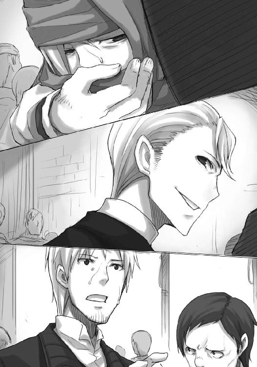
キーマンはそして、ずぶずぶと人ごみの中に飲み込まれていくエーブのあとを追いかけるように、雑踏の中に消えた。
気がつけばロレンスにナイフを突きつけていた小間使いの男もおらず、ロレンス一人だけが取り残されている。
それでもしばらく動けなかったのは、最後に見た光景が目に焼きついていたからだ。
なにか不気味な生き物のようにうごめく人ごみの中から、一縷の望みを賭けて伸ばされた一本の手。
ロレンスはそれを取ることができなかった。
金貨百枚の海ですら、おぼれる時は一瞬だ。
それがイッカクのような想像を絶する高価な商品を巡る渦の中、足を踏み外せばどんな場所に飲み込まれるのか、聖職者であれば顔を真っ青にして口をつぐむだろう。
エーブはついに足を踏み外したのだ。
危ない橋を渡り続け、ついに足を滑らせたのだ。
キーマンの言葉が耳の奥でこだまする。
他言すると後悔する。私も必死ですから。
計画がどこかで決定的に破綻したのだ。
テッド・レイノルズの名と、イッカクを彼に売るつもりではないというエーブの言葉。
そして、取り残され、無事な自分。
大した情報など持っていないと判断されたのか、それとも、エーブにいいように踊らされていただけと判断されたのか。どちらにせよ、キーマンたちにとってロレンスなど本当に情報の伝達役でしかなかったらしい。
ロレンスは、ため息をつき、突然の吐き気に襲われた。慌ててエーブと共に逃げ込むはずだった路地に駆け込み、大きくえずいて胃の中身を全て吐き出した。
無力感ではない。
信じられないほどの自己嫌悪感に我慢できなかったのだ。
ロレンスはほっとしてしまった。
自分がキーマンに連れていかれないでほっとしてしまったのだ。
ホロに大見得を切り、キーマンを圧倒できると思い込み、そしてエーブとのやり取りを経てなお自分はこの話の行く末をどうにかできる可能性を失っていない、などと思っていた。
それが、この体たらくだ。
無力感に襲われたのであればまだ立ち上がれる。
いつだって商人は自分の手の中にないものを追い求めて前に進むのだから。
ロレンスは吐く物がなくなっても何度もえずいて、最後に唾を吐く。
自分はホロを救うことができたし、何度も危ないところをくぐり抜けてきた。
それが根拠のない自信を作っていただけならばまだしも、その薄皮を一枚めくれば内側は以前よりも腐っていた。
視界がぼやけているのは、決して嘔吐の苦しみのせいだけではない。
エーブの行動はちぐはぐだった。
計画の破綻がレイノルズからの手紙によってもたらされ、せめてロレンスだけはと自らの危険も顧みず、南側まで知らせに来てくれた。
となると、エーブはロレンスを単なる駒だと見ていなかったことになる。
ロレンスに共に裏切ろうと持ちかけてきたのも、イッカクを手に入れようとするのとは別のなにかがあったのかもしれない。
それなのに、ロレンスは、エーブだけが連れていかれたことにほっとしてしまった。
自分は勇気に満ちた主人公ではない。
そのことを思い知らされるのにこれ以上のことがあるだろうか。
「くそ」
ロレンスは悪態をつき、石壁を殴る。
損をした、得をしたの話ならば、自分が納得するか、あるいは諦めるかで決着がつく。
しかし、それが人を巻き込んだ話となるとそうはいかなくなる。行商人をしていて、荷馬車の上で続く一人旅が孤独なものだったことは確かだ。それでも、自分一人の心配だけをしていればいい、という利点も理解していた。
本当なら、行商人だって、その気になれば訪れる町で所帯を持つこともできる。それをしなかったのは、それができなかったのは、自分が臆病なお人好しだからとわかっていたからだ。
行商とは、出会いと別れの永遠の旅路。
次の町でもっといい商品と出会えると期待するなら、どうして目の前の商品だけで満足する？
そんな大それたことを思っていたのも事実で、ついにホロという逸品に大枚をはたいてしまったのもまた事実。
ただ、だからといってホロだけが無事ならなにもかも安泰だ、などと言えるわけがない。
行商人の呪いは、ある種の言い訳という意味だってある。人と人との関係は、金で割り切れるようなものではない。金でなにもかもを判断できるのならば、エーブとキーマンの間に挟まれてあんなにも動揺はしないはずだ。
イッカクを巡る話の中で、自分が死ぬまでに稼ぐ金額など塵芥程度の価値にしかならないからだ。
だからこそ、金よりも重要な他人との関係を、金よりも得るのが難しい高嶺の花、と思い込むことで遠ざけようとする。
荷馬車に積める積荷の量は決まっていて、それは自分の心でも同様だ。
自分の器の広さは知っている。
ロレンスは、石壁に拳を突き立てながら体を起こし、紫色に染まる空を見上げて涙を拭う。
ホロさえいれば、と馬鹿になれるなら問題はいつだって簡単だった。
しかし、器にはいつだって別のものが入り込み、大事なものすら押し出そうとする。
それは好奇心旺盛な商人には健全なことかもしれないし、修道士のような鉄の意志を持たない凡人ではどうしようもないことかもしれない。
それでも、器の中から色々なものがあふれないように、本当に大事なものはこぼさないようにとあたふたしてきたこれまでの旅は、波風立たない一人での行商よりも断然に面白かった。
そう、面白かった。面白かったのだ。
ずっと同じ行商路を、馬の尻を眺めながらぐるぐる回っているだけの旅ではなかった。
口の中に残る、苦くすっぱいものを再度吐き出して、口元を乱暴に拭う。
泥をすすり地を這いずり回り、それでも積荷を次の町に全て運びきるのが行商人のはず。
積荷は決して落としてはならない。
どんな困難に遭っても絶対に落としてはならない。
「ならば」
ロレンスは呟いて、停止した思考を無理やりに動かした。
目の前でエーブが攫われたのはむしろ幸運だと思わなければならない。そんな荒っぽい手段を講じてきたのなら、事態は相当に切迫してきているし、そうなれば複雑な構造は作れない。
長期的な視点に立ち、数多の人間に根回しをし、あらゆる方法で予測される危険を回避する策を立てる戦いには不慣れでも、目の前の商品の売った買ったは得意分野だ。
自分にも勝機はある。
あるはずだ。
それに、とロレンスは胸中で呟く。
市場の外側から、町の中で行われる商品のやり取りを、外部の人間ならではの冷静な視点でもって眺め回す時の心持ちで、呟いた。
それに、自分は一人ではない。
いつ頃からそこにいたのか、なぜそこにいるのか、とはロレンスも問いはしない。
宿でじっとしていられるわけはない、というのはわかるし、なにが起こっているかわからない状況では人のいる場所に陣を取り耳を澄ませるのは基本中の基本ともいえ、その点港は最良の場所だ。
しかも、旅の連れ二人共に、目ざとさでは比類ない。
世界の果てに落ちる針の音でも聞き分けられそうな狼の耳を持つそいつは、少し離れた石壁にもたれたまま、不機嫌そうに腕組みをしていた。
きっと、全てを見られていた。
見られていなくとも、簡単に察せられてしまうだろう。
ロレンスは苦笑いをして、肩をすくめる。
そうすることで、自分はいつもどおりに振る舞えるとまじないをかけるように。
「知恵ならば貸す」
フードの下から、小さい顎だけを覗かせてホロは言った。
「十分だ」
「他の雌を助けるために何度わっちの知恵を借りるつもりかや？」
あまりにもあんまりなほどまっすぐな言葉をぶつけてくるのは、迂遠なやり取りをできる状況ではないからか。
それとも、ついに我慢できなくなったからか。
ロレンスは笑う。
自然に笑って、こう答えた。
「だが、旅を共にするのはお前だけだ」
ホロは返事をしてこないが、軽く弾みをつけて壁から背中を離すと、こきりこきりと首を曲げて骨を鳴らす。
くすぐったい言葉に我慢がならない、とも見て取れるが、そんなことを言ったら頭からまるかじりにされるに違いない。
「コル坊に連中のあとをつけさせておる」
「港で耳を澄ませてみた結果は？」
「わからぬ。じゃが、ぬしが陸に上がる前から一部の連中に動揺が広がっておったのは見て取れた。そこのパン屋の三階に陣取っておったからな。面白いほどよくわかりんす」
となれば、キーマンやエーブといった本当にごく一部の人間だけが浮き足立つ類のことではないことになる。
なにかもっと大きな流れのせいで、キーマンたちの密航船もあおりを受けたことになる。
エーブは連れ去られ際、レイノルズにイッカクを売るつもりなどない、と言った。
とすれば、エーブが握っていた手紙は、レイノルズからの打診をしたためたものだったということだ。その事実をキーマンとエーブをつなぐ密約にとどまらず、もっと広い視点で捉えるとどうなるだろうか？
レイノルズは北側の地主たちの陣営にいるはずで、それで大きな流れとなれば、可能性は限られる。
レイノルズは、陰に陽に、イッカクを買いつけようと行動を起こしている？
「それは、多分、北側の人間がイッカクを買おうと動いているせいだと思う」
「ふむ......」
「だが、それだけならキーマンが慌て、エーブが危険を冒して俺に会いに来た理由にはならない。それが彼らのまったくの予想外のことだったから、こんなことになったはずだ」
ホロは、ロレンスの手を引いて歩き出し、口を開く。
「みすぼらしい町じゃったからな。とても金があるようには思えぬ」
「そう。しかも、その動きの中心にいるのはレイノルズだという」
銅貨を詰める箱の数を誤魔化して、小銭を稼いでいるようなレイノルズが、そんな大金を用意できるわけがない。
「ないものは常に借りねばならぬ」
「そのとおりだ。レイノルズが本当にイッカクを買うつもりなら、それはどこからか資金調達をしてきたということだ。ああ、そうだ。だから、キーマンやエーブがあんなにも取り乱していたんだ」
ホロがようやくフードの下から目を見せてくれた。
眉根に皺の寄った跡がうっすら残っている。
ロレンスが南側の岸に上がり、エーブと出会い、キーマンを目の前にし、その後の顚末まで全て見られていたのだとしたら、ホロはそれを前にずっとしかめっ面だったことだろう。
ホロがコルにそうしてやったように、全てが片づいたらその皺が取れるようにしてやらなければならない。
「金と権力は仲がいい。このイッカクのやり取りにどこかの金を持った権力者が絡んできたとなると、話が一気に複雑になる。わかるか？」
古今東西変わらぬこと。
ホロは、わっちを試すなと言いたげに唇を尖らせて答えた。
「......ぬしらは飯屋で注文した飯が出てこなかったら、代金を返せと言うだけじゃからな」
さすがの頭の回転の速さだ。
ロレンスは、エーブが力ずくで連れていかれた場面を思い出す。
損得と、帳簿の上の数字のやり取りだけではすまなくなってきたからこそあんなことになったのだ。
「頼んだ料理が出てこなかったら、金と血であがなわせるのが奴らの流儀。そうなると......もしもこの仮説が正しいのなら、キーマンがエーブを連れていく先は一つしかない」
権力には権力を。
レイノルズがエーブにイッカクの買い付けを申し出たのは、レイノルズがキーマンとエーブの密約を薄々予想していたからだろう。
そして、そうであるならばいつ表の力がキーマンたちに襲いかかってくるかわからない。
その時に、一人や二人のごろつきを周りにおいているだけでは逆効果にしかならない。
ロレンスは、今度はホロの手を引いて逆の方向に歩き出す。
ホロはどこかでコルと落ち合う約束をしていたのだろうが、もしもロレンスの予測が合っているならば行き先は決まっている。
雑踏の中をかき分けるように進んでいき、ほどなくしてたどり着いた。
そこは、昨日来た時よりもさらに警備が増えている。
まるで、不測の事態に備えているかのように。
「教会？」
ホロが呟いた直後、その目がなにかに引きつけられるように動き、その先には驚いた顔のコルがいた。
「あ、あの、なぜここに？」
ぼろぼろの外套を頭から被って物乞いに扮したコルが訊ねてくる。
ロレンスは自分の予測が当たったことを確信する。
「キーマンたちは中か。どの道エーブを助けるには一度会って話を聞かなければならないからな。どう攻めたらいいと思う？」
ロレンスが言うと、ホロは牙を見せて、楽しそうに笑ったのだった。
「何用か」
教会の石段を上り入り口にたどり着くと、二人の兵士が槍を交差させて行く手を阻む。
ロレンスは、ホロと服を取り替えたコルを連れて、笑顔でこう言った。
「ローエン商業組合の、ルド・キーマン様に御用がありまして」
それは神から賜りし魔法の言葉だが、いつまでも同じ玉座に同じ神がいるとは限らない。
昨日とは違い、兵士の一人が難しい顔のまま扉を開けて中に入っていき、残る一人は容赦なくロレンスに向かって槍を突きつけていた。
ホロが提案したのは至極単純な策で、意外なところといえば、ロレンスの隣にいるのがホロではなくコルだけだという点だろう。
「......中に」
教会の中に入っていった兵士が間もなく出てきて、短い言葉だけを告げてきた。
ひとまず槍を収めた兵士にロレンスは笑顔で挨拶し、兵士が開けているわずかな隙間から教会の中に体を滑り込ませるようにして入った。
コルも入ると扉はすぐに閉じられ、再び槍を向けられた。
「......」
進め、ということだろう。
ロレンスは歩き出し、後ろから槍で促されるままに聖堂の周りをぐるりと取り囲む回廊を歩いていった。
教会の中は不気味なほどに静まり返っていて、蠟燭の炎が揺れる音すら聞こえそうだった。
天井が高く、壁や柱頭に刻まれた彫刻はどれ一つとっても手間のかかった見事なもの。
ただ、それら全てが世の恐ろしさを知らしめるための異界の魔物たちだったのは、なにかの予兆なのか。
回廊の途中の一室の前で、止まれ、と指示される。
普段はちょっとした倉庫にでも使われているのか、特になんの変哲もない木の扉で、兵士がノックすると静かに開かれた。
そこから顔を見せたのは例の小間使い。
ロレンスの顔を認めると、あからさまに不快そうな顔をした。
「キーマンさんにお話が」
特上の笑みでそう言ってやる。
行商人風情が、と思われているのは承知しているので、相手の神経を逆撫でするのが目的だ。
ホロが提案した単純な策は、これくらいのほうが効果がある。
「わざわざ見逃してやったのがわからねえのか？」
脅しは、薮の中から突然出てくる蛇のように使われてこそその真価を発揮する。
それが来るとわかっているのなら、ロレンスにも対処のしようはある。
「火中の栗を拾ってこその商売ですから」
ロレンスが答えた瞬間、男の顔色が変わりその手が胸元に伸びてくる。
来るとわかっていれば驚かない。
ロレンスは男が胸倉を摑むと同時に体を引き、逆に相手の胸倉を摑んで部屋から引っ張りだした。
「わざわざ交渉しに来たというのがわからないのですか？」
笑顔のまま言うと、ぽかんとしていた兵士が慌ててロレンスと男を引き剝がそうとして、そこに別の声が響いた。
「どんな御用でしょうか？」
それでロレンスは男の胸倉から手を離し、相手もほとんど同時に同じことをした。
教会の荘厳な雰囲気にその落ち着いた上品な言葉遣いが嫌味なほど似合う。
それでも若干髪形の乱れたキーマンが、部屋の入り口に立っていた。
「私の知人と話がしたく」
「単刀直入ですね。許可できるとでも？」
すっと小間使いの男は主の側に立ち、暗い目つきでこちらを睨んでくる。
それに対抗するつもりがあったのかどうかはわからないが、隣でコルが負けじと胸を張ったことには勇気づけられた。
「簡単にはさせてくれないとは思っています」
「では、どうしますか？ 私は悠長にあなたと話をしている状況ではありません。この教会には幸い部屋がいくつもありますから......」
と、冷たい視線を向けてくる。
多勢に無勢。
しかし、単純な脅しをしてくるのは、余裕がない証拠だ。
「もちろんです。ただ、私がなんの準備もなく来たと思われるのは心外ですね」
「ふん？」
「いえ、こう言うべきでしょうか。私はてっきり、私を捕らえると面倒なことになるからキーマンさんは私を見逃したのだと思っていました」
キーマンの端正な顔立ちに皺が寄る。
ロレンスは、たたみかけるように言葉を続けた。
「エーブさんは私の気を引くために色々と便宜を図ってくれましたからね。私が私の身を守るために協力してくれましたよ。例えば」
わざとらしく咳払い。
「例えば、あなたの署名入りの羊皮紙を売ってくれるとか」
小間使いの男が動こうとしたのを、キーマンが手で制した。
唇の右端だけがつり上がり、顔半分で笑うような不気味な笑顔を浮かべていた。
「よく見れば、お連れの方はあの女性ではありませんね」
「すばしっこさで勝るのは彼女なので。それに、懐に羊皮紙数枚くらいならば少女でも運べます」
「......」
エーブとのやり取りを表沙汰にされればキーマンは苦しくなる。
なんらかの手を打っているにせよ、事態が混乱しているのであればそれがうまく機能するかはわからない。
キーマンはこれ以上の危険を抱え込みたくはないはず。
それに、ロレンスをエーブと会わせたところでどうということもない。そう判断するはずだ。
「わかりました」
キーマンのその言葉に、小間使いの男が主の顔を見る。
「二人をお連れしろ」
そして、そう言われたら、唇を嚙みつつもうなずくその忠誠心は、確かに見上げたものかもしれない。同時に恨みのこもった一瞥を向けられるが、街中で出会って本当に怖いのは主のいない野良犬であり、訓練された獰猛な番犬ではない。
「私の利益になることを摑んだら、それなりの値で買いますよ」
キーマンも商人だ。
ロレンスは肩越しに振り向き、笑顔でうなずいておいた。
「こっちだ」
小間使いの男に導かれていったのは、回廊の途中に設けられていた地下に続く階段だ。
宝物庫か、あるいは、異教徒との戦いの最前線だった頃の名残かもしれない。
暗く、湿った階段を下りていくと、鉄製の扉に突き当たる。
男が変わった扉の叩き方をすると、中から鍵が外された。
小間使いの男は、扉に手をかけることなくロレンスを振り向いてこう言った。
「逃げられると思うなよ」
「承知しております」
慇懃に答えると、男がぎりりと歯を食いしばった。
ロレンスは自分で扉を開き、部屋に入る。
コルが続いて入り、ゆっくりと扉を閉める頃には、中の人物も状況が理解できたらしい。
捕らわれの姫よろしく、蠟燭が揺らめく地下室で藁の上に座っているエーブは、最高の冗談だ、とばかりに顔を歪めて歯を見せた。
若干の間をあけて、だいぶ落ち着きを取り戻したらしい。
その不恰好な笑みは、エーブなりの照れ隠しかもしれない。
「お話を伺いに参りました」
「どんな......戯言がお望みだ？」
見張りの男に短剣を渡し、ロレンスとコルは武器を持っていないことを確認される。
その間に部屋を遠慮なく見回してみたが、やはり元々は地下倉庫なのかもしれない。
今は多少荷物が片づけられていて、あいた場所には藁が敷かれ毛布が置かれ、水も食べ物も用意されているし後ろ手に縛られているということもない。
凄惨な状況になっている可能性も考えていたので、その点については素直にほっとする。
エーブは見目麗しい。
鞭や棍棒だけが口を割らせる道具ではない。
「行商人は、新しい町に着いたらまず情報を集めます」
「なるほど。よくまああの男が市壁を通したものだ......ああ、隣にいるのが坊やなのか。なるほどな」
この手の知恵の回り方は実地で学んできたのだろうエーブだ。
ロレンスがどんな手段を使ってこの地下室に下りてきたのかすぐに理解したらしい。
「一人で帰りを待つあの娘を迎えに行く時は、花束では足りないな」
「......前回は頰をしこたま殴られましてね」
「はっは......確かに気の強そうな娘だ」
これが日の当たる軒先で行われる雑談であったらさぞ素晴らしい休日になったに違いない。
だが、生憎と側では抜き身の長剣を腰から提げた男がじっと見つめている。
扉の外にはあの小間使いの男がいるだろうし、もしかしたらキーマンも聞き耳を立てているかもしれない。
「まあ、今のところはあなたがパンを小さくちぎって食べる羽目になっていなくてほっとしています」
「ふん。オレを傷つける度胸はキーマンにはない。レイノルズは素寒貧のはずだからな、どこかしらの金持ちが北側の味方についたはずだ。そして、この近辺で金持ちの人間となれば数は限られる。そうなればオレとどうつながっているかわからない。せいぜい浴びせられるのは罵声だけだ」
その嫌味が、長剣を提げている男に向けられたのは間違いがない。
もっとも、エーブの性格からして本当に取るに足らない相手だと思っていたら嫌味すら向けはしないだろうから、水と食べ物は側に立つ男の配慮なのかもしれない。
「だが、これはキーマンにも散々言ったんだが、レイノルズからの手紙はオレにとっても足元の梯子を外されるようなものだった。キーマンとの密約を元にオレを利用しようと思えば......オレは使いでがあるからな」
声の調子は変わらないのに、その雰囲気は一変する。
コルの固唾を飲む音が聞こえそうだった。
「やはり、後ろに金持ちの権力者がいることは確実なのですか？」
「それはキーマンも疑っていることだろうが、とにかく北側で最も景気のいい商売をしているレイノルズですらあんな状況だからな。見知った顔の誰かが金を持っている、とは考えにくい。もちろん、レイノルズか誰かの知恵で、金も持っていないのに買い付けの注文を出したとは考えられる」
「目的は？」
エーブは、ぞろりと歯を見せて笑った。
「オレたちのような、イッカクを巡って暗躍している連中から金を巻き上げるためさ」
ロレンスの顔が笑みの形になってしまったのは、世の中本当に色々なことを考える者がいるのだと思い知らされたからだ。
「苦労して積み重ねた一世一代の大博打を邪魔されたくなければ、金を払えと」
「北側はどうせ負け戦だ。せめてもの利益をかき集めようと誰かが言い出してもおかしくはない。無茶をしても周りが納得せざるを得ないような奇策を打とうとしている連中は他にもいるはずだからな。泡を食って金を出すだろう。もっとも、勝手にイッカクを売り飛ばそうなんて大胆な計画は、さすがにオレたちだけだろうが」
教会のこの場所をキーマンが即座に確保して、エーブを軟禁できる時点で、その大胆すぎる計画がどれほど緻密に構成されていたかの片鱗が窺える。
使った金も相当なもののはず。
それが水泡に帰すくらいならば、レイノルズに金を積んで買い付けの取り消しを申し出たほうがいい。
「もっとも、キーマンがオレをここに閉じ込めているあたり、レイノルズが金も持っていないのに買い付けの注文を出したという可能性は低い。キーマンはオレが北側の権力者に取り込まれることをなにより恐れている。オレを閉じ込めているというのは、レイノルズの後ろに権力者がいる可能性が濃厚だと判断しているからだろう。オレが......オレが、わざわざあんたに会いに来たのも、その心当たりがあまりにも多すぎたからだ」
エーブは、ケルーベから船で半日の、海峡を渡った先にあるウィンフィール王国の元貴族だ。
エーブと過去関わりのあった権力者を書き上げていけば、きっと羊皮紙が真っ黒になるような相関図が書けるに違いない。
大義名分がなければなかなか動けないが、いざそれさえできてしまえばなんでもやるのが権力者だ。イッカクを巡る取引の密約など、彼らの格好の餌食だろう。
しかも、エーブ一人を悪者に仕立て上げることで、さらなる無茶をして金儲けができれば一石二鳥というわけだ。祭りが終わったあとにエーブが生きているかどころか、果たして人の形を保っているかすらわからない。
イッカクを持って南に逃げるというのは、エーブの切実な願いだったのだろう。
「それが、ここまでの馬鹿とはな」
エーブは呆れるように言って、丸めた毛布に肘を載せ、寄りかかった。
「ここまで状況がわかれば、あとは数日の町の動きを見ていれば全部わかるだろうさ。まあ、レイノルズが金を持っていようといまいと、あるいはその金をどこから調達しようと、オレとあんたが顔を合わせるのはこれが最後だろうがね」
いつになく饒舌なのは、きっと張り詰めていたものが緩んだ反動だろう。
ただ、ひとしきり喋って満足したのか、はたまた疲れが出たのか、エーブは目を伏せ、ゆっくりと欠伸をする。
何事にも動じない王者の風格すら漂わせている。
それが決して神々しく見えなかったのは、ゆっくりと口から紡がれた短い言葉のせいだった。
「ここにいるのは手練ればかりだからな。苦しまずに死ねるなら幸いだ」
コルが小さく声を上げ、エーブが視線を上げながらそんなコルに微笑みかけていた。
「証拠隠滅、ですか」
「オレには口がついているからな」
肩をすくめながらそんなことを言える人間がこの世にどれほどいるだろうか。
ロレンスがなにかを言いかけると、エーブは娘のように笑ってこう言った。
「最後に、あんたがオレの子供のようなわがままに付き合ってくれたからな。楽しかった」
顔を背け、視線を遠くしたその横顔は真実美しかった。
「どんなひどい晩餐会も、最後の料理がうまければめでたしめでたし」
ずく、と胸がうずいたのは、そんなエーブが哀れだったからではない。
自分はまさしくそのために、ホロと旅を続けることを選んだのだ。
ホロとだけ笑っていられればそれでいい。
しかし、他のなにを差し置いてもそう思うことができれば、こんな場所にはそもそも立っていない。
「あなたをここから救うにはどうしたらいいでしょう？」
ロレンスがそう訊ねると、すぐ側で見張りを務める男も驚いたし、なによりエーブ自身が驚いた。
「正気か？」
エーブが言いながら視線を向けたのは、ロレンスではなく見張りの男にだった。
「......なんとも。生憎、私は商人ではないので」
下手をすれば首を刎ねる側と刎ねられる側なのに、二人は旧知の間柄のような調子で言葉を交わす。
「だが、一つ言えることは......」
「言わなくていい。そいつもわかっている」
ロレンスを向いて口を開いた男に対し、エーブはそう言って言葉を制した。
男はエーブを見て、しばし黙考しているようだったがおとなしく口をつぐんだ。
ロレンスも彼らがなにを言おうとしているのかはわかる。
完全な絶望はある種の平穏をもたらしてくれる。
しかし、その中にわずかな希望がまざった時だけ、想像を絶する苦しみが生まれるのだ。
「オレを救う可能性があるとすればな、それは唯一つ」
エーブの顔がそれでもなお落ち着いていたのは、彼女の心が鉄でできているからではない。
「レイノルズが自前で金を用意していた時だけだ」
エーブは言って、目を閉じた。
「喋って疲れた。ここ二日、寝てないんだ」
果報は寝て待てというが、エーブが深い眠りから目を覚ます時は、おそらく永遠の眠りにつく時だ。
それでも、エーブは本当に眠りにつくように、体を横たえてしまう。
もう、話したくないということだろうし、ロレンスも十分だった。
金で雇われたのか、それとも元々キーマンの配下なのか、なんにせよ職業意識の高い見張りの男に対し、軽く目礼してロレンスは身を翻した。
ロレンスが預けた短剣を受け取っている最中、コルはやり取りが納得できないのか、それとも理解したくないのか、ずっとロレンスに必死で目で訴えてくる。
ロレンスはその頭に手を置くだけで、なにも言わなかった。
ただ、部屋から出る際に、振り向いて一言だけ短く言った。
「おやすみなさい」
軽く手を挙げて答えたエーブのその姿が、とても印象的だった。
地下室から出たロレンスとコルは、小間使いの男の一瞥を受けてから地上に出た。
会話は全て聞いていただろうし、そのうちのいくつかはキーマンに報告するかもしれない。
それでも、なにか有益な情報を与えられるとは思えない。
エーブもロレンスも商人であり、商人ほど口から出るものが信用できない者たちは存在しない。
商人は、言葉の外でこそ本当の会話をするのだから。
「有益な会話はできましたか？」
キーマンのいた部屋に戻ると、頰にインクの跡をつけたキーマンは羊皮紙から顔も上げずにそう言った。
「ええ。エーブさんはかなり口が達者ですから」
紙の最後に音がしそうなほどの速さで署名を施すと、キーマンは側に詰めている配下の者に押しつけて次の手紙に取り掛かる。
情報収集と根回しと、それに恫喝や懇願も含まれているかもしれない。
図体が大きければその力は計り知れない。
しかし、方向転換をする時の大変さはその比ではない。
「私が仲介した取引は中止でしょうか」
キーマンは自分の能力の限界で手紙を読み、また返事をしたためていたようで、ロレンスのその質問に行動がぴたりと止まった。
少なくとも、その質問はキーマンの頭を使わせる質問だったのだ。
「パン屋の店主を自分の店に閉じ込めて、その店に買い物をしに行くというのは実に神学的な問題だと思いませんか」
「お金と商品さえあれば、人はいなくても商売は成り立ちますから」
「確かにそのとおりです。しかし、今本当にパン屋にパンが並んでいるのかどうか、それを知らなければなりません。確かにパンが欲しければパン屋の主をパン屋に返せばいいのですが、我々に恨みを抱いていないとも限りません。我々はそのパン屋の主が別の店で毒を買っていたと聞いたので慌てて取り押さえたのですが......」
「その毒が鼠を殺すためのものだったのか、それともパンに練り込むためのものだったのか、わかるのは自らがそのパンを口に含む時」
再びキーマンの手元で、ざざっと署名する音が響き、ようやくその視線がこちらを向いた。
「あるいは、鼠が死ぬ時です」
事態を見極めるまで混乱を助長させかねない危険人物は閉じ込めておく。数多の人間を動かすキーマンならではの発想だったのかもしれない。
エーブを拷問にかけて事の真偽を確かめようとしないのは、場合によってはエーブを傷つけると自分の首を絞めることになりかねないからだろう。
ただ、複雑な事態に直面した時、大本の原因を絶ってしまえばいいという発想は、ホロも取り入れるくらいの万能薬だ。
「なんにせよ、狼に気に入られていたご様子ですから、あなたも身の安全にはお気をつけください。もちろん、それなりに自衛はしていらっしゃるでしょうが」
エーブに会おうとここにやってきた時、ロレンスがキーマンを脅すために使った手のことを皮肉っているのだろう。
しかし、キーマンに都合の悪い文書をホロが持っている、などということが実際には噓だとここで告げたらキーマンはどんな顔をするだろうか。
ロレンスはそう考えることで顔を笑みの形にして、「お気遣いありがとうございます」と答えることができた。
「では、お客様をお送りしろ」
そこで話は終わりだとばかりに、キーマンは小間使いの男に言って再びペンを走らせ始めた。
男は恭しく頭を下げ、ロレンスらを表の出入り口に連れていく。
やってきた客は、出ていかねばならない。
その数が合わない時、そこでは必ずなんらかの事件が起こっているからだ。
「覚えていろ」
大きな扉の隙間から吐き出されるように外に出る直前、小間使いの男が口汚くそう言った。
ロレンスが返事をする間もなく、扉はごごんと音を立てて閉じられた。
二人の兵士が横目でこちらを盗み見ている。
ロレンスは、わざとらしく襟元を直しながら、「警備ご苦労様です」と言ったのだった。
ロレンスたちが教会をあとにして向かったのは宿ではなく、ナイフや馬具を製造する鍛冶職人たちの多く集まる地区の路地の一角だった。工房によっては週に四十本や五十本といった数のナイフを鍛造し、その町からはるか遠方の地であっても、その工房の銘が入ったナイフに出会うことがある。
ロレンスとコルは、そんな工房の間を無言で歩いていた。
ロレンスは考えることがあったし、コルは口を利きたくない様子だった。
金のない旅をしていれば、嫌でも人が死ぬ場面に出くわすことがある。
病、飢え、老い、あるいは怪我や事故。
なんにせよ、彼らが永遠の旅路に出ることは珍しいことではない。
それでもコルがずっと表情を硬くしているのは、あのエーブの門出が、異様で納得のできないものに映ったからだろう。
「怒ってるのか？」
訊ねると、コルはしばらく迷ったのちに首を横に振り、やがて諦めるように縦に振った。
「この話は、俺とホロのわがままで首を突っ込んだようなものだ。降りても誰も責めはしない」
それに、危険がつきまとうことも説明した。
しかし、コルは今度はすぐに首を横に振って、顔を上げた。
「僕が目をつぶることで理不尽なことがなくなるのなら、そうします」
自分とも、ホロとも違う、第三の物の見方。
ロレンスがうなずいて前を向くと、コルもまたそれに倣う。
それでも、まっすぐに事実を直視するのは難しいらしかった。
「エーブさんは......助けられる......んですよね？」
皮算用が大好きな商人でも、安請け合いのできないことはたくさんある。
ロレンスはその質問に、こう答えた。
「少なくとも、俺はそうしようと思って動いている」
逃げ口上だと取られてもおかしくはないし、実際にその意味合いが少なからずある。
エーブが言った、自身が助かる唯一の道。
それは、レイノルズが自身の資金で、自分か、あるいは北側の利益のためにイッカクを買い取ろうとしている時だけだ。
その時だけ、物事は単純に、商品の売買に落ち着くことになる。
ちょっとした物音に全身を強張らせて息を殺していた盗人たちが、徐々に行動を再開するようにキーマンたちは事後処理を行っていくことだろう。
しかし、その唯一の道には灯りが一つもともっておらず、見通しは限りなく暗かった。
レイノルズの軒先を見ればそれは明らかだし、ケルーベの町に住む者たちでなくてもその懐具合は予測できる。
可能性は、千に一つか、さもなくば、万に一つか。
「銅貨の箱の話では......やっぱり足りないのでしょうか」
コルが気がついた、ローム川を下ってやってくる銅貨の箱の数の差を用いた秘密の儲け話。
レイノルズは、銅貨の輸出入に絡んで、同じ枚数の銅貨に対し、川を下る時は箱の数を少なくし、海を渡らせる時は箱の数を増やすということをやっていたのは間違いがない。
「そこから期待できるのは、関税が箱の数にかかるという事実を利用した税逃れがせいぜいだ。イッカクを買えるような金額にはならない」
「......」
コルはうつむきがちに、まるでふてくされるように深く思考の海に沈んでいく。
ひとつのことを考えると他のことが目に入らなくなるのは自分の悪い癖だとロレンスは自覚しているが、それでも目の前にもっと顕著な例がいるとそんな過ちも起こしにくくなる。
軽くコルの頭を小突いて、小さく言った。
「まあ、知恵を巡らせるのも大事なんだが......」
「え？」
「まずは、身を守ることが先決だな。俺たちが入ってきた穴は、そういう場所だ」
ロレンスはコルの背中を押して足を速め、コルが言葉の意味を理解した直後から走り出した。
コルはあまりにも正直すぎる。全てを説明していたら、この場所に来るまでに緊張が表に出ていただろう。
職人たちが住む街区にしては、鍛冶職人たちが工房を構える地区は道が広い。それはそこで使われる重い材料を運ぶためで、道もしっかりとした造りになっている。曲がりくねり、あれこれの物が置かれた路地はどうしてもその土地の者のほうが走りなれている。
綺麗な走りやすい道ならば、早く走れるのは旅に暮らす者のほうだ。
ローブの裾をたくし上げ、コルも勇ましく走る。
「待て！ 貴様ら！」
商人が盗人を追いかける様は街中ではよく見かける光景だが、商人が暴漢に追いかけられる光景を白昼街中で見るのは珍しい。
ナイフ、剣、ヤスリに釘、スプーンや鍋などを一心不乱に叩いたり磨いたりしている職人たちが何事かと顔を上げる。
人攫いは人目についたらおしまいだ。
ロレンスとコルが白い息をなびかせながら職人街区を走り抜けていくと、あっという間に追っ手の姿は見えなくなった。
ただ、まいたというわけではない。
彼らは地の利を生かして先回りしようと考えたに違いない。
忠実な牧羊犬よろしく、コルがロレンスに指示を請うように視線を向けてくるが、もちろん、その先のことも考えてある。
「そろそろかな」
と、ロレンスが言うのと、前方の路地の隙間から、背の低い瘦せた物乞いが姿を見せるのはほとんど同時だった。
「あ」
コルが言うか否かの時には、もうロレンスたちは路地に飛び込んでいた。
物乞いはなにも言わず、すでに路地の奥に向かって走っている。
今しがたまで走っていた道とは違い、こちらは慣れていないととてもではないが走ることなどできないような複雑な道だ。
物乞いはひょいひょいと進んでいくが、ロレンスたちは見失わないように追いかけるだけで精一杯。
そんな時間をどれくらいすごしたのか。
額に汗が浮き始める頃、ようやく物乞いは足を止めてこちらを振り向いた。
「ま、この辺りまで来れば大丈夫じゃろ」
さすがにホロも息が切れているが、頭からかぶっているコルから借りたぼろぼろの外套の下では、頰を上気させてどこか楽しそうな顔をしていた。
追った追われたのやり取りは、狼の血が騒ぐのかもしれない。
「あの様子だと、ぬしらは牝狐に会えたようじゃな」
「思いのほか元気そうだった」
「それはそれは。じゃが」
と、ホロは言って、いつもは自分の顔を隠しているローブの下に隠れている、コルの顔を覗き込んだ。
「その元気がどんな種類のものかといえば、こういうことじゃろう？」
こんがらがり、もはや修復不可能なうえになにとつながっているかわからない糸の塊は、置いておいても邪魔なうえに危険なだけ。
いざとなればそれを廃棄するのは至極当然のこと。
ホロはコルの右頰をつまんでにこりと笑い、自分の頰はそれ以上につり上げた。
「執念深くあり、それでいて潔くもあり、かや」
「......お前、口で言うほどエーブのこと嫌ってないだろ」
ホロはその言葉に意味ありげな含み笑いで返事をすると、顎で北を示して言葉を紡ぐ。
「港は大騒ぎじゃった。かがり火が焚かれてさながら戦でありんす」
「なにか動きがあったのですか？」
質問をしたのは頰をつままれたままのコル。
コルには悪いが、慌てている者が側にいると自分は冷静になれる。
事態が流動的なら、どれだけじれても、腹の底がふわふわしても、じっと待たなければ最良の機会を逸することになる。
しかし、その機を見つけたならばなにがなんでも摑まなければならない。
ロレンスは、うなずいてホロに先を促した。
「昨晩あれほど背を曲げておったレノイルズとやら、あれは立派な役者じゃな。堂々胸を張ってこちらに乗り込んで来んす。これまで虐げられてきた者たちは強い。己にされていたことを相手にするだけでいいんじゃからな」
「交渉を？ 南側で？」
「我輩は客である。ならば商品を見せよと騒いでおった。こちら側の連中にわっちゃあ恨みなどありんせんが、慌てふためく姿につい笑ってしまいんす」
ロレンスはコルと顔を見合わせてしまう。
商品を見せよとなれば、彼らが次にどこに向かうかなどわかりきっている。
「ぬしらの耳ではさすがに聞こえぬか。ここからじゃと通りを三つ挟んでおる」
「しかし、だということは、レイノルズは本当に金を用意しているのか」
ホロは小首をかしげ、コルはホロになにをされようとも遠い目をして黙考している。
コルの顔が歪むのと、ロレンスの頭の中に妙なものが引っかかったのはほとんど同時だった。
「お金が、あるんですか？」
口を開いたのはコルが先で、ホロは暗闇の路地の中、耳をあちこちに向けながら答える。
「啖呵の切り合いになっておったからな。商品を見せよ！ ならばそちらは金を見せよ！ の言い合いじゃ。こちら側の連中が本気で腰を浮かせたのは、それにレイノルズとやらが応じたからじゃ」
「ロレンスさん」
「ああ、だが......なぜだ。どういうことなんだ？」
ホロが肩を揺らしているのは、くつくつと笑っているからだ。
ホロは考えることを放棄している。
捕らわれた女を助けるのはいつだって男の役目であるとでも言わんばかりに。
「現金があるのはおかしいんだ。レイノルズがどれだけ素早く協力を取りつけても、現金には輸送時間がかかる。やはり、レイノルズは金を隠し持っていたのか？」
だとしたら、こんな騒ぎになるまで待っていた理由がわからない。
キーマンらをはじめとした独断専行の人間が、取り返しのつかない事態にしてしまう可能性だって十分にあった。
それに、狼の骨の話を追いかけている過程で何度も考えた。
大量の現金は図体のでかい巨人だ。
それが動けば誰も気がつかないわけがない。
どうやって、誰にも気がつかれずに、イッカクを買えるほどの現金を蓄えられるというのだろうか。
町商人たちの陰険さは体験ずみだ。
彼らは港を見張り、誰がどれだけの商品を日々どれくらい扱っているかなどほとんど把握しているはずだ。商品は実体を持ち、実体を持つ物は必ず人の目につくことになる。
だとしたら、キーマンたちがレイノルズは金を持っていないと判断したのであれば、それは実際にそのはずに違いない。
「なにがどうかはわかりんせん。じゃが、事実を把握するのは簡単じゃ」
ホロが軽く伸びをして、深呼吸を一つ。
過去を懐かしむように目を細めてあらぬ方向を見ているのは、その先にレイノルズたちがいるからだろう。
「動きがありんす。連中は教会に行くはずじゃ」
「なぜだ。どうして金がある。誰の金なんだ！」
教会にはキーマンがいてエーブがいる。
そこに金箱を引っ提げたレイノルズたちが大挙して押し寄せた時、一体そこでどんな喜劇が行われるというのだろうか？
どんな金も金は金、というのはそうそう当て嵌まる言葉ではない。
それがどんな金で、どこから来て、誰のもので、どんな性質のものかというのは重要なことだ。
キーマンたちも恐慌状態に陥っているはず。
証拠隠滅に追われ、裏口からは重要な手紙類を抱えた部下たちが沈みかける船から逃げる鼠のように逃げ出している真っ最中だろう。
もしも地下室にエーブが閉じ込められているとなれば、最も困るのは一体誰だ？
それは言うまでもなくキーマンで、キーマンの上役に当たるジーダ館長だ。
レイノルズがエーブとキーマンの密約に気がついていない、ということはあり得ない。
それに北側の地主たちに助言をする中心になっていたのもレイノルズであるから、エーブが忽然と姿を消したことも把握しているだろう。
そこまでくると、少し頭を働かせるだけでエーブがどこにいるかはすぐにわかる。
あとは、どのような穴に彼らを落とし込むかを選ぶだけ。
防戦一方のキーマンたちは逃げるほかない。
今頃はエーブも地下室から引きずり出されて路地を走らされているだろうか。
しかし、密偵を使い、あちこちに見張りを立てているのは自分たちだけではない。その中でキーマンやエーブといった重要人物を見逃すような節穴の目をした連中がどれだけいるだろうか。
逃げるところを見つかればますます言い訳が利かなくなる。
八方塞がりとはこのことだ。
「ロレンスさん、このままじゃ、エーブさんが！」
コルがロレンスの肩を摑んで悲鳴のように叫ぶ。
もうキーマンたちに時間はない。
レイノルズが持っている金は誰の金なのか、確かめる術はない。
そうなれば、キーマンが自分の身を守るためにはどんな選択肢を選ぶだろうか。
答えは簡単だ。
口裏を合わせてくれる連中だけで周りを固めればいい。
その中に、エーブが入ると信じられる根拠は、爪の先ほどもない。
「道は、三つありんす」
神と呼ばれることを忌避した麦に宿る狼の化身は、路地の先で豆粒のように小さく見える、横切る松明の灯りに目を細めながら言った。
「一つは、諦める。一つは、わっちに頼む。もう一つは」
「一か八かで行ってみる」
ホロの顔が、笑っていない笑顔に変わる。
「行ってみて......どうするんですか？」
「なるようになることはあるものだ。切羽詰まった時には詭弁ほど強いものはない。それが真実かどうか確かめる術がないのなら、その場で最も反論できない案を出した者が勝ちだ」
「キーマンとやらを説得できれば、牝狐の命は救えるやもしれんな」
コルが瞬きもせずホロとロレンスを見比べるのは、見たくもない演技を見せられていると直感したからだろう。
「その当ては？ あるんですか？」
コルの目を見れない。
年を取るというのは、他人どころか自分も誤魔化す術を身につけていくことに他ならない。
「なくても、作るんだ」
「そんなっ」
「全ての難問に満足いく答えがあるわけではありんせん」
ホロの一言に、コルの目が溶け出してしまったかのように涙があふれてきた。
「なら、なら、ホロさんが──」
「あれだけ人がいる中に飛び込んで、全ての者が無事、ということはあり得るのか？」
ロレンスは努めて抑えた口調でホロに言った。
ロレンスの言葉に軽く頰を搔き、首を斜めにかしげた。
「あの色つき硝子を破ってもあの建物が崩れなければ、あるいは」
空高くに向かって聳えた塔のことを思い出す。
積み木だってレンガだって、高く積み上げれば安定さは損なわれる。
万が一建物が崩れたら、さすがのホロも無事ではすまないだろうし、なによりも多くの人間が瓦礫の下敷きになる。
かといって表の入り口から飛び込めば、無数の槍衾を前にすることになる。
ホロは神ではない。
神ではないのだ。
「今ならわっちらだけ逃げ出せばどうにかなるじゃろう。ぬしの群れも、よい奴もいれば悪い奴もおる。全てが敵というわけではなかろう？」
その可能性に賭ける選択肢も当然ある。
キーマンの企んでいたことがここで表沙汰になれば、どう見たって主犯格はキーマンになる。
ロレンスは逆らえず利用されていた哀れな行商人。
そんなふうにかばってくれる仲間だっているはずだ。
「......」
コルはがっくりとうなだれて、涙を拭うこともせずうつむいている。
村を救いたくて、単身南に向かって旅立ったコル。
そんな決意を揺らがず抱ける心には、強さ以上に優しさがなければならない。
エーブが眩しそうにコルを見つめ、優しくしていたのはきっとその光に当てられたからだ。
「取れる選択肢がいくつあっても、取れる結果はいつも一つだ」
「ならば選択肢を選ぶのではなく、結果を選ぶほかありんせん、か」
旅の途中であれば、見捨てなければならない荷物、儲け話、あるいは仲間や通りすがりの怪我人などに出くわすことはいくらでもある。
後ろ髪を引かれることもあれば、必死にこちらの服の裾を摑んでくる者もいる。
その点、エーブはどうだったか。
潔く、眠いから寝ると言ってゴロンと横になったあの姿を思い出す。
こうなることを薄々予想していたのだろう。
いつでも選択肢は無限にあった。
しかし、結果はおおよそ一つに絞られる。
逆転劇などそうそうあるわけではない。
順当な結果は覆りにくいからこそ、逆転劇は希少なのだ。
「レイノルズが金貨の輸出入を扱っていればな」
「む？」
「コルの気がついた方法でも、相当な資産が溜まったかもしれない」
雪の降りしきる山の中で狼の群れに襲われた時、足をくじいてしまった仲間を置き去りにして樵小屋に飛び込んだ。
誰もが黙っていられず、その夜は酒もないのに皆が頰を上気させて喋りっぱなしだった。
「関税は、せいぜいその商品の価格の二割から三割。それでも、金貨ならば一箱の二割となればすごい金額になる。もっとも、そうなれば銅貨よりもよほど厳しく枚数が管理されるからな。どの道あの手は使えないだろうが」
ロレンスはコルの肩を抱いて、ホロを目で促して歩き出した。
逃げ出すならば、この混乱に乗じなければならない。
「ふむ。コル坊の気がついた手が、逆だったらよかったのにの」
「逆？」
ロレンスが訊ねると、ホロは壁に立てかけてあった木の棒をまたぎながら、「うむ」と答えた。
「六十箱を手に入れて、五十八箱を送り出す。箱一杯の銅貨が二箱も手に入るとなれば、大儲けじゃろう？」
「ああ、確かにな......。あるいは、六十箱を手に入れて、六十箱を送り出す」
「それでは同じじゃろうが」
「そうか？ 川を下るときはたくさん銅貨が詰まるように箱に詰め、送り出す時は少なく詰めて送り出す。その差の分だけ懐に入るという寸法だ。そうなると、毎回二箱分を少し超えるくらいの利益だな。もっとも、それが成り立つには川上のデバウ商会が損をしなければならないが」
そんなことをしてなんになるのか。
ロレンスがそう思った直後だった。
「え？」
短く言って、顔を上げたのはコルだ。
ロレンスがその突然のことに驚かなかったのは、ロレンスの思考もまた変な穴に入り込んでいたからだ。
「今、なにかおかしなことを言ったよな？」
ホロだけがきょとんとして、男二人を見比べている。
ロレンスは自分の発言を思い返す。
必死に思い返す。
銅貨の輸出入の策はレイノルズにわずかな利益しかもたらさないはずだ。
大きな利益を得ているとすれば、それはデバウ商会かウィンフィール王国の顧客が大損をしている時に他ならない。
「銅貨という品物の絶対数は変わらない。変わるのは銅貨を詰める箱の数と、関税と、それと......それと？」
喉から最後の一言が出てこない。
なにか当たり前のことがわかっていないようなもどかしさ。
コルが、けっけっと魚の骨が喉に引っかかったようにえずいている。
それが慌てていて言葉が出てこないのだと気がついた時、解答が閃光のごとく頭で爆発した。
「代金です！ 商品の銅貨で『逆』ができないなら、代金ですればいいんです！ デバウ商会は困りません。だって──」
「最後の最後に全ての勘定さえ合えば問題ない。問題ないのか！ レイノルズはローム川の上流からどんな命令を下されていた？ だとすればレイノルズが巨額の資金を持っていてもおかしくはないし、その使用をためらっていた理由も存在する。存在するんだっ」
ケルーベの町で見てきたことと聞いてきたことが、一つの線上でつながった。
その線はレイノルズがこんな短期間でイッカクを買えるほどの金を用意したことも説明できるし、感じていた違和感の全てを説明することができた。
金は、レイノルズのものだ。
後ろに誰かいるとしても、それは遠い遠い離れた場所にいる、こんなことが起こっているなどと露ほどにも思っていない連中だ。
彼らに連絡がつくのは全ての出来事が決着してからで、レイノルズはだからこそ教会に向けて駒を進めているのだ。
大義名分が揃っていれば大抵のことは許される。
しかも利益が上がればなおよろしい。
ロレンスは面白くもないのに口元が笑みの形に歪んでいくのを抑えきれない。
レイノルズにみすみすその利益を渡してなるものか。
全てが自分の手の届く範囲に降りてきた。
手を伸ばすのは、この瞬間しかない！
「行くぞ」
言って、走り出した直後だった。
「ほら、なにを──」
振り向いて怒鳴りかけた直後だ。
「わっちゃあ行かぬ」
ホロは、立ち止まって、笑っていた。
「......なにを今更！ 大丈夫だ、これは思い込みじゃない、確かに筋の通った考えなんだ」
ロレンスの言葉にホロは首を横に振り、「そういうことではありんせん」と言った。
「なら」
なんだ、という言葉は続かなかった。
「ぬしが他の雌の前で格好つける姿を見たくありんせん」
ホロは少女のように恥ずかしそうに笑いながら言って、べっと舌を出した。
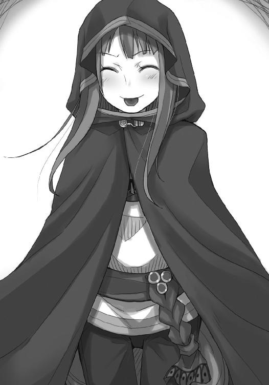
そんな振る舞いを一体どこで覚えてきたのか。
笑うしかない。
笑うしかないし、ホロはロレンスを笑わせたかったのだ。
「呆れてものも言えないぞ」
「んむ。ならばわっちを置いて走れるじゃろう？」
目を閉じて大きく息を吸う。
エーブの言葉は意味深で重い。
ホロを迎えに来る時、花束では足りはしない。
「コル」
「はい。任せてください」
顔に涙の跡をつけながら、にこりと笑う笑顔は本物だ。
ホロの手を力強く握るその姿に、嫉妬の代わりに安心感を抱けるのはコル以外に存在しない。
「くふ。こういう形もいいものじゃ」
ホロは笑い、それから小さくため息を一つ。
「ほれ、早く行きんす。連中は祭りのごとく練り歩いておるが、もうそろそろじゃろう」
その言葉の指し示す意味に、ロレンスは踵を返して走り出す。
暗い路地の中、後ろを振り向くことがどれだけ危険かわからないわけではない。
しかし、ロレンスは後ろを振り向いた。
ホロとコルが揃って手を振っている。
一瞬だけ見られれば十分だった。
ロレンスは走る。
教会に向けて、ひた走った。
路地から教会の前に飛び出すと、そこは妙な賑わい方だった。
夜の帳が下りればまともな市民は家の中で夕食に舌鼓を打っている。
今からここでなにが行われるかを知っているのは商人たちで、彼らは一様に好奇心に突き動かされながらも、後難を恐れて遠巻きに事態を見守っていた。
すると、教会の前を広く開けた形になって、人垣は港からのレイノルズ一行を待ち構える格好になる。
嵐の前の静けさとはよく言ったもの。
まさしくその静けさを前に、ロレンスは広く開けられた道をまっすぐに横切って、一直線に教会の中に飛び込もうとした。
「......」
兵士たちも、観客の商人たちも一瞬なにが起こったのかわからないような、あるいは、なにか正式な使いの人間がやってきたのだろうとでも思ったらしい。
走るロレンスに視線を向けるだけで誰一人動こうとせず、ロレンスが教会の中に入ってようやく、後ろから兵士の一人が怒鳴り声を上げていた。
ロレンスは当然止まるわけがない。
レイノルズたちを受け入れるために広く開け放たれた教会の中で、迷うこともなく右に折れ、回廊を走って奥を目指す。
壁に掛けられた蠟燭の灯りに照らされて、奥のほうに点々と見えるのは運んでいる最中に落とした手紙などだろう。
キーマンのいた部屋は扉が半開きになっていて、ためらわずに開けたが誰もいない。
足を踏み外した時のような感覚に襲われたのは、それが事態の進展を告げるものだからだ。
間に合ってくれ。
ロレンスは胸中で叫び、再び走って地下室へと続く階段の前にたどり着いた。
奥からは灯りが漏れている。
誰かしらがいる証拠だが、静かなのが不気味だった。
祈るように階段を下りていく。
そして、足音に気がついたのか、下から上がってきたその男。
その男の服に血がついているのを見て、ロレンスは首筋の毛が逆立つのを感じた。
「お、おまぇ──」
相手の背が低いのと、階段が急なのと、ロレンスが上にいたこと全てが作用した。
男の顔にロレンスの爪先がめり込み、男は鈍い音を立てて壁に頭をぶつけ、そのままずるずると座り込む。
手にはいつの間に握られていたのか銀のナイフ。
ロレンスはさらに走り、鉄の扉を思い切りよく開いて飛び込んだ。
そこで見た光景。
ロレンスは、あらん限りの力を込めて大声で叫んだ。
「待ってください！」
その場にいた者が、一人を除いてびくりと体をすくませた。
まずキーマンが振り返り、見張りをしていた男が顔をこちらに向けた。
男の太い腕の中では、エーブの顔がうつろな表情を晒していた。
後ろ手に縛られ、足を縛られているのは暴れるのを防ぐためか。
首を刎ねる選択肢を取らなかったのは、血痕の処理のことを考えてだろう。
「待ってください！ その必要はありません！」
男が視線をキーマンに向け、腕から力を抜きかけたのがわかった。
まだ死んでいない。
その判断の直後だ。
表情をなくしたキーマンが、髪を振り乱して飛びかかってきた。
「誰の差し金だ！ 誰から金を受け取った！ 言え！ 行商人！」
冷静さのかけらもなく、ロレンスの胸倉を摑んでくるその手を見れば、親指の爪がぼろぼろになっていた。
こうなっては敵ではない。
ロレンスは腰を沈め、勢い込んだキーマンがロレンスの上に覆いかぶさるようになったところを、腰を両腕で抱え込んで思い切り体を捻った。
キーマンは天と地の区別が一瞬つかなくなったことだろう。
「ぐう」
と、カエルがつぶれるような声を出して、ロレンスの体の下で力なくもがいた。
「エーブさんを放してください！ すぐに！」
馬乗りになったキーマンの喉元にナイフを突き立て、ロレンスは言った。
男はエーブに恨みがあるわけではないし、この手のことに不慣れな人間でもない。
あとは自分の損得を考えるのみだが、キーマンから片時も目を離さないままのロレンスに、逆転は不可能と判断したらしい。
視界の隅で、男が腕を解き、両手を軽く掲げるのが見えた。
「息は」
聞くと、「気を失ったばかりだが」と返ってくる。
首を絞めなれている人間であれば、相手の意識をまず奪ってから命を絶つことが簡単にできる。どれだけ命の火が堪えられるかは、個人の資質による。
「行......商人、が......」
意識が現実に追いついたのか、それとも背中を強打して息ができなかったのがようやく元に戻ったのか、キーマンは苦しげに言って、ロレンスを片目だけで睨んでくる。
「エーブさんが生きていれば、よい話をお聞かせします」
「どういうことだい」
男はエーブの頰を叩き、直後に短くうめき声が聞こえてきた。
死んではいない。自分を一度は殺そうとした相手が生きているのを心の底から喜べるのは、まったく不思議なことだと感心する。
キーマンが依然として苦しそうなのは、遠くから大勢の人間が教会の中に入ってくる音を聞いたからだろう。ここが見つかり、エーブがレイノルズの前に引き出されるのはもはや時間の問題だった。
「レイノルズさんは、自分で金を用意したんですよ」
「そんな馬鹿な！」
自分の喉元にナイフを突き立てられながら、キーマンは危うく体を起こしかけていた。
それほどのことなのだ。
しかし、レイノルズは間違いなく自分で金を用意した。
そうとしか考えられなかった。
「私は行商人ですから、自分の利益のために動くので精一杯です。レイノルズさんとは利害の対立がありましてね、あの人にその利益を持っていかれるわけにはいかないんです」
キーマンが訝しげな顔をする。
理解できないのも仕方がない。
ロレンスは、そこで初めてはっきりと視線をキーマンから離して、エーブのほうを見た。
「......なにに......気がついたんだ......」
かすれた声で喋るのは、男に支えてもらって体を起こしたエーブだ。
今まさしく死の淵から生還したというのに、第一声がそれなのだ。
「私は狼の骨の話を追いかけてこの町に来ましてね」
ロレンスは洗いざらい気がついたことを喋った。
キーマンなら、エーブなら、その真偽のほどをロレンス以上に確信できるはず。
そして。
「どいてくださいロレンスさん」
キーマンは静かに言って、目は天井を見ていた。
エーブもうっすらと笑っている。
キーマンの言うとおりにしてしまったのは、彼らのほうが商人としては格上だからに他ならない。
「やれますか？」
ロレンスはナイフを収め、キーマンは起き上がりながら咳き込んで、髪を撫でつけると襟元を正した。
「やらなければなりません。もっとも」
と、視線を今しがたまでその命を奪おうとしていた相手に向けて、ぬけぬけとこう言った。
「彼女が我々を裏切らなければ、の話ですが」
「また、金儲けをできるらしいからな」
掌を閉じたり開いたりしながら、エーブはわざとらしく自分の首を撫でる。
「神の顔は爺やに似ていた気がしたんだが、確かめるのはまた今度だ」
「天の国までの旅費を稼ぎませんとね」
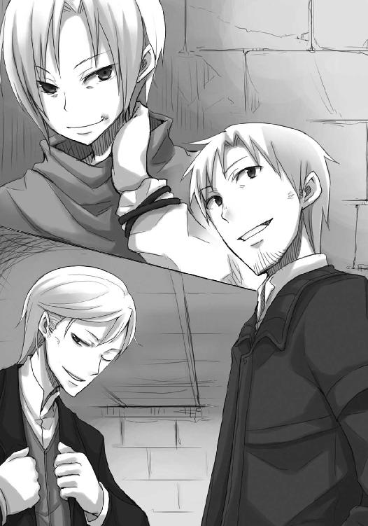
動き出せば彼らは早い。
それが頼もしくあるのは、その力を向けられた時の恐怖感を知っているからだ。
エーブは、教会で息を吹き返した人間らしく、敬虔な口調でこう言った。
「嗚呼。まったく、商人とは頭のおかしい罪深き連中だ」
教会に入ってきた一団は異様だった。
レイノルズを先頭に、金貨を詰めてあるのだろう小さな箱を恭しく抱えた者たちがぞろぞろつき従ってくる。
その光景はまるで嫁入り道具を持参してやってきた花嫁のようにも見えるが、彼が神聖なる教会に持ち込んだのは、神の威光に対抗しようとしているようにも見えるピカピカの金貨だ。
金貨は箱の大きさからして一箱に百枚ずつ詰められているのだろう。
それらが目算で十五箱。
祭壇の前に置かれているイッカクの前に、これ見よがしに積まれたそれの前でレイノルズは誇らしげに胸を張る。
司教や司祭のみが立てるその場所にレイノルズがいるのなら、平信徒たちが座る席の周辺にいるのは南側の有力者たちだ。
取引のうえでなら、彼らほどの大商人であれば金貨千枚程度のやり取りは珍しくはない。
しかし、現金となれば話が変わる。
商人たちが口約束や羊皮紙の上で取引を行うのは、現金は宝石と同じく貴重で数が少ないものだからだ。
そのため、現金を大量に集めようとすれば必ず誰かにかぎつけられ、金貨となれば両替商たちの帳簿に載らないわけがない。椅子に座り、蠟燭の灯りでぼんやりと照らされた神に祈り出す者がいてもおかしくはない。
レイノルズの奇襲は完璧だった。
「さあ、私はあなた方の要請に応じてこうして金貨を持ってまいりました！ ここは神聖なる神のおわすところ！ 約束は守られねばなりません！」
突き出た腹にたるんた頰の肉。
場末感のにじみ出る商会に座っている時はみすぼらしさの象徴のそれも、いざ場所と立場が変わればこんなにも威厳を見せる小道具となりうるのだ。
一世一代の大芝居とばかりに高らかに響かせる声も、実に堂に入ったものだった。
「私は二代目ジーン商会の主として、商会の歴史に残る取引をここに宣言いたします！」
ばしゃ、と水がはねたのは、その声に驚いたのか、それとも張り詰める空気に当てられたのか、イッカクが棺の中で身じろぎをしたからだ。
そして、まさしく水を打ったように聖堂が静まり返る。
ロレンスは回廊沿いの扉の隙間から目を離し、蠟燭の灯りが漏れる部屋に戻った。
レイノルズ率いる一行が教会に到着した直後、ジーダ館長の部下と名乗る男が真っ先にキーマンらの下にやってきたが、キーマンは少しも臆することなく追い返してしまった。
これからの計画が失敗すればどの道キーマンは責任を取らされるし、成功すればジーダ館長も黙らざるを得なくなる。
もっとも、ロレンスは少しも心配していない。
キーマンとエーブが揃ってレイノルズを突き刺す武器を作っているのだ。
この二人を敵に回して無事でいられる商人がいるだろうか。
祭壇の前で意気揚々としていたレイノルズのことを思うと、若干心が痛まないでもなかった。
「私が思いつく限りだとこんなところでしょうか」
「関税と輸送費に口止め料込みでも、まあ、おおよそそんなところだろう。デバウ商会の店構えを見たことがあるが、確かにこのくらいの規模なら隠しきれそうなものだった」
羊皮紙の上に踊る文字と数字に精通したキーマンと、流通を表から裏まで知り尽くしたエーブにかかれば一商会の取引内容など完全に丸裸にされてしまう。
荷馬車に荷を積んでは売り買いしている行商人からすれば、それはまったく空恐ろしい光景だ。
「ロレンスさん、聖堂のほうは？」
「予定どおりです。レイノルズさんが有無を言わせぬ感じで迫っていますが、南側の即答はもちろん無理でしょう。しばらく時間があくはずです」
ロレンスは二人の作戦会議に参加せず、手先に徹してそう報告する。
それでも嫌な感じがしないのは、なんとも不思議なことではあった。
「では、その機に乗じて、ですね」
キーマンが仕切ると、エーブはうなずき、もちろんロレンスもうなずく。
イッカクを独占するという計画はもはや維持し得ない。
それでも、そこから利益を取れなくなったかというとそういうわけではない。
簡単にいえば、エーブとキーマンで山分けしようとしていたイッカクを巡る儲け話に、レイノルズが加わるようなもの。
それが任意か強制かは、論を待たないことではあるが。
「ほら、これがあんたの最後の仕事だ」
インクが乾くのを待てないので、砂をまいた羊皮紙を丸め、エーブがロレンスに突き出してくる。
その冗談めかした物言いにキーマンが申し訳なさそうに笑っている。
エーブが笑っていない理由は、ロレンスにもなんとなくわかった。
ただ、ロレンスがエーブの手から羊皮紙を受け取り際、エーブがその理由を口にするとは思わなかった。
「本当は川の上であんたと会いたかったけどな」
「......私は陽光の下で貴女が旅立つのを見送るほうがいいですよ。なにせ、私を出し抜いた商売敵ですからね」
エーブは目を細め、それ以上なにも言わなかった。
キーマンはキーマンで、そのやり取りであのままイッカクの取引を続けていたらどうなったのか、おおよそのことが把握できたらしい。
苦笑いをしつつ、やれやれと首をかしげていた。
「それでは、今しばらくお待ちください」
ロレンスはその一言を残して歩き出し、キーマンたちの集う回廊沿いの部屋の入り口に立っていた小間使いの男から、相変わらず恨みのこもった一瞥を貰った。
彼の服に血がついていたのは、エーブを縛る際に鼻を蹴られたものだったという。
ただ、つい商売用の笑みで返事をしてしまったのは、きっとこの男とそりが合わないからだろう。ロレンスはそう納得して、回廊に出た。
回廊では蠟燭の灯りのもとで幾人ずつかが固まってあれこれと囁き合っている。
この期に及んでなおなにかを企んでいる者たちなのか、それとも単に今後のことを協議し合っているだけなのか。
どちらにせよ、この荘厳な教会の聖堂の中で行われている儀式めいたことを根底から覆せる羊皮紙を持ったロレンスの胸は自然に大きく張っていた。
今は自分が主人公。
そう思えるからこそ、ロレンスは祭壇へと続く最も近い扉の前で警備をする兵士に事情を話し、聖堂の中に入る時にはもう背を丸めて神妙な顔つきになっていた。
聖堂の中は不思議なざわめきに包まれており、不敵な笑みを持ってその様子を睥睨しているのはレイノルズただ一人だ。
「レイノルズさん」
人垣の間を縫って祭壇の前にたどり着き、レイノルズに向かってそう囁いた。
知らない仲ではない。
こちらを向いたレイノルズはそれでも大袈裟に顔をほころばせて、古くからの友人に出会ったような喜び方をした。
「これはこれは。一体どうされました」
わざとらしさも超一流。
確かに、レイノルズは一筋縄ではいかない商人だった。
「ええ、実は、とある女性からお手紙を預かっておりまして」
レイノルズが、それをエーブのものであると理解するのに時間はかからなかった。
「ほほう」
その顔が、蠟燭の灯りに相応しい、欲に満ちた嫌味なものになったのはその一瞬後のこと。レイノルズはその資金の都合上、エーブと手を組む必要があるはずで、手間が省けたとでも思ったのだろう。
「取引のお申し出だそうです」
ロレンスが懐から羊皮紙を手渡すと、レイノルズの笑みははちきれんばかりだった。
この状況ならばエーブをいいように利用できるのは明々白々。
恋文を開こうとする少年のようにいそいそと羊皮紙を開く。
そして、その直後の顔つきを見て、ほくそ笑まなかった自分を褒めてあげたい。
「レイノルズさんはたくさんの商品をお取扱いになっているそうですから、是非一度帳簿の整理を申し出たいと。その際は、私の所属する組合からも目利きの人間をご用意いたします」
「......あ......あう......」
「銅貨については確信が持てていますし、証拠もあります。五十八箱の銅貨をデバウ商会から取り寄せて、六十箱をウィンフィール王国に送り出す。最初は関税を誤魔化しているのだと思いましたけどね」
ロレンスがレイノルズの耳元で囁くたびに、ぼたり、ぼたりとレイノルズの顔から汗が滴り落ちる。
まるでロレンスの吐息が熱すぎて、蠟人形が溶けていくかのようだった。
「あなたは関税を誤魔化して小銭を稼いでいたのではない。デバウ商会と協力して、大量の資金を川下に移動させていた」
銅貨の詰め方によって箱の中に入る銅貨の枚数が変化する。
その小細工を利用した、秘密裏の資金移動法。
「あなたはウィンフィールから六十箱分の代金を受け取り、デバウ商会には五十八箱分の代金を支払っていた。それぞれの取引を見る限り、帳簿の上では完全に成立する取引です。ただ、その中に詰まる銅貨の枚数と、支払う代金が釣り合っているかどうかは、帳簿からではわからない」
紙のように真っ白になった顔の中で、ぎょろりと目だけが動いてロレンスを見た。
「しかし、輸出入を見比べてみると、毎回二箱分の差額がジーン商会にとどまることになりますね？ そして、この方法は他にいくらでも使うことができる」
ロレンスがコルからこの謎を教えてもらった時に言った言葉だ。
こんな方法が使われているのではないかと疑うには、この方法を使うことのできる商品があまりにも多すぎる。
自分だけが主人公と思うには、世間でうごめく人間の数があまりにも多いように。
「銅地金、鉛地金、錫地金、真鍮、あるいはそれらの細工物。規格の揃った円形のものならば応用可能。ロエフ地方は豊かな鉱山のようですから、さぞ色々な鉱物が出るでしょうね」
「い......いや、しかし」
「単に資金の移動を秘密裏にしていただけならば問題ないと？ いいえ、そんなわけはないでしょうね。なんならデバウ商会に我が商会の者を向かわせましょうか？ 私があなたの行っている不正に気がついた時、真っ先に疑ったのは関税の誤魔化しです。それほど、税というものは重要です。では、もしもデバウ商会が税を支払いたくないと思ったらどうなるでしょう」
ぶる、ぶる、ぶる、とレイノルズの顔が引きつけを起こした子供のように震え出す。
一石二鳥。
この案を思いついた人間は、そう言ったに違いない。
「あなたとの取引は、デバウ商会の脱税にも利用可能。デバウ商会はジーン商会と銅貨の取引を交わすたびに、帳簿の上で二箱分の利益を喪失する。利益がなければ税はかけられませんからね。さて──」
ロレンスが咳払いをして言葉を区切った瞬間だった。
「どうしたい、いくら欲しい、目的はなんだ、言ってみろ」
取り乱してもなお大声を出さないだけの分別は残っていたらしい。
ロレンスはそんなレイノルズを落ち着かせるように肩に手を載せ、にこりと笑ってこう言った。
「私は手先に過ぎません。そういった交渉は......」
そして、ちらりと後ろを振り返り、人垣の向こう、回廊への出入り口を見ながら言葉を紡ぐ。
「あちらの方たちとお願いします」
「......」
その場で崩れ落ちなかったのは、レイノルズのせめてもの見栄なのかもしれない。
懐柔や買収が通じる相手ならばまだましだ。
回廊に続く出入り口でレイノルズを待ち構えているのは、笑顔で人を殺しかねない守銭奴なのだから。
「では、失礼します。私は狼の骨の話を集めに来ただけの行商人ですから」
ロレンスは言い残し、踵を返して歩き出した。
キーマンとエーブとの間をすり抜け際、二人と軽く握手をした。
この二人なら、きっとレイノルズを上手に料理してくれるに違いない。
薄暗い回廊を歩き、神妙な面持ちで会話をする商人たちの脇を通り抜けていく。
自分は英雄ではない。
偉大な商人でもない。
表舞台には立てないし、意のままに操れる人脈だってない。
教会の正面入り口から外に出ると、とっぷりと日が暮れた中に後ろから松明のかがり火が長い影を作っている。
振り向けば、威風堂々とした姿が、下からの明かりによって恐ろしげな雰囲気を醸し出していた。
石段を下り、教会の騒ぎを見物している人垣の中に紛れ、さらに歩を進めていく。
確信があったわけではない。
それでも、まっすぐに向かう場所があった。
見なれた様式の見なれた建物。
ロレンスは開けっぱなしになっていた入り口から中に入り、若干軋む階段を上って三階に上がる。
目が慣れていないので廊下は少し暗すぎたが、扉の位置くらいはなんとかわかる。
その前に立ち、ゆっくりとノックを二回。
扉の向こうで人の動く気配がし、すぐに扉が開かれた。
漏れ出てくる蠟燭の灯りと、食べ物の匂い。
一人で回る行商の旅ではついぞできなかったこの経験。
目が回るような数日だった。
それでも、ロレンスは笑顔で、こう言ったのだ。
「ただいま」
ホロとコルが、こう答えた。
「おかえり」
そして、扉はゆっくりと、閉じられたのだった。
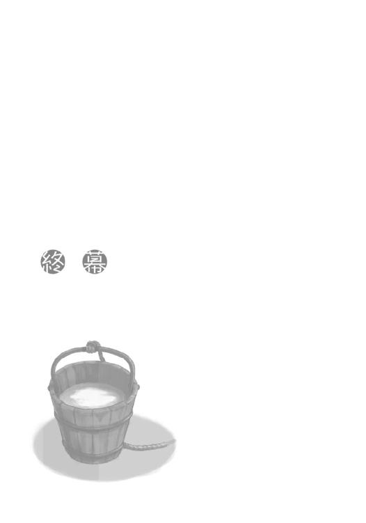
結局、あのあとキーマンとエーブがどんな無理難題をレイノルズに飲ませたのかはわからなかった。
しかし、難局に陥るかと思われたレイノルズと南側との間のイッカクの取引があっさりとまとまったことからして、ローエン商業組合を巻き込んで取引に臨んだのだろう。
レイノルズは形の上でイッカクを買い取りつつも、不正な資金やデバウ商会の脱税を黙っておく代わりに、ローエン商業組合を通じて利益が南側に還流するようにする。
そんなところだろうか。
北側の地主たちを黙らせるのには、エーブが仲介役となって利益を直接地主たちに分配したのかもしれない。
ロレンスが街の様子から判断できたのはそのくらいで、真実を知る気も知る必要もなかった。
キーマンの手先となって働いたことも、エーブと手を組みかけていたことも、全て水に流して無罪放免となったのだから問題ない。
それに、翌日の昼食はテーブルからあふれんばかりのご馳走だった。
誰が代金を持ってくれたのかも、敢えて聞くことはないだろう。
「それで、わっちらの次の目的地はどこなんじゃ？」
ナイフで切る必要も、歯を剝いて嚙みちぎる必要もない牛肉をもぐもぐしながらホロが言う。
コルなどは食べ物が上等すぎて喉につっかえさせていた。
「さあ......ん、これうまいな。なんの肉だ？」
ロレンスも上等な料理につい夢中になってしまう。
いい加減に答えたら、ホロが射抜くような視線でこちらを睨んでいた。
「レイノルズから聞き出した狼の骨の情報をエーブのところの人間が伝えに来るはずだ。そこのところは抜かりがない。大丈夫だ」
「ふん、口約束じゃろうが」
言ってから、ホロはがぶりと魚の頭を丁寧に油で揚げたものにかぶりつく。
海沿いの港町らしく、塩も椀に一杯用意されているのでたっぷり塩をまぶしたそれはたまらないうまさらしい。
ホロは一口二口と次々にかぶりつき、あっという間に平らげてしまう。
「口約束の大事さは知っているだろう？」
ロレンスの言葉にホロは返事をせず、猫よろしく自分の手をなめていた。
「まあ、多分だが、海峡を渡ることになるんじゃないかなとは思っているんだが......」
「海を？」
顔と声を上げたのは、真剣な顔で海老の頭は食べるべきか残すべきか悩んでいたコルだ。
「島国で貨幣を輸入しているくらいだからな。あれこれ買い付けるのが得意中の得意な連中がずらりと顔を揃えている」
その説明にわかったようなわからないような顔をして、コルが手元の海老に目を戻しかけた瞬間、ホロがその手から頭を奪ってひょいと食べてしまった。
ばりばりと殻を嚙み砕く音がする。
コルは、海老を取られたことよりも、それを食べるホロのほうに驚いてしまったらしい。
「海老の頭は食べられる。なかなかうまい」
「えっ」
コルがそれで恨めしそうな顔をすればホロも喜んだのだろうが、悲しそうな顔をされたらさすがの賢狼も弱い。
「む」
などと言いながら、さらに海老に伸ばしかけていた手を引っ込めざるを得なかった。
「仲良く食べなさい」
冗談めかして言ってやると香草の切れ端をホロに投げつけられ、「まったく......」と頰にひっついたそれを取っていると、扉が控えめにノックされた。
コルが立ち上がろうとしたが、ちょっとした予感もあったのでロレンスが出ることにした。
「エーブの使いだろう」
ロレンスは言って、扉を少し開ける。
食事中に扉を全て開けるのは、見栄っ張りか、恥知らずかのどちらかだ。
ただ、その隙間から見えた客の顔に、全てを開けなくてよかったとロレンスは思った。
「おや、オレは中でもよかったんだがな」
ロレンスが廊下に出て、後ろ手に戸を閉めるとエーブはいたずらっぽく言った。
ホロには丸聞こえだろうが、喧嘩されるよりはましだ。
「ご冗談を。しかし、ご本人が来られるとは」
「あんたは意外に情が薄いな。オレは恩は忘れない性質でね。しかもあんたは命の恩人だ」
頭巾の下で細める目は、なにがどこまで冗談なのか決して相手に悟らせない。
それでも、直接知らせに来てくれたのが嬉しくないかと言われたら、そんなわけはない。
「で、あんたに頼まれていたことだがな」
「どうでした？」
「ああ、レイノルズはやはり骨の行方をある程度摑んでいた」
言葉の選び方が気になって、ロレンスは聞き返す。
「ある程度？」
「あいつの到達地点はオレよりも手前だったということさ」
小首をかしげる様が、実に嫌味ったらしい。
エーブは最初から、ロレンスたちの最も欲しがる話をその胸の中に納めていたのだ。
「怒るな。オレもそうとは思わなかったんだ」
「それで？」
「くっく。そんな真剣な顔、昨日は見せなかった気がするが」
ロレンスは顎を指で突つかれ、顔をしかめてしまう。
エーブの機嫌がいいのは、酒でも飲んでいるのかもしれない。
「先に言うとな、ウィンフィール王国。オレの故郷の、ブロンデル大修道院、わかるか」
「ブロ......まさか、金の羊の？」
「ほう、その話を知っているとは。大陸側だと年寄りしか知らないんだがな。そう。その金の羊伝説のある大修道院だ」
見渡す限りの大平原に、神ですらその数を把握しきれない羊を囲う修道院がある。
そして、数百年に一度、その無数の羊の中に金の毛を持つ羊が紛れているという伝説がある。
ウィンフィール王国きっての富裕な修道院。
その規模は、有名な大商会と比べても遜色のないほどだ、といわれている。
「そこの修道院長が買い求めたという話を聞いた。真偽のほどはもちろんわからないが」
「いえ、ありがとうございます。このお礼はきっと──」
ロレンスが勢い込んで言いかけたのを止めたのは、エーブの笑顔だった。
「野暮なこと言うな。恩に着ているのは本当だ。アロルドも毛皮も戻ってきた。南に下る船も用意してな。だから」
エーブは言って、ゆっくりと手を差し出してきた。
まっすぐにロレンスの目を見たまま、微笑をたたえたまま。
「......失礼しました」
ロレンスも笑い、エーブの手を握ろうと視線を落とした、その瞬間だった。
「.........っ.........！」
予感があったかなかったかなど、もはやまったく記憶にない。
それくらい頭の中が真っ白になるほどに、驚いていた。
「......この香り、アビの草か？ キーマンはずいぶんな料理を用意したらしいな」
エーブは笑いながら言って、何事もなかったかのように頭巾を元に戻した。
「商売は相手の意表を突いた時に最も儲かるものだとあんたから教えてもらったからな。その授業料だ」
まだ頭が追いつかないロレンスの肩に手を載せて顔を近づけてくる。
「ウィンフィールでならオレの名はそこそこ使えるだろう。フルール・フォン・イーターゼンテル・ボラン。これが正式な名前だが、本当は近しい者だけが知る隠し名が間に入る。フルール・フォン・イーターゼンテル・マリエル・ボラン。マリエルというのは、響きも気に入っていてね」
言って、無邪気に笑うのは頭巾なしで見たかった。
「なにかの役に立てばと思う。ロレンス」
突然名前を呼ばれ、一瞬間があいてしまったが、ロレンスはきちんと返事をした。
「はい」
「クラフト・ロレンス。出会えてよかった」
それは旅装が似合う歴戦の商人としての言葉。
固く顔に巻いた頭巾と、一分の隙もなく体を覆う旅支度。
ロレンスの肩からを手を離し、きちんと背筋を伸ばした一人の商人が静かに手を差し出してくる。
嫌味なほどに清々しい旅商人の立ち姿。
ロレンスはそれを取り、固く力を込めた。
「エーブ・ボランの名は忘れませんよ」
「くっくっ。なに、金のあるところに我あり、だ。どこかでまた会うだろうさ」
あっさりと手を離したエーブは踵を返し、少しの未練も残さず歩き出した。
行商は出会いと別れの永遠の旅路。
ロレンスもまた後ろの扉を振り返り、開こうとしてその手を止めた。
「ん......どうした？」
扉が開いて、そこに立っていたのはコルだった。
手にはなぜか料理が山盛りになった皿を持って、顔は少し怯えている。
「外に出ていろって」
扉の開き具合のせいで、角度的にここからだとホロが見えない。
しかし、ロレンスはその言葉とコルの様子から全てを察し、コルの頭を撫でてこう言った。
「ちょっと廊下で辛抱しててくれ」
うまく笑えたかどうかは怪しいが、笑わないとやってられない。
ただ、コルがおとなしくうなずいて入れ違いに廊下に出ようとしたところに、ロレンスはコルが手に持つ皿の上からちょっとだけ失敬した。
香りのきつい、エーブが言ったアビの草。
ホロがロレンスに投げつけたものだ。
それを一房取り、口に放り込む。
もぐもぐと咀嚼しながら部屋に入り、後ろ手に扉を閉じる。
そのあとのことは思い出したくもない。
ロレンスは、伝記を書くとしたらこんなふうに締めくくろうと、現実逃避するように胸中で呟いたのだった。
終わり
あとがき
お久しぶりです。支倉凍砂です。今回は上下巻の下巻になります。
一度は書き上がっていた原稿なのでさっくり書き終わるだろう、なんて思っていた時期が大変懐かしいくらいに苦労しました。といいますのも、今まで一冊のうちで起承転結をつけていたのに、今度は転で終わった上巻を引き継いで、下巻でも起承転結をつけないといけなかったからです。
あとは、単純にどのくらいのエピソードを足すとどのくらいの分量になるのか皆目わからず、長すぎないかなあ、短すぎないかなあ、とひやひやしていました。
良い経験になったのは確かですが、無事に書き上がってホッとしております。
もっとも、なによりも四ヶ月も待たせてしまって申し訳ありませんでした。これから先はバリバリ書かせていただきます！ 書くんですってば！
ところで、あちこちでもう言いふらしているんですが、引っ越ししました。前々からお湯が出なくなるとか窓に鍵がかからないとかの不具合はあったものの、概ね満足している家だったのでまだしばらくは暮らすだろうと思っていたのです。
それが、ある日本棚に本が入りきらなくなった途端に耐えきれなくなりました。もうそうなると部屋の汚れが手のつけようがなくなるのに大して間はありませんでした。恐ろしいなあ。
というわけで、もうちょっと広めのところに引っ越して、現在快適ライフです。
部屋の広さは心の広さ！ ゲーム中に勝手にＰＣが自動更新して再起動しても怒りません。
あまりに快適な部屋なので、ちょっとおしゃれに水槽でも置いてみようかしら、なんて思っているくらいです。草フグとかなら小さな水槽でゆったり飼えそうですし、闘魚だったらジャムの瓶に水入れておくだけでいいですし。今このあとがきを書いているつい先日、何年かぶりに熱帯魚の雑誌なんか買ってきたりしてしまったので、時間の問題かもしれません。
ただ、リビングはともかく、書斎にしようと思っている部屋がまったく片づいていない......。
次の引っ越しまでに片づくといいなあ、と思っていたらページ数が埋まったのでまた次の巻でお会いしましょう！
支倉凍砂
支倉凍砂
１９８２年12月27日生まれ。第12回電撃小説大賞〈銀賞〉受賞。物理を学んだ身として、世界は完全確率に支配されているという信条の元、株がどれほど下がろうとも慌てないことをモットーとしている。そう。まだ、慌てるような......あわ、あわわわ......。
文倉十
１９８１年生まれ、京都府出身のＡＢ型。現在関東にて、フリーで細々と活動中。最近の幸せは寝ることです。
電撃文庫
狼と香辛料IX
対立の町〈下〉
支倉凍砂
二〇十三年四月二十五日 配信
発行者 塚田正晃
発行所 株式会社アスキー・メディアワークス
〒一〇二─八五八四 東京都千代田区富士見一─八─十九
(C)2008 ISUNA HASEKURA/ASCII MEDIA WORKS
本書（電子版）に掲載されているコンテンツ（ソフトウェア／プログラム／データ／情報を含む）の著作権およびその他の権利は、すべて株式会社アスキー・メディアワークスおよび正当な権利を有する第三者に帰属しています。
法律の定めがある場合または権利者の明示的な承諾がある場合を除き、これらのコンテンツを複製・転載、改変・編集、翻案・翻訳、放送・出版、公衆送信（送信可能化を含む）・再配信、販売・頒布、貸与等に使用することはできません。